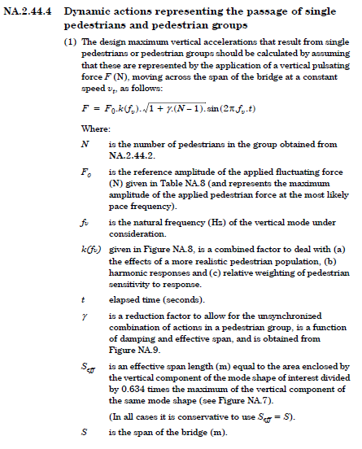

ped_dyn module
Classes used to implement pedestrian dynamics analyses
@author: rihy
# -*- coding: utf-8 -*- """ Classes used to implement pedestrian dynamics analyses @author: rihy """ from __init__ import __version__ as currentVersion # Std imports import numpy import os import scipy import pandas import matplotlib.pyplot as plt import matplotlib.gridspec as gridspec from matplotlib.ticker import FuncFormatter from mpl_toolkits.mplot3d import Axes3D from inspect import isfunction from numpy import real, imag import itertools from copy import deepcopy # DynSys package imports import dyn_analysis import loading from dynsys import PlotFrequencyResponse import tstep #from loading import UKNA_BSEN1991_2_walkers_joggers_loading as ped_loading class UKNA_BSEN1991_2_walkers_joggers_loading(loading.LoadTrain): """ Defines moving point load to represent the action of walkers / joggers per NA.2.44.4 of BS EN 1991-2  """ def __init__(self, fv:float, gamma:float=1.0, N:int=2, analysis_type:str="walkers", makePlot=True): """ Defines fluctuating point load to represent either walkers or joggers according to NA.2.44.4, UK NA to BS EN 1991-2 *** Required: * `fv`, natural frequency (Hz) of the mode under consideration *** Optional: * `gamma`, reduction factor to allow for unsynchronised actions in a pedestrian group. Value of 1.0 used by default (conservative) * `N`, _integer_ number of pedestrians in group. Default value corresponds to bridge class A; but actual value should generally be provided * `analysis_type`, _string_, either 'walkers' or 'joggers' required, to denote the case under consideration """ # Determine F0 from Table NA.8 if analysis_type=="walkers": F0 = 280 elif analysis_type=="joggers": F0 = 910 else: raise ValueError("Invalid 'analysis_type'!" + "'walkers' or 'joggers' expected") # Get k(fv) factor k = UKNA_BSEN1991_2_Figure_NA_8(fv=fv, analysis_type=analysis_type, makePlot=makePlot) # Calculate amplitude of sinusoidal forcing function per NA.2.44.4(1) F_amplitude = F0 * k * (1 + gamma*(N-1))**0.5 # Define sinusoidal function of unit amplitude def sine_func(t): return numpy.sin(2*numpy.pi*fv*t) # Run init for parent 'LoadTrain' class super().__init__(loadX=[0.0], loadVals=F_amplitude, intensityFunc=sine_func, name=analysis_type) # Save other attributes self.F0 = F0 """ Reference amplitude of applied fluctuating force (N) """ self.N = N """ Number of pedestrians in the group """ self.gamma = gamma """ Reduction factor, in the range [0,1.0], to allow for unsynchronised actions in a pedestrian group """ self.fv = fv """ Natural frequency (Hz) of the mode for which loading has been derived """ self.k = k """ Factor to account for: * The effects of a more realistic pedestrian population * Harmonic responses * Relative weighting of pedestrian sensitivity to response """ self.F_amplitude = F_amplitude """ Amplitude of sinusoidal moving load (N) calculated according to NA.2.44.4(1) """ class UKNA_BSEN1991_2_walkers_joggers(dyn_analysis.MovingLoadAnalysis): """ Implements transient analysis for walkers/joggers case per NA.2.44.4 of UK NA to BS EN 1992-1:2003 """ def __init__(self, modalsys_obj, mode_index:int, name=None, bridgeClass='A', analysis_type="walkers", dt=None, verbose=True, calc_Seff=True, makePlot=False, dt_factor=20, **kwargs): """ Initialisation function *** Required: * `modalsys_obj`, object defining modal system to be analysed * `mode_index`, _integer_ to denote mode at which resonance should to targeted *** Optional: * `dt`, time step to be used for results evaluation. If _None_ then a suitable `dt` to use will be determined according to `dt_factor` (see below) * `dt_factor`, factor to apply to damped natural frequency `f_d` of mode under consideration, for the purpose of determining appropriate `dt` value (see above): `dt = 1 / (dt_factor * f_d)`. Note only used if `dt=None` * calc_Seff`, _boolean_, dictates whether effective span will be computed according to Figure NA.7. If False, overall span will be used (conservative) Additional keyword arguments can be defined. These should relate the `__init__()` function of the `MovingLoadAnalysis` class """ # Create default name for analysis object if name is None: name = modalsys_obj.name + " - Mode %d - %s" % (mode_index, analysis_type) # Get applicable parameters per Table NA.7 according to bridgeClass bridgeClass = bridgeClass.upper() if bridgeClass == 'A': N_walkers = 2 N_joggers = 0 elif bridgeClass == 'B': N_walkers = 4 N_joggers = 1 elif bridgeClass == 'C': N_walkers = 8 N_joggers = 2 elif bridgeClass == 'D': N_walkers = 16 N_joggers = 4 else: raise ValueError("Invalid 'bridgeClass'!") # Define loading velocity per Table NA.8 # Get appropriate N value to use if analysis_type == "walkers": load_velocity = 1.7 N_to_use = N_walkers elif analysis_type == "joggers": load_velocity = 3.0 N_to_use = N_joggers else: raise ValueError("Invalid 'analysis_type'!") self.N = N_to_use # Get natural frequency of mode to consider eig_results = modalsys_obj.CalcEigenproperties() f_d = eig_results["f_d"] # damped natural frequencies of mode f_d = numpy.abs(f_d[mode_index]) eta = eig_results["eta"][mode_index] logdec = 2*numpy.pi*eta self.fv = f_d self.eta = eta self.logdec = logdec # Analyse modeshape to determine effective span S = modalsys_obj.Ltrack if calc_Seff: attrName = "Seff" if hasattr(modalsys_obj,attrName): Seff = getattr(modalsys_obj,attrName) else: Seff, lambda_vals = Calc_Seff(modalsys_obj.modeshapeFunc,S=S, verbose=verbose, makePlot=makePlot) # save to avoid recalculating setattr(modalsys_obj,attrName,Seff) modalsys_obj.lambda_vals = lambda_vals # Get Seff for mode being considered if len(Seff)>1: Seff = Seff[int(mode_index/2)] else: # "In all cases it is conservative to use Seff = S" Seff = S self.Seff = Seff # Obtain gamma from Figure NA.9 gamma = UKNA_BSEN1991_2_Figure_NA_9(logdec,Seff,makePlot=makePlot) self.gamma = gamma # Define loading objects to represent walkers and joggers loading_obj = UKNA_BSEN1991_2_walkers_joggers_loading(fv = f_d, gamma=gamma, N=N_to_use, analysis_type=analysis_type, makePlot=makePlot) # Determine reasonable time step to use if dt is None: # Rule of thumb - 10x frequency under consideration fs = dt_factor * f_d dt = 1 / fs # Run parent init super().__init__(modalsys_obj=modalsys_obj, name=name, loadtrain_obj=loading_obj, loadVel=load_velocity, use_abs_modeshape=True, # use sign-corrected modeshapes dt=dt, **kwargs) if verbose: print("***** Transient moving load analysis initialised *****") print("Modal system:\t\t'%s'" % modalsys_obj.name) print("Bridge class:\t\t'%s'" % bridgeClass) print("Mode index:\t\t%d" % (mode_index+1)) print("Mode frequency:\t\t%.2f Hz" % f_d) print("Loading object:\t\t'%s'" % loading_obj.name) print("Load velocity:\t\t%.1f m/s" % load_velocity) print("Seff (m):\t\t%.1f" % Seff) print("gamma:\t\t\t%.2f" % gamma) print("") class SteadyStateCrowdLoading(): """ Class to implement steady state crowd loading analysis _Will usually be used as base class for analyses to specific codes, e.g. HiVoSS or UK NA to BS EN 1991-2_ """ def __init__(self, modalsys_obj, width_func_list=[3.0], modeshapes_fname_arr=["modeshapes_edge1.csv", "modeshapes_edge2.csv"], name=None, verbose=False, makePlot=False): """ Initialisation function *** Required: * `modalsys_obj`, object defining modal system to be analysed * `modeshapes_fname_arr`, array of strings, of shape (nRegions,2) denoting files containing modeshape variation along the edges of each deck region: * Axis 1 to be of shape = 2 (1 file for each edge) * Axis 0 length corresponds to number of deck regions, nRegions * `width_func_list`, list of functions to denote how width (m) of each deck region varies with chainage _along the centreline of the region_: * List length = nRegions required (this is checked) * List of floats may be provided if deck width is constant within each regions. But list length requirement above still applies *** Optional: * calc_Seff`, _boolean_, dictates whether effective span will be computed according to Figure NA.7. If False, overall span will be used (conservative) * `nLcuts`, _integer_, denotes number of transverse cuts to make when evaluating area integrals. Increasing number will increase accuracy, at the cost of longer computation time """ # Create default name for analysis object if name is None: name = modalsys_obj.name + " - Crowd Loading" self.name = name """ Name assigned to class instance """ # Check `width_func_list` input width_func_list = self._check_width_func_list(width_func_list) nRegions = len(width_func_list) self.nRegions = nRegions """ Integer, denotes number deck regions """ # Check `modeshapes_fname_arr` input if modeshapes_fname_arr is None: # Use already-defined modeshope for system mFunc = modalsys_obj.modeshapeFunc mFunc_list = numpy.array([[mFunc,mFunc]]) Ltrack = modalsys_obj.Ltrack Ltrack_list = numpy.array([[Ltrack,Ltrack]]) max_ordinates = numpy.max(numpy.abs(mFunc.y)) else: modeshapes_fname_arr = numpy.array(modeshapes_fname_arr) self._check_modeshapes_fname_arr(modeshapes_fname_arr,nRegions) # Read modeshape data from file, determine interpolation functions mFunc_list, Ltrack_list, max_ordinates = self._read_modeshapes(modalsys_obj, modeshapes_fname_arr) self.max_modeshape = max_ordinates """ Maximum |modeshape| ordinates, evaluated over all deck regions. Array of length equal to number of modes considered """ # Define deck regions deck_regions_list = [] for r in range(nRegions): deckregion_obj = _DeckStrip(name="Region %d" % r, L=Ltrack_list[r], width_func=width_func_list[r], func_edge1=mFunc_list[r,0], func_edge2=mFunc_list[r,1]) deck_regions_list.append(deckregion_obj) self.deck_regions_list = deck_regions_list """ List of DeckStrip classes, defining deck strips """ # Calculate deck area self.deck_area = self.calc_deck_area() """ Total deck area ($m^2$), obtained by integration over all deck strips """ # Get damped natural frequencies for system eig_results = modalsys_obj.CalcEigenproperties() self.f_d = eig_results["f_d"][0::2] """ Damped natural frequencies of system being analysed """ self.eta = eig_results["eta"][0::2] """ Damping ratios for system modes """ # Save other attributes self.modalsys_obj = modalsys_obj """ `ModalSys` object, corresponding to system being analysed """ self.response_names = [] """ Names of responses computed """ self.response_amplitudes = [] """ Amplitudes of defined responses """ if verbose: self.print_details() def run(self, target_mode:int, load_intensity:float=None, forcing_freq:float=None, run_freq_method=True, run_tstep=False,tstep_kwargs:dict={}, verbose=False, makePlot={'calc_modal_areas':False,'calc_load_intensity':True} ): """ Runs calculations to determine steady-state crowd loading responses *** **Required:** * `target_mode`, _integer_, denotes the mode at which resonance is to be targeted *** **Optional:** * `load_intensity`, _float_, denotes the load intensity (in N/m2) to be applied. If _None_, `load_intensity` to be calculated using `calc_load_intensity()` method function. * `forcing_freq`, _float_, defines forcing frequency (in Hz) at which response is to be determined. For ordinary modal systems with no added dampers this value should normally be set to equal the damped natural frequency for the mode given by `target_mode`, as this will ensure the worst-case resonance response is obtained. This is thus the default behaviour. However is some circumstances (e.g. systems with multiple TMDs appended) it is necessary to evaluate responses at various assumed forcing frequencies, hence why this optional input is provided to the user. * `run_freq_method`, _boolean_, if True the amplitude of modal and real-world responses at steady-state will be determine by frequency transfer matrix method. This is the default behaviour, as it allows the steady-state amplitudes of responses to be efficiently calculated. In some cases (e.g. for systems with constraints, for which the `DynSys.CalcFreqResponse()` method is not currently implemented), it may be desirable to carry out a time-stepping analysis instead. This can be done by setting `run_freq_method=False` and `run_tstep=True` (see documentation in next bullet for further details) * `run_tstep`, _boolean_, if True a time-stepping analysis will be run, which can be used to verify the the steady-state resonance solution that is ordinarily obtained. * `tstep_kwargs`, _dict_ of keyword arguments to be passed when initialising time-stepping analysis using the `TStep()` class. Only used if `run_tstep` is True. Refer [documentation](../docs/tstep.html) for `TStep()` class for more details. * `makePlot`, _dict_ or _bool_, used to control which plots are produced [documentation]: """ if verbose: print("\n**** Running steady-state crowd loading analysis ****") # Handle makePlot if isinstance(makePlot,bool): makePlot_dict = {} makePlot_dict['calc_modal_areas']=makePlot makePlot_dict['calc_load_intensity']=makePlot else: makePlot_dict = makePlot self.target_mode = target_mode if verbose: print("Target mode index: %d" % target_mode) # Define forcing frequency if forcing_freq is None: # Set to be damped natural frequency of mode being targeted forcing_freq = numpy.abs(self.f_d[target_mode]) else: # where input value provided via optional arg # Check float type is provided if not isinstance(forcing_freq,float): raise ValueError("Error: float expected for `forcing_freq`") self.forcing_freq = forcing_freq # Obtain area integrals over all deck strips modal_areas = self.calc_modal_areas(target_mode, makePlot=makePlot_dict['calc_modal_areas']) self.modal_areas = modal_areas # Calculate load intensity, if not provided directly if load_intensity is None: load_intensity, d = self.calc_load_intensity(mode_index=target_mode, fv=forcing_freq, verbose=verbose, makePlot=makePlot_dict['calc_load_intensity']) else: d = {} # null dict self.load_intensity = load_intensity """ Uniform load intensity (in N/m2) to be applied to deck regions """ self.load_intensity_rslts_dict = d """ _Dict_ to store key results from load intensity calculation """ if verbose: print("UDL intensity (N/m2): %.2f" % load_intensity) # Multiply by load intensity to obtain modal force amplitudes # Note modal force amplitudes should be regarded as complex variables # (although here they will be real-valued) whereby negative values # imply a force which is 180 degrees out of phase modal_forces = self.load_intensity * modal_areas self.modal_forces = modal_forces # Save settings used to determine which analyses run self.run_freq_method = run_freq_method self.run_tstep = run_tstep if verbose: print("Forcing frequency: %.2f Hz" % forcing_freq) # Run frequency domain method to determine steady-state responses if run_freq_method: # Evaluate frequency transfer functions G(f) relating applied forces # (i.e. modal forces in this application) to DOF accelerations, # displacements and velocities # (i.e. modal disp, vel, accn in this application) # # It is only necessary to evaluate G(f) at resonant frequency for mode # being targeted, although for validation / plotting it may be # advantageous to evaluate G(f) over a wider frequency range # # By definition, G(f1) is a matrix that can be used to relate # sinusoidal modal forces to sinusoidal modal accelerations, # given forcing frequency f1. # # Note: G(f) will in general be complex-valued; the should be # intepreted to denote scaling and phase lag # Calculate matrix mapping applied loads to state DOFs def Calc_Gf(f): rslts = self.modalsys_obj.CalcFreqResponse(fVals=f, C=numpy.zeros((0,)), verbose=verbose) f = rslts["f"] G_f = rslts["G_f"] return f, G_f G_state_vars = Calc_Gf(forcing_freq)[1] G_state_vars = G_state_vars[0,:,:] # Retain only submatrix mapping modal forces to state DOFs nModes = len(modal_forces) G_state_vars = G_state_vars[:,:nModes] self.G_state_vars = G_state_vars # Get submatrix mapping applied forces to DOF accelerations nDOF = int(G_state_vars.shape[0]/3) G_acc = G_state_vars[2*nDOF:,:] # Get submatrix mapping modal forces to m accelerations G_modalacc = G_acc[:nModes,:nModes] # Calculate modal acceleration amplitudes using transfer matrix modal_accn = numpy.ravel(G_modalacc @ modal_forces) self.modal_accn = modal_accn # Adjust phase such that acc for target mode has phase=0 z1 = 1.0 * numpy.exp(1j*numpy.angle(modal_accn[target_mode])) modal_accn = modal_accn / z1 # Get modal acceleration of targeted mode # Note phase=0 due to above adjustment, hence ok to take real part only modal_accn_target = numpy.real(modal_accn[target_mode]) self.modal_accn_target = modal_accn_target # Calculate responses amplitudes using full transfer matrix self.calc_responses() if verbose: self.print_results() print("**** Analysis complete! ****\n") if run_tstep: # Run time-stepping analysis to validate /check the above approach print("***Running time-stepping analysis, as cross-check of "+ "steady-state resonance approach...***") # Define sinusoidal load function consistent with above def load_func(t): return modal_forces * numpy.sin(2*numpy.pi*forcing_freq*t) load_func_dict = {self.modalsys_obj : load_func} # Define and run time-stepping analysis tstep_analysis = tstep.TStep(dynsys_obj=self.modalsys_obj, force_func_dict=load_func_dict, **tstep_kwargs) tstep_results = tstep_analysis.run(verbose=verbose) self.tstep_results = tstep_results """ Results from time-stepping analysis; instance of `TStep_Results()` """ print("***Time-stepping analysis complete!***") def calc_responses(self,output_mtrx=None,output_names=None): """ Calculate steady-steady amplitude response of defined responses """ # Get output matrix and output names, if not passed to this function if output_mtrx is None: output_mtrx, output_names = self.modalsys_obj.GetOutputMtrx(all_systems=True) # Get frequency response matrix for {disp,vel,accn} variables # (note: assumes already calculated!) G_state_vars = self.G_state_vars # Get modal forces modal_forces = self.modal_forces # Calculate responses at steady-state nResponses = output_mtrx.shape[0] if nResponses>0: response_amplitudes = numpy.ravel(output_mtrx @ G_state_vars @ modal_forces) self.response_amplitudes = response_amplitudes self.response_names = output_names else: print("No output matrix provided. " + "Real-world responses have not been evaluated") def print_details(self): """ Prints details about the analysis that has been defined """ print("\nDetails of deck regions:") deck_regions_list = self.deck_regions_list print("nRegions: %d\n" % len(deck_regions_list)) for deckregion_obj in deck_regions_list: deckregion_obj.print_details() print("Total deck area (m2):\n%.2f" % self.deck_area) print("Damped natural frequencies of system (Hz):\n{0}" .format(self.f_d)) def print_results(self): """ Prints key results from analysis """ def printcomplex(vals): """ Function for printing magnitude and phase of complex-valued vals """ print("Magnitudes:\n{0}".format(numpy.abs(vals))) print("Phase angles (rad):\n{0}".format(numpy.angle(vals))) print("") print("Modal forces (N):") printcomplex(self.modal_forces) print("") if self.run_freq_method: print("Modal accelerations (m/s2):") printcomplex(self.modal_accn) print("") print("Responses:") print(self.response_names) printcomplex(self.response_amplitudes) def get_response_amplitudes(self,print_phase=False): """ Returns response amplitudes as pandas dataframe """ data = numpy.abs(self.response_amplitudes) index_list = self.response_names columns_list = ["Amplitude"] if print_phase: phase_angles = numpy.angle(self.response_amplitudes) data = numpy.hstack((data,phase_angles)) columns_list.append("Phase angle") df = pandas.DataFrame(data=data, index=index_list, columns=columns_list) return df def get_response_stats(self): """ Returns response stats for time-stepping analysis carried out """ if not self.run_tstep: raise ValueError("Error: no time-stepping analysis run, " + "cannot retrieve results!") # Get dict of dict of stats stats_dict_dict = self.tstep_results.CalcResponseStats() # Loop over dict and return stats as list of pandas dataframes df_list = [] for sys_obj, stats_dict in stats_dict_dict.items(): sys_name = sys_obj.name response_names = sys_obj.output_names df = pandas.DataFrame(data=stats_dict, index=[sys_name + " - " + x for x in response_names]) df_list.append(df) # Merge pandas dataframes to return a single dataframe # with all stats for all responses for all systems df_merged = pandas.concat(df_list) # Transpose such that stats as indexes, responses as columns df_merged = df_merged.transpose() return df_merged def plot_results(self,overlay_val:float=None): """ Plots results of steady-state response analysis If time-stepping analysis has also been carried out (as a cross-check) results of that analysis will be plotted also *** **Required:** (No arguments required) *** **Optional:** * `overlay_val`, _float_, value to overlay onto response plots. (A common use of this would be to overlay the applicable acceleration limit, against which responses are to be compared) *** **Returns:** _Nested list_ of figure objects """ fig_list = [] if self.run_freq_method: fig = self.plot_results_freq_method(overlay_val=overlay_val) fig_list.append(fig) if self.run_tstep: tstep_fig_list = self.plot_results_tstep_method(overlay_val=overlay_val) fig_list += tstep_fig_list return fig_list def plot_results_freq_method(self,overlay_val=None): """ Plot results of frequency domain analysis method, if avaliable """ if not self.run_freq_method: print("No results avaliable for frequency domain method\n" + "Could not plot results") return None # Produce and configure figure fig, axarr = plt.subplots(2) fig.suptitle("Steady-state pedestrian crowd loading analysis results\n"+ "Target mode: %d" % self.target_mode) fig.set_size_inches((14,8)) fig.subplots_adjust(hspace=0.3) # Produce bar plot of modal accelerations self.plot_results_modal_accn(axarr[0]) # Produce bar plot of outputs self.plot_results_responses(axarr[1],overlay_val=overlay_val) return fig def plot_results_modal_accn(self,ax=None): """ Produce bar plot of steady-state modal accelerations """ # Define axes to plot to, if not done so already if ax is None: fig,ax = plt.subplots() fig.set_size_inches((14,4)) vals = self.modal_accn # Get or define tick labels if hasattr(self.modalsys_obj,'mode_IDs'): ticks = self.modalsys_obj.mode_IDs else: ticks = ["Mode %d" % (i+1) for i in range(self.modalsys_obj.nDOF)] ax.barh(range(len(vals)),numpy.abs(vals),tick_label=ticks) ax.tick_params(labelsize=8) ax.set_title("Steady-state modal acceleration amplitudes (m/$s^2$)") def plot_results_responses(self,ax=None,overlay_val=None): """ Produce bar plot of steady-state responses """ # Define axes to plot to, if not done so already if ax is None: fig,ax = plt.subplots() fig.set_size_inches((14,4)) # Get data to use in plot vals = self.response_amplitudes ticks = self.response_names # Flatten list in case of nested lists (only when multiple subsystems) if vals.shape != ticks.shape: ticks = list(itertools.chain(*self.response_names.tolist())) ax.barh(range(len(vals)),numpy.abs(vals),tick_label=ticks) ax.tick_params(labelsize=8) ax.set_title("Steady-state response amplitudes") if overlay_val is not None: ax.axvline(overlay_val,color='darkorange') def plot_results_tstep_method(self,overlay_val=None): """ Plot results of time-stepping analysis, if avaliable """ if not self.run_tstep: print("No results avaliable for time-stepping method\n" + "Could not plot results") return [] # Define +/- values based on overlay_val, if provided if overlay_val is not None: overlay_val=[+overlay_val,-overlay_val] else: overlay_val=None fig_list = self.tstep_results.PlotResults(useCommonPlot=False, useCommonScale=False, y_overlay=overlay_val) # Overlay expected modal acceleration amplitudes # (from steady-state analysis, if run) if self.run_freq_method: state_results_fig = fig_list[0][0] ax = state_results_fig.get_axes()[3] # plot of modal accelerations accn_val = numpy.abs(self.modal_accn_target) # value to overlay ax.axhline(+accn_val,color='r',linestyle='--',alpha=0.3) ax.axhline(-accn_val,color='r',linestyle='--',alpha=0.3) # Overlay expected response amplitudes # (from steady-state analysis, if run) response_results_fig_list = fig_list[1] axarr = [x.get_axes() for x in response_results_fig_list] axarr = list(itertools.chain(*axarr)) # flatten list val2overlay = numpy.abs(self.response_amplitudes) for ax, val in zip(axarr,val2overlay): ax.axhline(+val,color='r',linestyle='--',alpha=0.3) ax.axhline(-val,color='r',linestyle='--',alpha=0.3) return fig_list def _check_width_func_list(self, width_func_list): """ Performs checks on input `width_func_list` as supplied to `__init__()` """ # Check that list type if not isinstance(width_func_list,list): # Handle case of single float supplied by converting to list if isinstance(width_func_list,float): width_func_list = [width_func_list] else: raise ValueError("`width_func_list`: list expected") # Check all list items are functions or floats for i, width_func in enumerate(width_func_list): if not isfunction(width_func): if not isinstance(width_func,float): raise ValueError("`width_func_list[%d]`" % i + " is not a function, as required") return width_func_list def _check_modeshapes_fname_arr(self, modeshapes_fname_arr, nRegions_expected): # Check shapes nRegions, nEdges = modeshapes_fname_arr.shape if nRegions_expected != nRegions: raise ValueError("Unexpected `nRegions`\n: " + "Conflicts with nRegions inferred " + "from `width_func_list` input") if nEdges != 2: raise ValueError("nEdges = 2 required\n " + "Modeshapes at edges " + "of each regions must be provided via " + "`modeshapes_fname_arr` input") # Check all files exist for index, file_str in numpy.ndenumerate(modeshapes_fname_arr): if not os.path.isfile(file_str): raise ValueError("`modeshapes_fname_list[{0}]`" % index + " does not exist!") def _read_modeshapes(self,modalsys_obj,modeshapes_fname_arr,num=1000): """ Reads modeshapes from file *** Required: * `modeshapes_fname_arr`, array of strings, denoting file paths """ Ltrack_list = [] modeshapeFunc_list = [] absmax_vals_list = [] # Loop through array containing modeshape filenames for fname_list in modeshapes_fname_arr: Ltrack_list_inner = [] modeshapeFunc_list_inner = [] absmax_vals_list_inner = [] for fName in fname_list: mfunc, L = modalsys_obj.DefineModeshapes(fName=fName) # Evaluate to obtain maximum ordinates m_vals = mfunc(numpy.linspace(0,L,num)) absmax_vals = numpy.max(numpy.abs(m_vals),axis=0) absmax_vals_list_inner.append(absmax_vals.tolist()) # Append to inner lists Ltrack_list_inner.append(L) modeshapeFunc_list_inner.append(mfunc) # Append to create list of lists Ltrack_list.append(Ltrack_list_inner) modeshapeFunc_list.append(modeshapeFunc_list_inner) absmax_vals_list.append(absmax_vals_list_inner) # Obtain overall max modeshape ordinate absmax_vals_list = numpy.array(absmax_vals_list) max_ordinate = numpy.max(absmax_vals_list,axis=(0,1)) # Convert lists to arrays Ltrack_list = numpy.array(Ltrack_list) modeshapeFunc_list = numpy.array(modeshapeFunc_list) return modeshapeFunc_list, Ltrack_list, max_ordinate def calc_deck_area(self): """ Returns the total deck area, taken across all deck strips """ total_area = sum([x.calc_area() for x in self.deck_regions_list]) return float(total_area) def calc_modal_areas(self,mode_index,makePlot=False): """ Returns modal area integrals """ return numpy.sum([x.integrate(mode_index,makePlot=makePlot) for x in self.deck_regions_list],axis=0) def calc_load_intensity(self,**kwargs): """ _Method to be overriden by derived classes_ """ raise ValueError("`calc_load_intensity` not implemented!" + "To be overriden by derived class method") class UKNA_BSEN1991_2_crowd(SteadyStateCrowdLoading): """ Class to implement steady state crowd loading analysis to UK NA to BS EN1991-2 """ def __init__(self, bridgeClass:str=None, crowd_density:float=None, load_direction='vertical', **kwargs): """ Initialisation function *** Optional: * `bridgeClass`, string character ('A' to 'D'), defines bridge class per UK NA to BS EN1991-2 * `crowd_density`, float, defines crowd density (P/m2). Note only used if `bridgeClass=None` * `load_direction`, string, either 'vertical' or 'lateral' required """ if bridgeClass is None: if crowd_density is None: raise ValueError("Either `bridgeClass` or `crowd_density` required") else: if not isinstance(bridgeClass,str): raise ValueError("`bridgeClass` to be string character") else: # correct to uppercase bridgeClass = bridgeClass.upper() self.bridgeClass = bridgeClass """ Bridge class per Table NA.7 """ self.crowd_density = crowd_density """ Crowd density (P/m2) """ self.load_direction = load_direction """ Direction of applied crowd loading """ # Run parent init function super().__init__(**kwargs) def get_crowd_density(self, verbose=True, saveAsAttr=True): """ Get crowd density according from Table NA.7, UK NA to BS EN 1991-2, according to `bridgeClass` Returns density expressed as persons/m2 """ # Define crowd density via bridge class, if defined if self.bridgeClass is not None: bridgeClass = self.bridgeClass if bridgeClass == 'A': density=0.0 elif bridgeClass == 'B': density=0.4 elif bridgeClass == 'C': density=0.8 elif bridgeClass == 'D': density=1.5 else: raise ValueError("Invalid 'bridgeClass'!") # Otherwise use pre-defined density else: density = self.crowd_density self.crowd_density = density if verbose: print("Bridge class: '%s'" % bridgeClass) print("Crowd density (persons/m2): %.1f" % density) if density==0: raise ValueError("Crowd density = 0; no analysis required!") return density def calc_load_intensity(self, mode_index:int, fv:float=None, load_direction=None, calc_lambda=True, verbose=True, makePlot=True): """ Calculates required load intensity (N/m2) to UK NA to BS EN 1991-2  """ if load_direction is None: load_direction = self.load_direction # Retrieve attributes A = self.deck_area max_modeshape = self.max_modeshape[mode_index] # Get crowd density according to bridgeClass # Crowd density, expressed in persons/m2 crowd_density = self.get_crowd_density(verbose=False) # Get total number of pedestrians N = crowd_density * A # Define code inputs if load_direction == 'vertical': F0 = 280.0 # N, refer Table NA.8 # n.b 'walkers' value to be used in crowd loading calcs else: F0 = 70.0 # N, refer Tue 24/07/2018 12:56 Chris Barker email # Derive adjustment factors if fv is None: # If not provided explicitly set to damped frequency of target mode fv = numpy.abs(self.f_d[mode_index]) k = UKNA_BSEN1991_2_Figure_NA_8(fv=fv, analysis_type="walkers", load_direction=load_direction, makePlot=makePlot) log_dec = 2*numpy.pi*self.eta[mode_index] gamma = UKNA_BSEN1991_2_Figure_NA_9(logDec=log_dec, groupType="crowd", makePlot=makePlot) # Effective number of pedestrians parameter, refer NA. 2.44.5(1) # To generalise to deck of variable width, use area ratio as Seff/S if calc_lambda: Aeff = self.modal_areas[mode_index] / (0.634 * max_modeshape) lambda_val = 0.634*Aeff/A else: lambda_val = 1.0 # conservative according to text - but not always! # Calculate load intensity per NA.2.44.5(1) load_intensity = 1.8*(F0/A)*k*((gamma*N/lambda_val)**0.5) # Prepare markdown string of nicely formatted text md_txt = "" md_txt += "Key results from UK NA to BS EN 1991-2 load intensity calculation:" md_txt += "\n" + "F0 = %.1f\t(N)" % F0 md_txt += "\n" + "A = %.2f\t(m2)" % A md_txt += "\n" + "gamma_max = %.3f\t" % max_modeshape md_txt += "\n" + "Aeff = %.2f\t(m2)" % Aeff md_txt += "\n" + "rho = %.2f\t(P/m2)" % crowd_density md_txt += "\n" + "N = %.1f" % N md_txt += "\n" + "fv = %.3f\t(Hz)" % fv md_txt += "\n" + "k = %.3f" % k md_txt += "\n" + "log_dec = %.3f" % log_dec md_txt += "\n" + "gamma = %.3f" % gamma md_txt += "\n" + "lambda = %.3f" % lambda_val md_txt += "\n" + "w = %.3f\t(N/m2)" % load_intensity if verbose: print("\n" + md_txt + "\n") # Prepare dict to return key results results_dict = {} results_dict["F0"]=F0 results_dict["fv"]=fv results_dict["rho"]=crowd_density results_dict["N"]=N results_dict["k"]=k results_dict["lambda"]=lambda_val results_dict["log_dec"]=log_dec results_dict["w"]=load_intensity results_dict["md_txt"]=md_txt return load_intensity, results_dict class HIVOSS(SteadyStateCrowdLoading): """ Implements HIVOSS rules for lateral vibration due to crowds """ def __init__(self,crowd_density:float,direction='Vertical',**kwargs): """ Initialisation method *** Required: * `crowd_density`, _float_ to denote crowd density, persons/m2 * `direction`, _string_ to denote loading / response direction. Either 'Vertical' or 'Lateral' required. *** Optional: Refer optional keyword arguments in parent class __init__() method """ self.crowd_density = crowd_density """ Crowd density for design situation consider, P/m2 """ self.direction = direction """ Direction of loading / response calculation """ # Run parent init function super().__init__(**kwargs) def calc_load_intensity(self,mode_index:int,fv:float, verbose=True,makePlot=True): """ Function to calculate intensity of uniform deck load according to HIVOSS guidance Note: overrides parent class method """ print("Calculating load intensity for mode %d " % mode_index + "according to HIVOSS...") rslts_dict = {} d = self.crowd_density S = self.deck_area rslts_dict["d"]=d rslts_dict["S"]=S if verbose: print("Area of loaded surface, S: %.1f" % S) # Calculate number of pedestrians on loaded surface n = S * d self.n = n rslts_dict["n"] = n """ Number of pedestrians on loaded surface """ if verbose: print("Number of pedestrians, n: %.1f" % n) # Get damping ratio applicable to mode being considered eta = self.eta[mode_index] rslts_dict["eta"]=eta if verbose: print("Damping ratio for mode: %.4f" % eta) # Calculate effective number of pedestrians on loaded surface if d < 1.0: n_dash = 10.8 * (eta*n)**0.5 / S else: n_dash = 1.85 * (n)**0.5 / S self.n_dash = n_dash """ Effective number of pedestrians on loaded surface, [1/m2] """ rslts_dict["n_dash"]=n_dash if verbose: print("Effective number of pedestrians, n': %.1f" % n_dash) # Define reference load # refer Table 4-7, HIVOSS guidelines direction = self.direction rslts_dict["direction"]=direction if direction == 'Vertical': P = 280 elif direction == 'Longitudinal': P = 140 elif direction == 'Lateral': P = 35 else: raise ValueError("Invalid `direction`") self.P = P """ Reference load, P [N] """ rslts_dict["P"]=P if verbose: print("Reference load, P [N]': %.0f" % P) # Calculate reduction factor rslt = calc_psi_HIVOSS(fv=3.05,direction='Vertical',makePlot=makePlot) psi = rslt[0] rslts_dict["psi"]=psi if verbose: print("Reduction factor, psi': %.3f" % psi) # Calculate load intensity load_intensity = P * n_dash * psi self.load_intensity = load_intensity """ Load intensity [N/m2] of UDL due to crowd loading """ if verbose: print("Load intensity [N/m2]': %.2f" % load_intensity) return load_intensity, rslts_dict class PedestrianDynamics_transientAnalyses(dyn_analysis.Multiple): """ Implements the full set of analyses required to fully-implement the method given in NA.2.44.4 of UK NA to BS EN 1991-2 i.e. transient analyses for both walkers and joggers, for all modes """ def __init__(self, modalsys_obj, bridgeClass='A', **kwargs): """ Initialisation function **** Required: * `modalsys_obj`, modal system to which analysis relates *** Optional: * `bridgeClass`, _string_, either 'A', 'B', 'C', or 'D'. Refer Table NA.7 for description of bridge classes Additional keyword arguments may be passed. These should relate to the `__init__()` function of the `Multiple` class. """ # Get mode indexs to loop over # Note modes sorted into ascending frequency but in conjugate pairs # Hence step through modes x2 nModes = modalsys_obj.GetSystemMatrices()["nDOF"] mode_index_list = numpy.arange(0,2*nModes,2).tolist() # Run parent init function super().__init__(classDef=UKNA_BSEN1991_2_walkers_joggers, dynsys_obj=modalsys_obj, bridgeClass=bridgeClass, mode_index=mode_index_list, analysis_type=["walkers","joggers"], verbose=False, **kwargs) # Save key variables as attributes self.bridgeClass = bridgeClass def plot_modal_params(self): fig, axarr = plt.subplots(2) fig.set_size_inches((6,8)) fig.subplots_adjust(hspace=0.4,right=0.8) # Get modal properties as used in analyses nModes = int(len(self.analysis_list)/2) mode_index = numpy.arange(0,nModes,1)+1 fv = [x.fv for x in self.analysis_list][:nModes] eta = [x.eta for x in self.analysis_list][:nModes] # Plot details of system ax = axarr[0] ax.bar(mode_index,fv) ax.set_xlabel("Mode index") ax.set_xticks(mode_index) ax.set_ylabel("$f_{d}$ (Hz)",fontsize=8.0) ax.set_title("Damped natural frequencies") ax = axarr[1] ax.bar(mode_index,eta) ax.set_xlabel("Mode index") ax.set_xticks(mode_index) ax.set_ylim([0,ax.get_ylim()[1]]) ax.set_ylabel("Damping ratio",fontsize=8.0) ax.yaxis.set_major_formatter(FuncFormatter(lambda y, _: '{:.1%}'.format(y))) ax.set_title("Modal damping") # Add equivilent axis for log dec ax2 = ax.twinx() def logdec(eta): return 2*numpy.pi*eta delta_incr = 0.01 new_yticks=numpy.arange(0,ax.get_ylim()[1],delta_incr/(2*numpy.pi)) ax2.set_ylim(ax.get_ylim()) ax2.set_yticks(new_yticks) ax2.set_yticklabels(["%.2f" % d for d in logdec(new_yticks)]) ax2.set_ylabel("Log decrement $\delta$") return fig def plot_response_stats(self, dynsys2plot=None, responses2plot=None, sharey='row', verbose=True): """ Plots statistics of responses computed, across all analyses *** Optional: * `dynsys2plot`, list of subsystem objects to plot responses for. If None (default) responses will be plotted for all subsystems * `responses2plot`, list of indices specifying responses to be plotted. If None (default) all responses will be plotted, for each sub-system * `sharey`, passed to pyplot.subplots() method. Controls whether subplots should share common y scale. """ print("Plotting response statistics...") nModes = int(len(self.analysis_list)/2) mode_index = numpy.arange(0,nModes,1)+1 fig_list = [] if dynsys2plot is None: dynsys2plot = self.dynsys_obj.DynSys_list else: if not (dynsys2plot in self.dynsys_obj.DynSys_list): raise ValueError("'dynsys2plot' does not belong " + "to system analysed!") if not isinstance(dynsys2plot,list): dynsys2plot = [dynsys2plot] # Loop over all systems and subsystems for dynsys_obj in dynsys2plot: # Get stats dict relating to this system stats_dict = self.stats_dict[dynsys_obj] # Get indices of responses to plot response_names = dynsys_obj.output_names if responses2plot is None: nResponses = len(response_names) responses2plot = list(range(nResponses)) else: nResponses = len(responses2plot) # Create new figure fig, axarr = plt.subplots(nResponses,2, sharex=True, sharey=sharey) fig.set_size_inches((14,8)) fig_list.append(fig) # Loop to plot all responses requested for row, r in enumerate(responses2plot): response_name = response_names[r] # Get stats for this response stats_dict_r = {} for stats_name, stats_vals in stats_dict.items(): stats_dict_r[stats_name]=stats_vals[:,:,r] if verbose: print("Plotting stats for response '%s':" % response_name) # Plot response stats for walkers and joggers responses for col, case in zip([0,1],['walkers','joggers']): ax = axarr[row,col] for i, stats_name in enumerate(['absmax','max','min']): stats_vals = stats_dict_r[stats_name][col,:] w=0.1 ax.bar(mode_index+(i-1)*w, stats_vals, width=w, label=stats_name ) ax.legend(loc='lower right',fontsize=6.0) if col==0: ax.set_ylabel(response_name,size=8.0) if row==0: ax.set_title("Responses to %s" % case) if row==nResponses-1: ax.set_xlabel("Mode index") ax.set_xticks(mode_index) fig.suptitle("Statistics of computed responses to pedestrian loading\n" + "UK NA to BS EN 1991-2, NA.2.44.4\n" + "Subsystem: '%s'\n" % dynsys_obj.name, fontsize=10.0) return fig_list class LatSync_McRobie(): """ Class used to implement the multiple modes + multiple TMDs analysis method used to consider the phenomenon of Lateral Synchronous crowd loading response, per the following [paper](../references/The Lateral Dynamic Stablity of Stockton Infinity Footbridge using Complex Modes.pdf) """ def __init__(self, modalsys, cp_func=None, mp_func=None, store_mtrxs=False, makePlots=False, verbose=True, **kwargs): """ Initialise analysis *** Required: * `modalsys`, instance of `ModalSys` class, defining the modal system to be analysed. For situations where TMDs are present, it is assumed that TMDs have already been appended to the parent modal system, e.g. by use of the `append_TMDs()` method in `damper.py`. *** Optional: * `cp_func`, function of form g(fn), where fn is frequency in Hz, to define how _negative_ damping per pedestrian varies with frequency """ if verbose: print("Initialising 'LatSync_McRobie' analysis...") self.modalsys = modalsys """ Modal system that form the basis of this analysis. May have subsystems pre-appended (e.g. TMDs) """ if verbose: print("Defining pedestrian added damping function...") if cp_func is None: if verbose: print("Default cp(f) function will be used") cp_func = self.init_cp_func() elif isinstance(cp_func,float) or isinstance(cp_func,int): if verbose: print("cp = %.1f will be used for all f" % cp_func) cp_val = cp_func cp_func = scipy.interpolate.interp1d([0,2.0],[cp_val,cp_val], bounds_error=False, fill_value=cp_val) elif isfunction(cp_func): if verbose: print("User-supplied cp(f) function will be used") else: raise ValueError("Unexpected `cp_func` argument") self.cp_func = cp_func """ Function to define how added damping per pedestrian varies with frequency. Function with single argument 'fn' expected, i.e. cp = g(fn), cp in [Ns/m] """ if verbose: print("Defining pedestrian added mass function...") if mp_func is None: if verbose: print("Default mp(f) function will be used") mp_func = self.init_mp_func() elif isinstance(mp_func,float): if verbose: print("mp = %.1f will be used for all f" % mp_func) mp_val = mp_func mp_func = scipy.interpolate.interp1d([0,2.0],[mp_val,mp_val], bounds_error=False, fill_value=mp_val) elif isfunction(mp_func): if verbose: print("User-supplied mp(f) function will be used") else: raise ValueError("Unexpected `mp_func` argument") self.mp_func = mp_func """ Function to define how added mass per pedestrian varies with frequency. Function with single argument 'fn' expected, i.e. mp = g(fn), cp in [kg] """ self.store_mtrxs = store_mtrxs """ Boolean option, if True then system damping and stiffness matrices will be stored via nested list for all Np values and modes considered (this can result in a large amount of data being stored!) """ # Class variables defined later on self.eigenvalues = None """ Ndarray of complex-valued eigenvalues of shape (N_Np,N_modes), where: * _N_Np_ is number of pedestrian cases considered * _N_modes_ is number of system matrix eigenmodes """ self.damping_ratios = None """ Ndarray of effective damping ratio for each mode and pedestrian count considered. _Ndarray shape as per eigenvalues above._ """ self.damped_freqs = None """ Ndarray of damped natural frequencies for each mode and pedestrian count considered. _Ndarray shape as per eigenvalues above._ """ self.eigenvectors = None """ Ndarray of complex-valued eigenvalues of shape _(N_Np,N_modes,N_dof)_, where: * _N_Np_ is number of pedestrian cases considered * _N_modes_ is number of system matrix eigenmodes * _N_dof_ is the total number of degrees of freedom / state variables for the system analysed """ self.N_pedestrians = None """ Array listing the set of pedestrian numbers analysed """ self.cp_vals = None """ Ndarray of effective damping rate per pedestrian for each mode and pedestrian count considered. _Ndarray shape as per eigenvalues above._ """ self.mp_vals = None """ Ndarray of effective added mass per pedestrian for each mode and pedestrian count considered. _Ndarray shape as per eigenvalues above._ """ self.ped_effect_mtrx = None """ Matrix to represent the smeared effect of one pedestrian on the deck Used to calculate additive system matrices due to pedestrians """ self.Np_crit = None """ Critical number of pedestrians to give zero net damping """ self.crit_mode = None """ Index of (complex) eigenmode that loses stability at Np=Np_crit """ self.fd_crit = None """ Damped natural frequency of mode that loses stability at Np=Np_crit """ self.eta_crit = None """ Effective damping ratio of mode that loses stability at Np=Np_crit (damping ratio = 0.00 expected) """ self.s_crit = None """ Complex-valued pole / eigenvalue at Np=Np_crit """ self.X_crit = None """ Complex-valued eigenvector of mode that loses stability at Np=Np_crit """ self.C_mtrx_crit = None """ Damping matrix (of 'parent' modal system) applicable to mode that loses stability at Np=Np_crit. Will in general include off-diagonal terms due to mode coupling effect of pedestrians, determined per method presented in McRobie's paper """ self.M_mtrx_crit = None """ Mass matrix (of 'parent' modal system) applicable to mode that loses stability at Np=Np_crit. Will in general include off-diagonal terms due to mode coupling effect of pedestrians, determined per method presented in McRobie's paper """ if makePlots: self.plot_cp_func() def init_cp_func(self,conservative=False): """ Initialise default function to use to define frequency-dependence of effective added damping per pedestrian (Ns/m per pedestrian). Note damping taken in conventional sense, such that positive values define added damping i.e. increased attenuation of vibrations. Correspondingly the effect of pedestrians will tend to be represented by a negative damping rate. This default profile has been defined with regards to the work done by Dallard et al (2006) and John MacDonald (2008). The default curve defined within this function is taken to be a conservative representation of the damping values presented in Figure 9(a) of the latter's paper _"Lateral excitation of bridges by balancing pedestrians"_ If `conservative=True` is used then the negative 300Ns/m value proposed by Dallard et al will be used. This value is taken to be independent of frequency. """ if conservative: f_vals = [0.0,2.0] cp_vals = [-300,-300] else: f_vals = [0.0,0.5,1.0,1.5,2.0] cp_vals = [0,-300,-300,0,0] cp_func = scipy.interpolate.interp1d(f_vals,cp_vals,kind='linear', bounds_error=False, fill_value=0.0) return cp_func def init_mp_func(self): """ Initialise default function to use to define frequency-dependence of effective added mass per pedestrian (kg per pedestrian) The default curve defined within this function is taken to be a simplified representation of the added mass values presented in Figure 9(b) of John MacDonald's 2008 Proc. of the Royal Society paper _"Lateral excitation of bridges by balancing pedestrians"_ """ f_vals = [0.0,0.5,0.8,1.25,2.0] deltaM_vals = [+70,-45,-45,0,0] deltaM_func = scipy.interpolate.interp1d(f_vals,deltaM_vals, kind='linear', bounds_error=False, fill_value=0.0) return deltaM_func def calc_pedestrian_effect(self,f=1.0,num=1000): """ Calculates modal damping matrix due to pedestrians, per the method presented in McRobie paper """ # Get system matrix to represent distributed action of pedestrians # along deck modeshapes ped_effect_mtrx = self.ped_effect_mtrx if ped_effect_mtrx is None: modalsys = self.modalsys modeshape_func = modalsys.modeshapeFunc L = modalsys.Ltrack # Evaluate modeshape ordinates at unif dL = L/num x = numpy.linspace(0,L,num,endpoint=False) + dL/2 phi = modeshape_func(x) # Evaluate matrix product of modeshape ordinate matrices phi_product = phi.T @ phi # Return mode-generalised damping matrix ped_effect_mtrx = dL / L * phi_product self.ped_effect_mtrx = ped_effect_mtrx # Evaluate cp and mp given mode natural frequency provided f = numpy.abs(f) # positive frequencies to be used cp = self.cp_func(f) mp = self.mp_func(f) C_pa = cp * ped_effect_mtrx M_pa = mp * ped_effect_mtrx # Return results as dict rslts = {} rslts['C_pa']=C_pa rslts['M_pa']=M_pa rslts['cp']=cp rslts['mp']=mp return rslts def run(self,Np_vals,verbose=True, calc_Np_crit=True,append_rslts=False, **kwargs): """ Run analysis to explore eigenvalues of system state matrix for various assumed pedestrian crowd densities *** Required: * `Np_vals`, _array-like_: each value defines total number of pedestrians on bridge; a range of values will typically be provided, to allow exploration of how system eigenproperties (in particular effective damping) varies with pedestrian numbers """ if verbose: print("Running lat sync eigenvalues analysis...") # Run analysis self._run_analysis(Np_vals,append_rslts,**kwargs) # Calculate critical number of pedestrians for onset on instability if calc_Np_crit: Np_crit = self.calc_Np_crit(verbose=verbose) else: Np_crit = None if verbose: print("Analysis complete!") return Np_crit def _run_analysis(self,Np_vals, append_rslts=True, **kwargs): """ Run analysis for various pedestrian numbers, as provided to function To cater for frequency-dependent nature of pedestrian damping/mass effect an iterative procedure is adopted, similar to the p-k method devised by Theodorsen for solving aeroelastic problems """ modalsys = self.modalsys store_mtrxs = self.store_mtrxs # Take copy of system damping matrix with no pedestrians C0 = deepcopy(modalsys._C_mtrx) M0 = deepcopy(modalsys._M_mtrx) # Define function to iterate with def calc_modal_properties(f,mode_index,Np,return_rslts=False): # Calculate change in model damping matrix # due to smeared effect of N=1 pedestrian rslts = self.calc_pedestrian_effect(f=f,**kwargs) C_pa = rslts['C_pa'] M_pa = rslts['M_pa'] # Adjust bridge damping and mass matrices modalsys._C_mtrx = C0 + Np * C_pa modalsys._M_mtrx = M0 + Np * M_pa # Carry out eigevalue analysis using updated system matrices eig_props = modalsys.CalcEigenproperties() f_new = eig_props['f_d'][mode_index] f_error = f_new - f #print("Calculating: Np=%d, mode=%d, f=%.3f, f_error=%.3f" # % (Np,mode_index,f,f_error)) if return_rslts: d = {} d['eig_props']=eig_props d = {**d, **rslts} d['C_mtrx'] = modalsys._C_mtrx d['M_mtrx'] = modalsys._M_mtrx return f_error, d else: return f_error # Carry out eigevalue analysis of system with no pedestrians eig_props = modalsys.CalcEigenproperties() fd_vals_last = eig_props['f_d'] # Loop over all pedestrian numbers provided to function cp_vals = [] mp_vals = [] s_vals = [] eta_vals = [] fd_vals = [] X_vals = [] if store_mtrxs: C_mtrx_list = [] M_mtrx_list = [] for _Np in Np_vals: cp_vals_inner = [] mp_vals_inner = [] s_vals_inner = [] eta_vals_inner = [] fd_vals_inner = [] X_vals_inner = [] if store_mtrxs: C_mtrx_inner_list = [] M_mtrx_inner_list = [] for _mode_index, _fd in enumerate(fd_vals_last): # Solve for consistent frequencies, allowing for # frequency-dependence of pedestrian-related mass and damping fd_sol = scipy.optimize.newton(func=calc_modal_properties, x0=_fd, args=(_mode_index,_Np)) # Rerun for converged frequency of given mode ferr, rslts = calc_modal_properties(fd_sol, _mode_index,_Np, return_rslts=True) eig_props = rslts['eig_props'] cp = rslts['cp'] mp = rslts['mp'] C_mtrx = rslts['C_mtrx'] M_mtrx = rslts['M_mtrx'] # Unpack results for this mode and append to inner lists cp_vals_inner.append(cp) mp_vals_inner.append(mp) s_vals_inner.append(eig_props['s'][_mode_index]) eta_vals_inner.append(eig_props['eta'][_mode_index]) fd_vals_inner.append(eig_props['f_d'][_mode_index]) X_vals_inner.append(numpy.ravel(eig_props['X'][:,_mode_index])) if store_mtrxs: C_mtrx_inner_list.append(C_mtrx) M_mtrx_inner_list.append(M_mtrx) # Update last frequencies fd_vals_last = fd_vals_inner # Append inner lists to outer lists cp_vals.append(cp_vals_inner) mp_vals.append(mp_vals_inner) s_vals.append(s_vals_inner) eta_vals.append(eta_vals_inner) fd_vals.append(fd_vals_inner) X_vals.append(X_vals_inner) if store_mtrxs: C_mtrx_list.append(C_mtrx_inner_list) M_mtrx_list.append(M_mtrx_inner_list) # Convert nested lists to numpy ndarray type cp_vals = numpy.array(cp_vals) mp_vals = numpy.array(mp_vals) s_vals = numpy.array(s_vals) eta_vals = numpy.array(eta_vals) fd_vals = numpy.array(fd_vals) X_vals = numpy.array(X_vals) # Restore original no-pedestrians system matrices modalsys._C_mtrx = C0 modalsys._M_mtrx = M0 # Check to see if previous results exist if not hasattr(self,'eigenvalues'): append_rslts = False # no previous results avaliable # Record key results as attributes, or append to previous results if not append_rslts: self.eigenvalues = s_vals self.damping_ratios = eta_vals self.damped_freqs = fd_vals self.eigenvectors = X_vals self.N_pedestrians = Np_vals self.cp_vals = cp_vals self.mp_vals = mp_vals if store_mtrxs: self.C_mtrx_list = C_mtrx_list self.M_mtrx_list = M_mtrx_list if append_rslts: self.eigenvalues = numpy.vstack((self.eigenvalues,s_vals)) self.damping_ratios = numpy.vstack((self.damping_ratios,eta_vals)) self.damped_freqs = numpy.vstack((self.damped_freqs,fd_vals)) self.eigenvectors = numpy.vstack((self.eigenvectors,X_vals)) self.N_pedestrians = numpy.hstack((self.N_pedestrians,Np_vals)) self.cp_vals = numpy.vstack((self.cp_vals,cp_vals)) self.mp_vals = numpy.vstack((self.mp_vals,mp_vals)) if store_mtrxs: self.C_mtrx_list.append(C_mtrx_list) self.M_mtrx_list.append(M_mtrx_list) def plot_results(self): """ Plots results from the above analysis N.b: Figures intentionally emulate the format of figures in McRobie's paper, as these have been used to validate the above routine """ fig = plt.figure() fig.set_size_inches((14,9)) gs = gridspec.GridSpec(3, 2, height_ratios=[1.5, 1, 1]) gs.update(hspace=0.7) # Prepare subplots ax = fig.add_subplot(gs[0, 0]) self.plot_damping_vs_freq(ax=ax) ax = fig.add_subplot(gs[0, 1]) self.plot_poles(ax=ax) ax = fig.add_subplot(gs[1:, 0]) self.plot_damping_vs_pedestrians(ax=ax) ax1 = fig.add_subplot(gs[1, 1]) self.plot_cp_func(ax=ax1) ax = fig.add_subplot(gs[2, 1],sharex = ax1) self.plot_mp_func(ax=ax) return fig def plot_damping_vs_freq(self,ax=None): """ Plot damping ratio against damped natural frequency (per Figure 5 in McRobie's paper) """ if ax is None: fig, ax = plt.subplots() else: fig = ax.get_figure() eta_vals = self.damping_ratios fd_vals = self.damped_freqs ax.plot(eta_vals,fd_vals,'k.',markersize=0.5) ax.plot(eta_vals[::10],fd_vals[::10],'ko',markersize=1.5) ax.plot(eta_vals[0],fd_vals[0],'bo',markersize=3.0) ax.axvline(x=0.0,color='r',alpha=0.3) # denotes stability limit ax.set_ylim([0.0,ax.get_ylim()[1]]) ax.set_xlabel("Damping ratio") ax.set_ylabel("Damped natural frequency (Hz)") ax.set_title("Frequency vs Effective Damping\n") if self.eta_crit is not None: ax.plot(self.eta_crit,self.fd_crit,'r.') return fig def plot_poles(self,ax=None): """ Plot eigenvalues (poles) on complex plane (per Figure 4 in paper) """ if ax is None: fig, ax = plt.subplots() else: fig = ax.get_figure() s_vals = self.eigenvalues ax.plot(real(s_vals),imag(s_vals),'k.',markersize=0.5) ax.plot(real(s_vals[::10]),imag(s_vals[::10]),'ko',markersize=1.5) ax.plot(real(s_vals[0]),imag(s_vals[0]),'bo',markersize=3.0) ax.axvline(x=0.0,color='r',alpha=0.3) # stability limit ax.axhline(y=0.0,color='k',linewidth=0.5) # illustrates Im(z)=0 axis ax.set_xlabel("Real(s)") ax.set_ylabel("Imag(s)") ax.set_title("Eigenvalues of system state matrix") s_crit = self.s_crit if s_crit is not None: ax.plot(real(s_crit),imag(s_crit),'r.') return fig def plot_damping_vs_pedestrians(self,ax=None): """ Plots effective damping ratio of poles against number of pedestrians """ Np_vals = self.N_pedestrians eta_vals = self.damping_ratios ax.plot(Np_vals,eta_vals,'k.',markersize=0.5) ax.axhline(y=0.0,color='r',alpha=0.3) ax.set_xlim([0,ax.get_xlim()[1]]) ax.set_xlabel("Number of pedestrians") ax.set_ylabel("Effective damping ratio") ax.set_title("Effect of pedestrians on effective damping") Np_crit = self.Np_crit if Np_crit is not None: ax.axvline(x=Np_crit,color='r',alpha=0.3) ax.plot(Np_crit,self.eta_crit,'r.') def plot_cp_func(self,ax=None,f_vals=None): """ Plots function defining how negative damping per pedestrian varies with frequency """ cp_func = self.cp_func if f_vals is None: if hasattr(cp_func,'x'): f_vals = cp_func.x else: raise ValueError("`f_vals` must be provided!") cp_vals = cp_func(f_vals) if ax is None: fig, ax = plt.subplots() else: fig = ax.get_figure() ax.plot(f_vals,cp_vals,label='Defined $c_p(f)$ function') ax.set_xlim([0,ax.get_xlim()[1]]) ax.set_xlabel("Frequency (Hz)") ax.set_ylabel("$c_p$ (Ns/m)") ax.set_title("Damping rate per pedestrian, $c_p$") if hasattr(self,'cp_vals'): fd_vals = self.damped_freqs cp_vals = self.cp_vals lines = ax.plot(fd_vals,cp_vals,'r|') for m, line in enumerate(lines): if m==0: line.set_label('$c_p$ values for modes') ax.legend() return fig def plot_mp_func(self,ax=None,f_vals=None): """ Plots function defining how negative damping per pedestrian varies with frequency """ mp_func = self.mp_func if f_vals is None: if hasattr(mp_func,'x'): f_vals = mp_func.x else: raise ValueError("`f_vals` must be provided!") mp_vals = mp_func(f_vals) if ax is None: fig, ax = plt.subplots() else: fig = ax.get_figure() ax.plot(f_vals,mp_vals,label='Defined $m_p(f)$ function') ax.set_xlim([0,ax.get_xlim()[1]]) ax.set_ylim([-100,+100]) ax.set_xlabel("Frequency (Hz)") ax.set_ylabel("$\Delta M$ (kg)") ax.set_title("Added mass per pedestrian, $\Delta M$") if hasattr(self,'mp_vals'): fd_vals = self.damped_freqs mp_vals = self.mp_vals lines = ax.plot(fd_vals,mp_vals,'r|') for m, line in enumerate(lines): if m==0: line.set_label('$\Delta M$ values for modes') ax.legend() return fig def calc_Np_crit(self,rerun_factor=2.0,verbose=True): """ Calculates from results the critical number of pedestrians for the onset of pedestrian-induced lateral instability """ if verbose: print("Determining critical number of pedestrians " + "for onset on instability...") # Check that analysis has been run if not hasattr(self,"N_pedestrians"): raise ValueError("Analysis does not appear to have been run!" + "Cannot calculate Np_crit") # Check that analysis has been run up to pedestrian numbers such that # the net effective damping in (at least) one mode has become <0.0 damping_ratios = numpy.array(self.damping_ratios) min_damping = numpy.min(damping_ratios) while min_damping >= 0.0: if verbose: print("Analysis has not identified net damping < 0\n" + "Analysis will be extended to larger pedestrian numbers") # Get key details of Np analysed last time around Np_max = numpy.max(self.N_pedestrians) # max from last run Np_min = numpy.min(self.N_pedestrians) # min from last run Np_step = (Np_max - Np_min) / (len(self.N_pedestrians)) # Define Np_vals for new analysis new_Np_vals = numpy.arange(Np_max+1,Np_max*rerun_factor,Np_step) # Rerun analysis self._run_analysis(new_Np_vals,append_rslts=True) # Recalculate minimum damping damping_ratios = numpy.array(self.damping_ratios) min_damping = numpy.min(damping_ratios) # Determine minumum damping ratio across all modes for each Np value min_damping = numpy.min(damping_ratios,axis=1) # Define interpolation function Np_vals = self.N_pedestrians Np_func = scipy.interpolate.interp1d(x=Np_vals, y=min_damping) # Use root finding function to obtain Np such that damping = 0.0 Np_crit = scipy.optimize.bisect(f=Np_func,a=Np_vals[0],b=Np_vals[-1]) self.Np_crit = Np_crit # Rerun analysis to obtain properties at critical point # 1) take copy of class to pick up same attributes as analysis run crit_rslts = deepcopy(self) # 2) Edit a few key properties for this purpose crit_rslts.store_mtrxs = True # 3) rerun to override results already held in the above object crit_rslts.run(Np_vals=[Np_crit],calc_Np_crit=False,append_rslts=False) # Determine critical mode i.e. mode with damping =0 when Np=Np_crit crit_mode = numpy.argmin(crit_rslts.damping_ratios[0,:]) self.crit_mode = crit_mode # Extract key properties of critical mode at Np=Np_crit self.fd_crit = crit_rslts.damped_freqs[0,crit_mode] self.eta_crit = crit_rslts.damping_ratios[0,crit_mode] self.s_crit = crit_rslts.eigenvalues[0,crit_mode] self.X_crit = crit_rslts.eigenvectors[0,crit_mode,:] self.C_mtrx_crit = crit_rslts.C_mtrx_list[-1][crit_mode] self.M_mtrx_crit = crit_rslts.M_mtrx_list[-1][crit_mode] if verbose: print("Critical no. pedestrians, Np_crit:\t%.0f" % self.Np_crit) print("Index of critical mode:\t\t%d" % self.crit_mode) print("Damped nat freq, critical mode:\t%.3f Hz" % self.fd_crit) print("Damping ratio, critical mode:\t%.2e" % self.eta_crit) return Np_crit # ************* PRIVATE CLASSES (only to be used within module) ************* class _DeckStrip(): """ Class used to define and integrate over 2D regions (deck strips) spanning the following domains: x: [0, L] y: [-b(x)/2, +b(x)/2] """ def __init__(self, name:str, L:float, width_func, func_edge1, func_edge2): """ Initialisation function *** Required: * `name`, _string_; identifier for class instance, preferably unique * `L`, list of floats, length 2 expected. Denotes length of strip as measured along edge curves. * `width_func`, _function_ expected, defines width _b_ of strip (in m) as a function of chainage along the _centreline_ of the strip. _Float_ may also be provided, in case of deck strips which are uniform in x. * `func_edge1`, defines function to be integrated, along the edge of the strip at y = -b(x)/2 * `func_edge2`, defines function to be integrated, along the edge of the strip at y = +b(x)/2 """ self.name = name """ Name assigned to deck strip instance """ if len(L)!= 2: raise ValueError("List of length 2 expected for `L` parameter") self.L_list = L """ Length of deck strip, measured along edge 1 and edge2 respectively _List_ of length 2 expected """ self.width_func = width_func """ _Function (_ or _float_) to describe how width of deck strip varies with chainage, b(x) """ self.func_edge1 = func_edge1 """ _Function_ to define variation of integrand along -b(x) edge """ self.func_edge2 = func_edge2 """ _Function_ to define variation of integrand along +b(x) edge """ def print_details(self,calcArea=True): """ Prints details of deck region instance """ keys2print = ["name","L_list","width_func","func_edge1","func_edge2"] for key, val in self.__dict__.items(): if key in keys2print: print(key + ":") print(val) if calcArea: print("Area:") print("%.2f" % self.calc_area()) print("") def calc_area(self,num=100,makePlot=False): """ Calculates area of deck strip by integration """ return self.integrate(0, func_edge1=1.0, func_edge2=1.0, num=num, makePlot=makePlot) def integrate(self,index, func_edge1=None, func_edge2=None, num=100, makePlot=False): """ Integrates function (integrand) over domain Required: * `index`, integer index to apply to values returned by functions Optional: * `num`, defines number of transverse cuts to make when integrating Functions `func_edge1` and `func_edge2` can be supplied to override corresponding functions held as attributes. Howeverr default behaviour is to use attribute functions. """ # Handle optional arguments if func_edge1 is None: func_edge1 = self.func_edge1 if func_edge2 is None: func_edge2 = self.func_edge2 # Retrieve other attributes L_list = self.L_list width_func = self.width_func # Evaluate functions x_edge1 = numpy.linspace(0,L_list[0],num=num) x_edge2 = numpy.linspace(0,L_list[1],num=num) x_CL = 0.5*(x_edge1+x_edge2) if isinstance(func_edge1,float): f_edge1 = func_edge1 * numpy.ones((num,1)) else: f_edge1 = func_edge1(x_edge1) if isinstance(func_edge2,float): f_edge2 = func_edge2 * numpy.ones((num,1)) else: f_edge2 = func_edge2(x_edge2) if isinstance(width_func,float): width = width_func * numpy.ones(num) else: width = width_func(x_CL) # Determine integrals on transverse sections integral_y = self.calc_integral_y(width,f_edge1,f_edge2,index) # Determine area integral by integrating over transverse cuts integral_x = scipy.integrate.cumtrapz(integral_y, x=x_CL, axis=0, initial=0.0) overall_integral = integral_x[-1] if makePlot: fig = plt.figure() fig.suptitle("Deck region `%s`\n" % self.name + "Target index %d" % index) fig.set_size_inches((14,8)) fig.subplots_adjust(hspace=0) ax2 = fig.add_subplot(3,1,2) h = ax2.plot(x_CL,integral_y) ax2.set_ylabel("Transverse integrals (m)") ax2.set_xticks([]) ax2.axhline(0.0,color='k',alpha=0.3) ax3 = fig.add_subplot(3,1,3) ax3.plot(x_CL,integral_x) ax3.set_ylabel("Overall integrals ($m^2$)") ax3.axhline(0.0,color='k',alpha=0.3) ax1 = fig.add_subplot(3,1,1,projection='3d',proj_type = 'ortho') ax1.set_title("Strip geometry and integrand") #ax.set_aspect('equal') y_edge1 = -width/2 y_edge2 = +width/2 # Get ordinates along third spine y3 = self.y3 f3 = self.phi3 N = f_edge1.shape[1] for m, _h in zip(range(N),h): x_vals = numpy.vstack((x_edge1, 0.5*(x_edge1+x_edge2), x_edge2)) y_vals = numpy.vstack((y_edge1, y3, y_edge2)) f_vals = numpy.vstack((f_edge1[:,m], f3[:,m], f_edge2[:,m])) ax1.plot_wireframe(x_vals,y_vals,f_vals,color=_h.get_color()) #ax.plot_surface(x_vals,y_vals,f_vals) ax3.text(x_CL[-1], overall_integral[m], "%.3f" % overall_integral[m]) fig.legend(h,["Index %d" % x for x in range(len(h))]) # Return overall integrat return overall_integral def calc_integral_y(self,b,phi1,phi2,target_index:int): """ Computes transverse 1D integral across domain of width `b`, given edge ordinates `phi1` and phi2` at various longitudinal ordinates. Linear variation of integrand within integration domain is assumed. Arrays of compatible dimensions must be supplied (this is checked) *** Required: * `b`, 1D array of width ordinates * `phi1`, 2D array of function ordinates along edge 1 * `phi2`, 2D array of function ordinates along edge 2 * `target_index`, _integer_, used to denote index of arrays for which integral is "targeted", along axis 0. For this dimension referred to be `target_index`, the sign of the integrand will be adjusted such that the integral over that dimension is equivilent to the integral of the modulus of the integrand function. The pattern of sign-reversal will be used consistently for integration over all other dimensions. *** _A useful application of this function (for which it has been written!) is to situations where the sign of a distirbuted load is to varied to always be in the adverse (non-cancelling) sense._ """ # Convert arrays #b = numpy.array(b) #phi1 = numpy.asmatrix(phi1).T #phi2 = numpy.asmatrix(phi2).T # Change shapes agree if phi1.shape != phi2.shape: raise ValueError("Shapes of `phi1` and `phi2` do not agree!" + "phi1.shape: {0}\n".format(phi1.shape) + "phi2.shape: {0}\n".format(phi2.shape)) if phi1.shape[0] != b.shape[0]: raise ValueError("Axis 0 of `phi1` and `b` do not agree!\n" + "phi1.shape: {0}\n".format(phi1.shape) + "b.shape: {0}\n".format(b.shape)) #if target_index < 0 or target_index >= phi1.shape[1]: # raise ValueError("Invalid `target_index` specified!") # Loop through one transverse cut at a time integral_y_list = [] y3 = [] phi3 = [] for _phi1, _phi2, _b in zip(phi1,phi2,b): # Define y-coordinate of edge lines _y1 = -_b/2 _y2 = +_b/2 # Create a third spine along the deck centreline, # with intepolated (averaged) integrand values _y3 = 0.5*(_y1 + _y2) _phi3 = 0.5*(_phi1 + _phi2) # Test to see if integrand same sign (for target dimension) i = target_index phi_i = [_phi1[i],_phi2[i]] sign_vals = numpy.sign(phi_i) # Adjust third spine ordinates if signs differ if sign_vals[0]<0 or sign_vals[1]<0: if sign_vals[0]>=0: # 1st ordinate is positive, which implies the 2nd is not _y3 = _y1 + phi_i[0] / (phi_i[0] - phi_i[1]) * _b # Negate ordinates across all dimensions _phi2 = -_phi2 elif sign_vals[1]>=0: # 2nd ordinate is positive, which implies the 1st is not _y3 = _y2 - phi_i[1] / (phi_i[1] - phi_i[0]) * _b # Negate ordinates across all dimensions _phi1 = -_phi1 else: # Both edge ordinates are negative # Reverse to positive _phi1 = -_phi1 _phi2 = -_phi2 # Modeshape along third spine = 0 given above definitions # for y-position of the spine _phi3 = numpy.zeros_like(_phi1) # Calculate transverse integral y_vals = numpy.vstack((_y1,_y3,_y2)) phi_vals = numpy.vstack((_phi1,_phi3,_phi2)) integral_y = scipy.integrate.cumtrapz(phi_vals, x=y_vals, axis=0, initial=0.0) integral_y_list.append(integral_y[-1]) y3.append(_y3) phi3.append(_phi3) # Save central spine as attributes self.y3 = numpy.array(y3) self.phi3 = numpy.array(phi3) return numpy.array(integral_y_list) # ********************** FUNCTIONS **************************************** def Calc_Seff(modeshapeFunc,S, dx=2.0, makePlot=True, verbose=True): """ Calculates effective span, as defined by NA.2.44.4 and Figure NA.7 in BS EN 1991-2  *** Required: * `modeshapeFunc`, _function_ defining variation of modeshapes with chainage. In general, for systems with multiple modes, `modeshapeFunc` to return _array_. * `S`, length of structure. Integration of modeshapes to compute _effective span_ is carried out in the interval _[0, S]_. *** Optional: * `dx`, distance increment used by `scipy.integrate.cumtrapz()` """ # Note absolute value integral to be computed def abs_modeshapeFunc(x): return numpy.abs(modeshapeFunc(x)) # Evaluate modeshapes at specified chainages x_vals = numpy.arange(0,S+0.5*dx,dx) y_vals = modeshapeFunc(x_vals) y_abs_vals = abs_modeshapeFunc(x_vals) # Integrate using Scipy routine if makePlot: y_integral_vals = scipy.integrate.cumtrapz(y_abs_vals,x_vals, axis=0,initial=0.0) y_integral = scipy.integrate.trapz(y_abs_vals,x_vals,axis=0) # Get maxima y_absmax = numpy.max(y_abs_vals,axis=0) y_absmax_overall = numpy.max(y_absmax) # Compute Seff Seff = numpy.divide(y_integral, 0.634*y_absmax) # Compute lambda per eqn in Figure NA.7 lambda_vals = 0.634 * Seff / S if verbose: print("Analysing modeshape functions to determine Seff...") print("S (m):\t\t{0}".format(S)) print("Seff (m):\t{0}".format(Seff)) print("Max modeshapes:\t{0}".format(y_absmax)) print("") if makePlot: fig, axarr = plt.subplots(3,sharex=True) fig.suptitle("Calculation of $S_{eff}$ (m)") ax1 = axarr[0] ax2 = axarr[1] ax3 = axarr[2] handles = ax1.plot(x_vals,y_vals) ax1.set_ylabel("Modeshapes, $\phi(x)$") ax1.set_ylim([-y_absmax_overall,y_absmax_overall]) ax2.plot(x_vals,y_abs_vals) ax2.set_ylabel("$|\phi|(x)$") ax2.set_ylim([0,y_absmax_overall]) ax3.plot(x_vals,y_integral_vals) ax3.set_xlim([0,S]) ax3.set_xlabel("Chainage (m)") ax3.set_ylabel("$\int_{0}^{x}|\phi|(x).dx$") ax3.set_ylim([0,ax3.get_ylim()[1]]) for val, handle in zip(y_integral,handles): ax2.axhline(val/S, color=handle.get_color(), linestyle='--', alpha=0.5) ax3.text(S,val," %.1f"%val,fontsize=6.0) return Seff, lambda_vals def UKNA_BSEN1991_2_Figure_NA_8(fv, analysis_type="walkers", load_direction='vertical', kind='cubic', makePlot=False): """ Returns $k_{v}(f)$ from Figure NA.8 in BS EN 1992-1:2003 *** For lateral loading, refer Tue 24/07/2018 12:56 Chris Barker email *** Required: * `fv`, mode frequency in Hz to evaluate kv at *** Optional: * `analysis_type`, _string_, either 'walkers' or 'joggers' * `load_direction`, _string_, either 'vertical' or 'lateral' * `kind`, keyword argument used by scipy.interpolate.interp1d function. Defines method of interpolation, e.g. 'linear' or 'cubic' * `makePlot`, _boolean_, if True plot will be made akin to Figure NA.8 """ fv = numpy.abs(fv) # positive value to be used if not load_direction in ['vertical','lateral','horizontal']: raise ValueError("Unexpected load direction") #---------------- if load_direction == 'vertical': # Array to digitise Figure NA.8 walkersData = [[0.00,0.000], [0.20,0.000], [0.40,0.010], [0.60,0.030], [0.80,0.080], [1.00,0.240], [1.20,0.440], [1.40,0.720], [1.60,0.930], [1.70,0.980], [1.80,1.000], [2.00,0.997], [2.10,0.970], [2.20,0.900], [2.40,0.650], [2.60,0.400], [2.80,0.250], [3.00,0.280], [3.20,0.320], [3.40,0.340], [3.60,0.360], [3.80,0.360], [4.00,0.350], [4.50,0.280], [5.00,0.180], [5.50,0.130], [6.00,0.115], [6.50,0.098], [7.00,0.080], [8.00,0.020], [9.00,0.000]] else: # Digitised curve per Tue 24/07/2018 12:56 Chris Barker email walkersData = [[0.00,0.000],[0.10,0.008],[0.20,0.020],[0.30,0.060], [0.40,0.170],[0.50,0.350],[0.60,0.620],[0.70,0.870], [0.75,0.950],[0.80,1.000],[1.05,1.000],[1.10,0.950], [1.15,0.850],[1.20,0.730],[1.30,0.480],[1.40,0.250], [1.50,0.120],[1.52,0.100],[1.60,0.065],[1.70,0.070], [1.80,0.070],[1.90,0.070],[2.00,0.070],[2.10,0.065], [2.20,0.063],[2.30,0.055],[2.40,0.045],[2.50,0.035], [2.60,0.028],[2.70,0.020],[2.80,0.015],[2.90,0.008], [3.00,0.000],[3.10,0.000],[3.20,0.000],[3.30,0.000], [3.40,0.000],[3.50,0.000],[3.60,0.000],[3.70,0.000], [3.80,0.000]] walkersData = numpy.array(walkersData) walkersFunc = scipy.interpolate.interp1d(x=walkersData[:,0], y=walkersData[:,1], kind=kind, bounds_error=False, fill_value=0.0) #------------------- if load_direction == 'vertical': # Array to digitise Figure NA.8 joggersData = [[0.00,0.000], [0.20,0.000], [0.40,0.000], [0.60,0.000], [0.80,0.000], [1.00,0.010], [1.20,0.040], [1.40,0.150], [1.60,0.300], [1.70,0.450], [1.80,0.550], [2.00,0.870], [2.10,1.010], [2.20,1.110], [2.40,1.160], [2.60,1.120], [2.80,0.930], [3.00,0.640], [3.20,0.360], [3.40,0.160], [3.60,0.100], [3.80,0.130], [4.00,0.160], [4.50,0.210], [5.00,0.220], [5.50,0.180], [6.00,0.110], [6.50,0.040], [7.00,0.030], [8.00,0.020], [9.00,0.000]] else: # Digitised curve per Tue 24/07/2018 12:56 Chris Barker email joggersData = [[0.00,0.000],[0.10,0.000],[0.20,0.000],[0.30,0.000], [0.40,0.010],[0.50,0.030],[0.60,0.100],[0.70,0.250], [0.80,0.480],[0.90,0.790],[1.00,1.030],[1.05,1.120], [1.10,1.150],[1.30,1.150],[1.35,1.120],[1.40,1.030], [1.45,0.920],[1.50,0.780],[1.60,0.470],[1.70,0.240], [1.80,0.100],[1.85,0.060],[1.90,0.050],[2.00,0.055], [2.10,0.063],[2.20,0.068],[2.30,0.069],[2.40,0.069], [2.50,0.069],[2.60,0.068],[2.70,0.067],[2.80,0.060], [2.90,0.050],[3.00,0.040],[3.10,0.030],[3.20,0.021], [3.30,0.014],[3.40,0.007],[3.50,0.004],[3.60,0.002], [4.00,0.000]] joggersData = numpy.array(joggersData) joggersFunc = scipy.interpolate.interp1d(x=joggersData[:,0], y=joggersData[:,1], kind=kind, bounds_error=False, fill_value=0.0) #------------------- # Get applicable array to use if analysis_type=="walkers": k_fv_func = walkersFunc elif analysis_type=="joggers": k_fv_func = joggersFunc else: raise ValueError("Invalid 'analysis_type' specified!") # Use interpolation function to read off value at fv k_fv = k_fv_func(fv) # Make plot (to show digitised curves) if makePlot: fVals = numpy.arange(0.0,8.2,0.05) caseA = walkersFunc(fVals) caseB = joggersFunc(fVals) fig, ax = plt.subplots() ax.plot(fVals,caseA,label='Walkers') ax.plot(fVals,caseB,label='Joggers') ax.axvline(fv,color='r',alpha=0.3) ax.axhline(k_fv,color='r',alpha=0.3) ax.legend() if load_direction == 'vertical': ax.set_xlim([0,8.0]) # per Fig.NA.8 else: ax.set_xlim([0,4.0]) # per Tue 24/07/2018 12:56 Chris Barker email ax.set_ylim([0,1.4]) # per Fig.NA.8 title_str = "Combined population and harmonic factor k($f_{v}$)\n" if load_direction == 'vertical': title_str += "per Figure NA.8, UK NA to BS EN 1992-1:2003" else: title_str += "adjusted for lateral response calculations" ax.set_title(title_str) ax.set_xlabel("Mode frequency $f_{v}$, Hz") ax.set_ylabel("k($f_{v}$)") return k_fv def UKNA_BSEN1991_2_Figure_NA_9(logDec,Seff=None, apply_PD6688_2_correction=True, groupType="pedestrian", makePlot=False): """ Determine reduction factor gamma, per Figure NA.9, UK NA to BS EN 1991-2:2003 Gamma factors allows for the unsynchronized combination of pedestrian actions within groups and crowds. """ if groupType=="pedestrian": if Seff is None: raise ValueError("`Seff` required!") if apply_PD6688_2_correction: # Manually digitised values per Figure 2 of PD6688-2:2011 delta_vals = numpy.arange(0,0.21,0.02).tolist() Seff_vals = [10,12,15,20,30,40,60,100,200,300] gamma_vals = [[0.685,0.615,0.534,0.432,0.312,0.242,0.167,0.100,0.048,0.030], [0.700,0.632,0.550,0.455,0.343,0.280,0.213,0.155,0.108,0.093], [0.712,0.646,0.568,0.476,0.372,0.315,0.255,0.205,0.167,0.155], [0.725,0.658,0.584,0.499,0.401,0.350,0.298,0.255,0.224,0.215], [0.736,0.673,0.599,0.518,0.428,0.385,0.338,0.302,0.274,0.268], [0.746,0.685,0.613,0.537,0.455,0.415,0.376,0.347,0.323,0.320], [0.756,0.696,0.626,0.554,0.480,0.447,0.413,0.386,0.368,0.366], [0.765,0.705,0.639,0.570,0.505,0.477,0.448,0.428,0.410,0.408], [0.773,0.715,0.651,0.588,0.528,0.506,0.483,0.465,0.449,0.445], [0.780,0.724,0.662,0.602,0.552,0.535,0.515,0.500,0.486,0.480], [0.785,0.730,0.671,0.615,0.575,0.560,0.545,0.532,0.520,0.513]] else: print("*** Warning: Figure NA.9 in UK NA to BS EN 1991-2 "+ "is known to contain errors\n" + "Cl. 3.20 of PD6688-2:2011 refers\n" + "Figure 2 of PD6688-2:2011 should be used instead\n" "This can be done by setting `apply_PD6688_correction=True`") # Manually digitised values per Figure NA.9 of UK NA delta_vals = numpy.arange(0,0.21,0.02).tolist() Seff_vals = [10,12,15,20,30,40,60,100,200,300] gamma_vals = [[0.680,0.435,0.315,0.245,0.200,0.135,0.100,0.062,0.048,0.030], [0.692,0.462,0.345,0.283,0.240,0.180,0.150,0.117,0.103,0.093], [0.705,0.488,0.380,0.320,0.280,0.225,0.200,0.175,0.163,0.155], [0.716,0.512,0.410,0.350,0.315,0.267,0.248,0.230,0.218,0.215], [0.728,0.535,0.437,0.382,0.352,0.310,0.292,0.277,0.270,0.268], [0.738,0.556,0.465,0.415,0.385,0.350,0.335,0.322,0.320,0.320], [0.746,0.577,0.492,0.445,0.420,0.390,0.375,0.367,0.366,0.366], [0.755,0.597,0.518,0.473,0.451,0.426,0.415,0.408,0.408,0.408], [0.763,0.614,0.540,0.503,0.482,0.460,0.450,0.445,0.445,0.445], [0.774,0.632,0.565,0.530,0.513,0.496,0.485,0.480,0.480,0.480], [0.783,0.645,0.585,0.555,0.540,0.530,0.520,0.513,0.513,0.513]] # Define 2D interpolation function using the above gamma_vals = numpy.array(gamma_vals).T gamma_func = scipy.interpolate.interp2d(delta_vals,Seff_vals,gamma_vals, bounds_error=True) # Use interpolation function to read off value at inputs specified gamma = gamma_func(logDec,Seff) # Make plot (to show digitised curves) if makePlot: fig, ax = plt.subplots() # Plot all curves for Seff in Seff_vals: ax.plot(delta_vals,gamma_func(delta_vals,Seff), label=("%.0f"%Seff)) # Plot cross of lines to denote value obtained using function ax.axvline(logDec,color='k',linestyle='--',alpha=0.3) ax.axhline(gamma,color='k',linestyle='--',alpha=0.3) ax.legend(loc='lower right',title="$S_{eff}$ (m)") # Define axis limits ax.set_xlim([0,0.2]) # per Fig.NA.9 ax.set_ylim([0,0.8]) # per Fig.NA.9 # Define title according to values used above title_str = "Reduction factor $\gamma$\n" if apply_PD6688_2_correction: title_str += "per Figure 2, PD6688-2:2011" else: title_str += "per Figure NA.9, UK NA to BS EN 1992-1:2003" ax.set_title(title_str) # Define axis labels ax.set_xlabel("Log decrement damping") ax.set_ylabel("$\gamma$") elif groupType=="crowd": gamma = (logDec / 0.20)*0.23 else: raise ValueError("Unexpected `groupType`") return gamma def UKNA_BSEN1991_2_Figure_NA_11(fn:float,makePlot=True): """ Determine critical D factor according to Figure NA.11 of UK NA to BS EN 1991-2:2003 """ # Data to digitise figure in code vals = [[0.165,2.00],[0.200,1.60],[0.250,1.30],[0.300,1.12], [0.350,0.92],[0.400,0.79],[0.450,0.72],[0.500,0.67], [0.600,0.58],[0.700,0.51],[0.800,0.45],[0.900,0.40], [1.000,0.34],[1.100,0.29],[1.200,0.22],[1.300,0.16], [1.400,0.11],[1.500,0.07],[1.600,0.03],[1.700,0.01], [1.800,0.00]] vals = numpy.array(vals) f_vals = vals[:,0] D_vals = vals[:,1] # Define interpolation function D_func = scipy.interpolate.interp1d(x=f_vals,y=D_vals, bounds_error=True) # Determine D by interpolation if fn < 0.5: print("***Warning: fn < 0.5 requested. Corresponds to dotted line " + "in Figure NA.11. Use D value with caution!***") D = D_func(fn) if makePlot: fig, ax = plt.subplots() fig.set_size_inches((6,6)) # similar aspect ratio to figure in code f1 = numpy.linspace(0.165,0.5,50) f2 = numpy.linspace(0.5,1.8,50) ax.plot(f1,D_func(f1),'k--',linewidth=0.5) ax.plot(f2,D_func(f2),'k',linewidth=0.5) ax.axhline(y=D,color='r',alpha=0.3) ax.axvline(x=fn,color='r',alpha=0.3) ax.set_xlim([0.0,1.8]) # per figure in code ax.set_ylim([0.0,2.0]) # per figure in code ax.set_xlabel("Frequency of lateral mode (Hz)") ax.set_ylabel("D") ax.set_title("Pedestrian mass damping parameter, D\n" + "per Figure NA.11, UK NA to BS EN 1992-1:2003") return D, fig else: return D def calc_psi_HIVOSS(fv:float,direction:str,makePlot=True): """ Calculate reduction coefficient per Table 4-6 of HIVOSS guidelines """ if direction in ['Vertical','Longitudinal']: # Data defining phi variation with frequency f_vals = [0.0,1.25,1.7,2.1,2.3,2.5,3.40,4.20,4.6] psi_vals = [0.0,0.00,1.0,1.0,0.0,0.0,0.25,0.25,0.0] elif direction == 'Lateral': # Data defining phi variation with frequency f_vals = [0.0,0.5,0.7,1.0,1.2,2.4] psi_vals = [0.0,0.0,1.0,1.0,0.0,0.0] else: raise ValueError("Unexpected `direction`") # Define as interpolation function psi_func = scipy.interpolate.interp1d(x=f_vals,y=psi_vals, bounds_error=False, fill_value=0.0) psi_fv = psi_func(fv) if makePlot: fig, ax = plt.subplots() ax.plot(f_vals,psi_vals,'k',linewidth=1.0) ax.axhline(y=psi_fv,color='r',alpha=0.3) ax.axvline(x=fv,color='r',alpha=0.3) if direction == 'Lateral': ax.set_xlim([0,2.4]) else: ax.set_xlim([0,4.6]) ax.set_xlabel("Frequency (Hz)") ax.set_ylabel("$\psi$") ax.set_title("Reduction coefficient $\psi$, HIVOSS\n"+ "Loading direction: %s" % direction) return psi_fv, fig else: return psi_fv # ********************** TEST ROUTINES **************************************** if __name__ == "__main__": plt.close('all') testRoutine=1 if testRoutine==1: # Tests UKNA_BSEN1991_2_Figure_NA_9() function gamma_val = UKNA_BSEN1991_2_Figure_NA_9(0.045, 35.0, apply_PD6688_2_correction=True, makePlot=True) gamma_val = UKNA_BSEN1991_2_Figure_NA_9(0.045, 35.0, apply_PD6688_2_correction=False, makePlot=True) elif testRoutine==2: # Tests Calc_Seff() function L = 50.0 def testFunc(x): return numpy.array([numpy.sin(numpy.pi*x/L), numpy.sin(1.2*numpy.pi*x/L)]).T Seff = Calc_Seff(testFunc,L,makePlot=True) elif testRoutine==3: # Tests _DeckStrip() class methods L = 150.0 N = 151 def phi1_func(x): m1 = numpy.sin(3 * numpy.pi * x / L) m2 = numpy.abs(numpy.sin(3 * numpy.pi * x / L)) m3 = numpy.where(x<100.0, numpy.sin(numpy.pi * x / 100.0),0.0) m = numpy.vstack((m1,m2,m3)).T return m def phi2_func(x): return -0.2*phi1_func(x) def width_func(x): return 0.2 + 1.0*numpy.sin(numpy.pi * x / L) target_index=0 deck_strip_obj = _DeckStrip("test",[L,L], width_func, phi1_func, phi2_func) deck_strip_obj.integrate(index=0,num=N,makePlot=True) deck_strip_obj.integrate(index=1,num=N,makePlot=True) deck_strip_obj.integrate(index=2,num=N,makePlot=True) if testRoutine ==4: # Tests UKNA_BSEN1991_2_Figure_NA_8() function kv = UKNA_BSEN1991_2_Figure_NA_8(fv=2.5, analysis_type="joggers", makePlot=True) if testRoutine ==5: # Tests UKNA_BSEN1991_2_walkers_joggers_loading() class methods fn = 2.3 Tn = 1/fn loading_obj = UKNA_BSEN1991_2_walkers_joggers_loading(fv=fn, analysis_type="joggers") loading_obj.PrintDetails() tVals = numpy.arange(0,5,0.01) loadVals = [loading_obj.loadVals(t) for t in tVals] fig,ax = plt.subplots() ax.plot(tVals,loadVals) for T in [Tn,2*Tn,3*Tn,10*Tn]: ax.axvline(T,color='r',alpha=0.3) if testRoutine == 6: D1, fig = UKNA_BSEN1991_2_Figure_NA_11(fn=1.34) print("D1 = %.3f" % D1) D2, fig = UKNA_BSEN1991_2_Figure_NA_11(fn=0.30) print("D2 = %.3f" % D2) if testRoutine == 7: psi1 = calc_psi_HIVOSS(fv=1.34,direction='Lateral',makePlot=True) psi2 = calc_psi_HIVOSS(fv=3.05,direction='Vertical',makePlot=True)
Module variables
var currentVersion
Functions
def Calc_Seff(
modeshapeFunc, S, dx=2.0, makePlot=True, verbose=True)
Calculates effective span, as defined by NA.2.44.4 and Figure NA.7 in BS EN 1991-2

Required:
-
modeshapeFunc, function defining variation of modeshapes with chainage. In general, for systems with multiple modes,modeshapeFuncto return array. -
S, length of structure. Integration of modeshapes to compute effective span is carried out in the interval [0, S].
Optional:
dx, distance increment used byscipy.integrate.cumtrapz()
def Calc_Seff(modeshapeFunc,S, dx=2.0, makePlot=True, verbose=True): """ Calculates effective span, as defined by NA.2.44.4 and Figure NA.7 in BS EN 1991-2  *** Required: * `modeshapeFunc`, _function_ defining variation of modeshapes with chainage. In general, for systems with multiple modes, `modeshapeFunc` to return _array_. * `S`, length of structure. Integration of modeshapes to compute _effective span_ is carried out in the interval _[0, S]_. *** Optional: * `dx`, distance increment used by `scipy.integrate.cumtrapz()` """ # Note absolute value integral to be computed def abs_modeshapeFunc(x): return numpy.abs(modeshapeFunc(x)) # Evaluate modeshapes at specified chainages x_vals = numpy.arange(0,S+0.5*dx,dx) y_vals = modeshapeFunc(x_vals) y_abs_vals = abs_modeshapeFunc(x_vals) # Integrate using Scipy routine if makePlot: y_integral_vals = scipy.integrate.cumtrapz(y_abs_vals,x_vals, axis=0,initial=0.0) y_integral = scipy.integrate.trapz(y_abs_vals,x_vals,axis=0) # Get maxima y_absmax = numpy.max(y_abs_vals,axis=0) y_absmax_overall = numpy.max(y_absmax) # Compute Seff Seff = numpy.divide(y_integral, 0.634*y_absmax) # Compute lambda per eqn in Figure NA.7 lambda_vals = 0.634 * Seff / S if verbose: print("Analysing modeshape functions to determine Seff...") print("S (m):\t\t{0}".format(S)) print("Seff (m):\t{0}".format(Seff)) print("Max modeshapes:\t{0}".format(y_absmax)) print("") if makePlot: fig, axarr = plt.subplots(3,sharex=True) fig.suptitle("Calculation of $S_{eff}$ (m)") ax1 = axarr[0] ax2 = axarr[1] ax3 = axarr[2] handles = ax1.plot(x_vals,y_vals) ax1.set_ylabel("Modeshapes, $\phi(x)$") ax1.set_ylim([-y_absmax_overall,y_absmax_overall]) ax2.plot(x_vals,y_abs_vals) ax2.set_ylabel("$|\phi|(x)$") ax2.set_ylim([0,y_absmax_overall]) ax3.plot(x_vals,y_integral_vals) ax3.set_xlim([0,S]) ax3.set_xlabel("Chainage (m)") ax3.set_ylabel("$\int_{0}^{x}|\phi|(x).dx$") ax3.set_ylim([0,ax3.get_ylim()[1]]) for val, handle in zip(y_integral,handles): ax2.axhline(val/S, color=handle.get_color(), linestyle='--', alpha=0.5) ax3.text(S,val," %.1f"%val,fontsize=6.0) return Seff, lambda_vals
def UKNA_BSEN1991_2_Figure_NA_11(
fn, makePlot=True)
Determine critical D factor according to Figure NA.11 of UK NA to BS EN 1991-2:2003
def UKNA_BSEN1991_2_Figure_NA_11(fn:float,makePlot=True): """ Determine critical D factor according to Figure NA.11 of UK NA to BS EN 1991-2:2003 """ # Data to digitise figure in code vals = [[0.165,2.00],[0.200,1.60],[0.250,1.30],[0.300,1.12], [0.350,0.92],[0.400,0.79],[0.450,0.72],[0.500,0.67], [0.600,0.58],[0.700,0.51],[0.800,0.45],[0.900,0.40], [1.000,0.34],[1.100,0.29],[1.200,0.22],[1.300,0.16], [1.400,0.11],[1.500,0.07],[1.600,0.03],[1.700,0.01], [1.800,0.00]] vals = numpy.array(vals) f_vals = vals[:,0] D_vals = vals[:,1] # Define interpolation function D_func = scipy.interpolate.interp1d(x=f_vals,y=D_vals, bounds_error=True) # Determine D by interpolation if fn < 0.5: print("***Warning: fn < 0.5 requested. Corresponds to dotted line " + "in Figure NA.11. Use D value with caution!***") D = D_func(fn) if makePlot: fig, ax = plt.subplots() fig.set_size_inches((6,6)) # similar aspect ratio to figure in code f1 = numpy.linspace(0.165,0.5,50) f2 = numpy.linspace(0.5,1.8,50) ax.plot(f1,D_func(f1),'k--',linewidth=0.5) ax.plot(f2,D_func(f2),'k',linewidth=0.5) ax.axhline(y=D,color='r',alpha=0.3) ax.axvline(x=fn,color='r',alpha=0.3) ax.set_xlim([0.0,1.8]) # per figure in code ax.set_ylim([0.0,2.0]) # per figure in code ax.set_xlabel("Frequency of lateral mode (Hz)") ax.set_ylabel("D") ax.set_title("Pedestrian mass damping parameter, D\n" + "per Figure NA.11, UK NA to BS EN 1992-1:2003") return D, fig else: return D
def UKNA_BSEN1991_2_Figure_NA_8(
fv, analysis_type='walkers', load_direction='vertical', kind='cubic', makePlot=False)
Returns $k_{v}(f)$ from Figure NA.8 in BS EN 1992-1:2003
For lateral loading, refer Tue 24/07/2018 12:56 Chris Barker email
Required:
fv, mode frequency in Hz to evaluate kv at
Optional:
-
analysis_type, string, either 'walkers' or 'joggers' -
load_direction, string, either 'vertical' or 'lateral' -
kind, keyword argument used by scipy.interpolate.interp1d function. Defines method of interpolation, e.g. 'linear' or 'cubic' -
makePlot, boolean, if True plot will be made akin to Figure NA.8
def UKNA_BSEN1991_2_Figure_NA_8(fv, analysis_type="walkers", load_direction='vertical', kind='cubic', makePlot=False): """ Returns $k_{v}(f)$ from Figure NA.8 in BS EN 1992-1:2003 *** For lateral loading, refer Tue 24/07/2018 12:56 Chris Barker email *** Required: * `fv`, mode frequency in Hz to evaluate kv at *** Optional: * `analysis_type`, _string_, either 'walkers' or 'joggers' * `load_direction`, _string_, either 'vertical' or 'lateral' * `kind`, keyword argument used by scipy.interpolate.interp1d function. Defines method of interpolation, e.g. 'linear' or 'cubic' * `makePlot`, _boolean_, if True plot will be made akin to Figure NA.8 """ fv = numpy.abs(fv) # positive value to be used if not load_direction in ['vertical','lateral','horizontal']: raise ValueError("Unexpected load direction") #---------------- if load_direction == 'vertical': # Array to digitise Figure NA.8 walkersData = [[0.00,0.000], [0.20,0.000], [0.40,0.010], [0.60,0.030], [0.80,0.080], [1.00,0.240], [1.20,0.440], [1.40,0.720], [1.60,0.930], [1.70,0.980], [1.80,1.000], [2.00,0.997], [2.10,0.970], [2.20,0.900], [2.40,0.650], [2.60,0.400], [2.80,0.250], [3.00,0.280], [3.20,0.320], [3.40,0.340], [3.60,0.360], [3.80,0.360], [4.00,0.350], [4.50,0.280], [5.00,0.180], [5.50,0.130], [6.00,0.115], [6.50,0.098], [7.00,0.080], [8.00,0.020], [9.00,0.000]] else: # Digitised curve per Tue 24/07/2018 12:56 Chris Barker email walkersData = [[0.00,0.000],[0.10,0.008],[0.20,0.020],[0.30,0.060], [0.40,0.170],[0.50,0.350],[0.60,0.620],[0.70,0.870], [0.75,0.950],[0.80,1.000],[1.05,1.000],[1.10,0.950], [1.15,0.850],[1.20,0.730],[1.30,0.480],[1.40,0.250], [1.50,0.120],[1.52,0.100],[1.60,0.065],[1.70,0.070], [1.80,0.070],[1.90,0.070],[2.00,0.070],[2.10,0.065], [2.20,0.063],[2.30,0.055],[2.40,0.045],[2.50,0.035], [2.60,0.028],[2.70,0.020],[2.80,0.015],[2.90,0.008], [3.00,0.000],[3.10,0.000],[3.20,0.000],[3.30,0.000], [3.40,0.000],[3.50,0.000],[3.60,0.000],[3.70,0.000], [3.80,0.000]] walkersData = numpy.array(walkersData) walkersFunc = scipy.interpolate.interp1d(x=walkersData[:,0], y=walkersData[:,1], kind=kind, bounds_error=False, fill_value=0.0) #------------------- if load_direction == 'vertical': # Array to digitise Figure NA.8 joggersData = [[0.00,0.000], [0.20,0.000], [0.40,0.000], [0.60,0.000], [0.80,0.000], [1.00,0.010], [1.20,0.040], [1.40,0.150], [1.60,0.300], [1.70,0.450], [1.80,0.550], [2.00,0.870], [2.10,1.010], [2.20,1.110], [2.40,1.160], [2.60,1.120], [2.80,0.930], [3.00,0.640], [3.20,0.360], [3.40,0.160], [3.60,0.100], [3.80,0.130], [4.00,0.160], [4.50,0.210], [5.00,0.220], [5.50,0.180], [6.00,0.110], [6.50,0.040], [7.00,0.030], [8.00,0.020], [9.00,0.000]] else: # Digitised curve per Tue 24/07/2018 12:56 Chris Barker email joggersData = [[0.00,0.000],[0.10,0.000],[0.20,0.000],[0.30,0.000], [0.40,0.010],[0.50,0.030],[0.60,0.100],[0.70,0.250], [0.80,0.480],[0.90,0.790],[1.00,1.030],[1.05,1.120], [1.10,1.150],[1.30,1.150],[1.35,1.120],[1.40,1.030], [1.45,0.920],[1.50,0.780],[1.60,0.470],[1.70,0.240], [1.80,0.100],[1.85,0.060],[1.90,0.050],[2.00,0.055], [2.10,0.063],[2.20,0.068],[2.30,0.069],[2.40,0.069], [2.50,0.069],[2.60,0.068],[2.70,0.067],[2.80,0.060], [2.90,0.050],[3.00,0.040],[3.10,0.030],[3.20,0.021], [3.30,0.014],[3.40,0.007],[3.50,0.004],[3.60,0.002], [4.00,0.000]] joggersData = numpy.array(joggersData) joggersFunc = scipy.interpolate.interp1d(x=joggersData[:,0], y=joggersData[:,1], kind=kind, bounds_error=False, fill_value=0.0) #------------------- # Get applicable array to use if analysis_type=="walkers": k_fv_func = walkersFunc elif analysis_type=="joggers": k_fv_func = joggersFunc else: raise ValueError("Invalid 'analysis_type' specified!") # Use interpolation function to read off value at fv k_fv = k_fv_func(fv) # Make plot (to show digitised curves) if makePlot: fVals = numpy.arange(0.0,8.2,0.05) caseA = walkersFunc(fVals) caseB = joggersFunc(fVals) fig, ax = plt.subplots() ax.plot(fVals,caseA,label='Walkers') ax.plot(fVals,caseB,label='Joggers') ax.axvline(fv,color='r',alpha=0.3) ax.axhline(k_fv,color='r',alpha=0.3) ax.legend() if load_direction == 'vertical': ax.set_xlim([0,8.0]) # per Fig.NA.8 else: ax.set_xlim([0,4.0]) # per Tue 24/07/2018 12:56 Chris Barker email ax.set_ylim([0,1.4]) # per Fig.NA.8 title_str = "Combined population and harmonic factor k($f_{v}$)\n" if load_direction == 'vertical': title_str += "per Figure NA.8, UK NA to BS EN 1992-1:2003" else: title_str += "adjusted for lateral response calculations" ax.set_title(title_str) ax.set_xlabel("Mode frequency $f_{v}$, Hz") ax.set_ylabel("k($f_{v}$)") return k_fv
def UKNA_BSEN1991_2_Figure_NA_9(
logDec, Seff=None, apply_PD6688_2_correction=True, groupType='pedestrian', makePlot=False)
Determine reduction factor gamma, per Figure NA.9, UK NA to BS EN 1991-2:2003
Gamma factors allows for the unsynchronized combination of pedestrian actions within groups and crowds.
def UKNA_BSEN1991_2_Figure_NA_9(logDec,Seff=None, apply_PD6688_2_correction=True, groupType="pedestrian", makePlot=False): """ Determine reduction factor gamma, per Figure NA.9, UK NA to BS EN 1991-2:2003 Gamma factors allows for the unsynchronized combination of pedestrian actions within groups and crowds. """ if groupType=="pedestrian": if Seff is None: raise ValueError("`Seff` required!") if apply_PD6688_2_correction: # Manually digitised values per Figure 2 of PD6688-2:2011 delta_vals = numpy.arange(0,0.21,0.02).tolist() Seff_vals = [10,12,15,20,30,40,60,100,200,300] gamma_vals = [[0.685,0.615,0.534,0.432,0.312,0.242,0.167,0.100,0.048,0.030], [0.700,0.632,0.550,0.455,0.343,0.280,0.213,0.155,0.108,0.093], [0.712,0.646,0.568,0.476,0.372,0.315,0.255,0.205,0.167,0.155], [0.725,0.658,0.584,0.499,0.401,0.350,0.298,0.255,0.224,0.215], [0.736,0.673,0.599,0.518,0.428,0.385,0.338,0.302,0.274,0.268], [0.746,0.685,0.613,0.537,0.455,0.415,0.376,0.347,0.323,0.320], [0.756,0.696,0.626,0.554,0.480,0.447,0.413,0.386,0.368,0.366], [0.765,0.705,0.639,0.570,0.505,0.477,0.448,0.428,0.410,0.408], [0.773,0.715,0.651,0.588,0.528,0.506,0.483,0.465,0.449,0.445], [0.780,0.724,0.662,0.602,0.552,0.535,0.515,0.500,0.486,0.480], [0.785,0.730,0.671,0.615,0.575,0.560,0.545,0.532,0.520,0.513]] else: print("*** Warning: Figure NA.9 in UK NA to BS EN 1991-2 "+ "is known to contain errors\n" + "Cl. 3.20 of PD6688-2:2011 refers\n" + "Figure 2 of PD6688-2:2011 should be used instead\n" "This can be done by setting `apply_PD6688_correction=True`") # Manually digitised values per Figure NA.9 of UK NA delta_vals = numpy.arange(0,0.21,0.02).tolist() Seff_vals = [10,12,15,20,30,40,60,100,200,300] gamma_vals = [[0.680,0.435,0.315,0.245,0.200,0.135,0.100,0.062,0.048,0.030], [0.692,0.462,0.345,0.283,0.240,0.180,0.150,0.117,0.103,0.093], [0.705,0.488,0.380,0.320,0.280,0.225,0.200,0.175,0.163,0.155], [0.716,0.512,0.410,0.350,0.315,0.267,0.248,0.230,0.218,0.215], [0.728,0.535,0.437,0.382,0.352,0.310,0.292,0.277,0.270,0.268], [0.738,0.556,0.465,0.415,0.385,0.350,0.335,0.322,0.320,0.320], [0.746,0.577,0.492,0.445,0.420,0.390,0.375,0.367,0.366,0.366], [0.755,0.597,0.518,0.473,0.451,0.426,0.415,0.408,0.408,0.408], [0.763,0.614,0.540,0.503,0.482,0.460,0.450,0.445,0.445,0.445], [0.774,0.632,0.565,0.530,0.513,0.496,0.485,0.480,0.480,0.480], [0.783,0.645,0.585,0.555,0.540,0.530,0.520,0.513,0.513,0.513]] # Define 2D interpolation function using the above gamma_vals = numpy.array(gamma_vals).T gamma_func = scipy.interpolate.interp2d(delta_vals,Seff_vals,gamma_vals, bounds_error=True) # Use interpolation function to read off value at inputs specified gamma = gamma_func(logDec,Seff) # Make plot (to show digitised curves) if makePlot: fig, ax = plt.subplots() # Plot all curves for Seff in Seff_vals: ax.plot(delta_vals,gamma_func(delta_vals,Seff), label=("%.0f"%Seff)) # Plot cross of lines to denote value obtained using function ax.axvline(logDec,color='k',linestyle='--',alpha=0.3) ax.axhline(gamma,color='k',linestyle='--',alpha=0.3) ax.legend(loc='lower right',title="$S_{eff}$ (m)") # Define axis limits ax.set_xlim([0,0.2]) # per Fig.NA.9 ax.set_ylim([0,0.8]) # per Fig.NA.9 # Define title according to values used above title_str = "Reduction factor $\gamma$\n" if apply_PD6688_2_correction: title_str += "per Figure 2, PD6688-2:2011" else: title_str += "per Figure NA.9, UK NA to BS EN 1992-1:2003" ax.set_title(title_str) # Define axis labels ax.set_xlabel("Log decrement damping") ax.set_ylabel("$\gamma$") elif groupType=="crowd": gamma = (logDec / 0.20)*0.23 else: raise ValueError("Unexpected `groupType`") return gamma
def calc_psi_HIVOSS(
fv, direction, makePlot=True)
Calculate reduction coefficient per Table 4-6 of HIVOSS guidelines
def calc_psi_HIVOSS(fv:float,direction:str,makePlot=True): """ Calculate reduction coefficient per Table 4-6 of HIVOSS guidelines """ if direction in ['Vertical','Longitudinal']: # Data defining phi variation with frequency f_vals = [0.0,1.25,1.7,2.1,2.3,2.5,3.40,4.20,4.6] psi_vals = [0.0,0.00,1.0,1.0,0.0,0.0,0.25,0.25,0.0] elif direction == 'Lateral': # Data defining phi variation with frequency f_vals = [0.0,0.5,0.7,1.0,1.2,2.4] psi_vals = [0.0,0.0,1.0,1.0,0.0,0.0] else: raise ValueError("Unexpected `direction`") # Define as interpolation function psi_func = scipy.interpolate.interp1d(x=f_vals,y=psi_vals, bounds_error=False, fill_value=0.0) psi_fv = psi_func(fv) if makePlot: fig, ax = plt.subplots() ax.plot(f_vals,psi_vals,'k',linewidth=1.0) ax.axhline(y=psi_fv,color='r',alpha=0.3) ax.axvline(x=fv,color='r',alpha=0.3) if direction == 'Lateral': ax.set_xlim([0,2.4]) else: ax.set_xlim([0,4.6]) ax.set_xlabel("Frequency (Hz)") ax.set_ylabel("$\psi$") ax.set_title("Reduction coefficient $\psi$, HIVOSS\n"+ "Loading direction: %s" % direction) return psi_fv, fig else: return psi_fv
Classes
class HIVOSS
Implements HIVOSS rules for lateral vibration due to crowds
class HIVOSS(SteadyStateCrowdLoading): """ Implements HIVOSS rules for lateral vibration due to crowds """ def __init__(self,crowd_density:float,direction='Vertical',**kwargs): """ Initialisation method *** Required: * `crowd_density`, _float_ to denote crowd density, persons/m2 * `direction`, _string_ to denote loading / response direction. Either 'Vertical' or 'Lateral' required. *** Optional: Refer optional keyword arguments in parent class __init__() method """ self.crowd_density = crowd_density """ Crowd density for design situation consider, P/m2 """ self.direction = direction """ Direction of loading / response calculation """ # Run parent init function super().__init__(**kwargs) def calc_load_intensity(self,mode_index:int,fv:float, verbose=True,makePlot=True): """ Function to calculate intensity of uniform deck load according to HIVOSS guidance Note: overrides parent class method """ print("Calculating load intensity for mode %d " % mode_index + "according to HIVOSS...") rslts_dict = {} d = self.crowd_density S = self.deck_area rslts_dict["d"]=d rslts_dict["S"]=S if verbose: print("Area of loaded surface, S: %.1f" % S) # Calculate number of pedestrians on loaded surface n = S * d self.n = n rslts_dict["n"] = n """ Number of pedestrians on loaded surface """ if verbose: print("Number of pedestrians, n: %.1f" % n) # Get damping ratio applicable to mode being considered eta = self.eta[mode_index] rslts_dict["eta"]=eta if verbose: print("Damping ratio for mode: %.4f" % eta) # Calculate effective number of pedestrians on loaded surface if d < 1.0: n_dash = 10.8 * (eta*n)**0.5 / S else: n_dash = 1.85 * (n)**0.5 / S self.n_dash = n_dash """ Effective number of pedestrians on loaded surface, [1/m2] """ rslts_dict["n_dash"]=n_dash if verbose: print("Effective number of pedestrians, n': %.1f" % n_dash) # Define reference load # refer Table 4-7, HIVOSS guidelines direction = self.direction rslts_dict["direction"]=direction if direction == 'Vertical': P = 280 elif direction == 'Longitudinal': P = 140 elif direction == 'Lateral': P = 35 else: raise ValueError("Invalid `direction`") self.P = P """ Reference load, P [N] """ rslts_dict["P"]=P if verbose: print("Reference load, P [N]': %.0f" % P) # Calculate reduction factor rslt = calc_psi_HIVOSS(fv=3.05,direction='Vertical',makePlot=makePlot) psi = rslt[0] rslts_dict["psi"]=psi if verbose: print("Reduction factor, psi': %.3f" % psi) # Calculate load intensity load_intensity = P * n_dash * psi self.load_intensity = load_intensity """ Load intensity [N/m2] of UDL due to crowd loading """ if verbose: print("Load intensity [N/m2]': %.2f" % load_intensity) return load_intensity, rslts_dict
Ancestors (in MRO)
- HIVOSS
- SteadyStateCrowdLoading
- builtins.object
Static methods
def __init__(
self, crowd_density, direction='Vertical', **kwargs)
Initialisation method
Required:
-
crowd_density, float to denote crowd density, persons/m2 -
direction, string to denote loading / response direction. Either 'Vertical' or 'Lateral' required.
Optional:
Refer optional keyword arguments in parent class init() method
def __init__(self,crowd_density:float,direction='Vertical',**kwargs): """ Initialisation method *** Required: * `crowd_density`, _float_ to denote crowd density, persons/m2 * `direction`, _string_ to denote loading / response direction. Either 'Vertical' or 'Lateral' required. *** Optional: Refer optional keyword arguments in parent class __init__() method """ self.crowd_density = crowd_density """ Crowd density for design situation consider, P/m2 """ self.direction = direction """ Direction of loading / response calculation """ # Run parent init function super().__init__(**kwargs)
def calc_deck_area(
self)
Returns the total deck area, taken across all deck strips
def calc_deck_area(self): """ Returns the total deck area, taken across all deck strips """ total_area = sum([x.calc_area() for x in self.deck_regions_list]) return float(total_area)
def calc_load_intensity(
self, mode_index, fv, verbose=True, makePlot=True)
Function to calculate intensity of uniform deck load according to HIVOSS guidance
Note: overrides parent class method
def calc_load_intensity(self,mode_index:int,fv:float, verbose=True,makePlot=True): """ Function to calculate intensity of uniform deck load according to HIVOSS guidance Note: overrides parent class method """ print("Calculating load intensity for mode %d " % mode_index + "according to HIVOSS...") rslts_dict = {} d = self.crowd_density S = self.deck_area rslts_dict["d"]=d rslts_dict["S"]=S if verbose: print("Area of loaded surface, S: %.1f" % S) # Calculate number of pedestrians on loaded surface n = S * d self.n = n rslts_dict["n"] = n """ Number of pedestrians on loaded surface """ if verbose: print("Number of pedestrians, n: %.1f" % n) # Get damping ratio applicable to mode being considered eta = self.eta[mode_index] rslts_dict["eta"]=eta if verbose: print("Damping ratio for mode: %.4f" % eta) # Calculate effective number of pedestrians on loaded surface if d < 1.0: n_dash = 10.8 * (eta*n)**0.5 / S else: n_dash = 1.85 * (n)**0.5 / S self.n_dash = n_dash """ Effective number of pedestrians on loaded surface, [1/m2] """ rslts_dict["n_dash"]=n_dash if verbose: print("Effective number of pedestrians, n': %.1f" % n_dash) # Define reference load # refer Table 4-7, HIVOSS guidelines direction = self.direction rslts_dict["direction"]=direction if direction == 'Vertical': P = 280 elif direction == 'Longitudinal': P = 140 elif direction == 'Lateral': P = 35 else: raise ValueError("Invalid `direction`") self.P = P """ Reference load, P [N] """ rslts_dict["P"]=P if verbose: print("Reference load, P [N]': %.0f" % P) # Calculate reduction factor rslt = calc_psi_HIVOSS(fv=3.05,direction='Vertical',makePlot=makePlot) psi = rslt[0] rslts_dict["psi"]=psi if verbose: print("Reduction factor, psi': %.3f" % psi) # Calculate load intensity load_intensity = P * n_dash * psi self.load_intensity = load_intensity """ Load intensity [N/m2] of UDL due to crowd loading """ if verbose: print("Load intensity [N/m2]': %.2f" % load_intensity) return load_intensity, rslts_dict
def calc_modal_areas(
self, mode_index, makePlot=False)
Returns modal area integrals
def calc_modal_areas(self,mode_index,makePlot=False): """ Returns modal area integrals """ return numpy.sum([x.integrate(mode_index,makePlot=makePlot) for x in self.deck_regions_list],axis=0)
def calc_responses(
self, output_mtrx=None, output_names=None)
Calculate steady-steady amplitude response of defined responses
def calc_responses(self,output_mtrx=None,output_names=None): """ Calculate steady-steady amplitude response of defined responses """ # Get output matrix and output names, if not passed to this function if output_mtrx is None: output_mtrx, output_names = self.modalsys_obj.GetOutputMtrx(all_systems=True) # Get frequency response matrix for {disp,vel,accn} variables # (note: assumes already calculated!) G_state_vars = self.G_state_vars # Get modal forces modal_forces = self.modal_forces # Calculate responses at steady-state nResponses = output_mtrx.shape[0] if nResponses>0: response_amplitudes = numpy.ravel(output_mtrx @ G_state_vars @ modal_forces) self.response_amplitudes = response_amplitudes self.response_names = output_names else: print("No output matrix provided. " + "Real-world responses have not been evaluated")
def get_response_amplitudes(
self, print_phase=False)
Returns response amplitudes as pandas dataframe
def get_response_amplitudes(self,print_phase=False): """ Returns response amplitudes as pandas dataframe """ data = numpy.abs(self.response_amplitudes) index_list = self.response_names columns_list = ["Amplitude"] if print_phase: phase_angles = numpy.angle(self.response_amplitudes) data = numpy.hstack((data,phase_angles)) columns_list.append("Phase angle") df = pandas.DataFrame(data=data, index=index_list, columns=columns_list) return df
def get_response_stats(
self)
Returns response stats for time-stepping analysis carried out
def get_response_stats(self): """ Returns response stats for time-stepping analysis carried out """ if not self.run_tstep: raise ValueError("Error: no time-stepping analysis run, " + "cannot retrieve results!") # Get dict of dict of stats stats_dict_dict = self.tstep_results.CalcResponseStats() # Loop over dict and return stats as list of pandas dataframes df_list = [] for sys_obj, stats_dict in stats_dict_dict.items(): sys_name = sys_obj.name response_names = sys_obj.output_names df = pandas.DataFrame(data=stats_dict, index=[sys_name + " - " + x for x in response_names]) df_list.append(df) # Merge pandas dataframes to return a single dataframe # with all stats for all responses for all systems df_merged = pandas.concat(df_list) # Transpose such that stats as indexes, responses as columns df_merged = df_merged.transpose() return df_merged
def plot_results(
self, overlay_val=None)
Plots results of steady-state response analysis
If time-stepping analysis has also been carried out (as a cross-check) results of that analysis will be plotted also
Required:
(No arguments required)
Optional:
overlay_val, float, value to overlay onto response plots. (A common use of this would be to overlay the applicable acceleration limit, against which responses are to be compared)
Returns:
Nested list of figure objects
def plot_results(self,overlay_val:float=None): """ Plots results of steady-state response analysis If time-stepping analysis has also been carried out (as a cross-check) results of that analysis will be plotted also *** **Required:** (No arguments required) *** **Optional:** * `overlay_val`, _float_, value to overlay onto response plots. (A common use of this would be to overlay the applicable acceleration limit, against which responses are to be compared) *** **Returns:** _Nested list_ of figure objects """ fig_list = [] if self.run_freq_method: fig = self.plot_results_freq_method(overlay_val=overlay_val) fig_list.append(fig) if self.run_tstep: tstep_fig_list = self.plot_results_tstep_method(overlay_val=overlay_val) fig_list += tstep_fig_list return fig_list
def plot_results_freq_method(
self, overlay_val=None)
Plot results of frequency domain analysis method, if avaliable
def plot_results_freq_method(self,overlay_val=None): """ Plot results of frequency domain analysis method, if avaliable """ if not self.run_freq_method: print("No results avaliable for frequency domain method\n" + "Could not plot results") return None # Produce and configure figure fig, axarr = plt.subplots(2) fig.suptitle("Steady-state pedestrian crowd loading analysis results\n"+ "Target mode: %d" % self.target_mode) fig.set_size_inches((14,8)) fig.subplots_adjust(hspace=0.3) # Produce bar plot of modal accelerations self.plot_results_modal_accn(axarr[0]) # Produce bar plot of outputs self.plot_results_responses(axarr[1],overlay_val=overlay_val) return fig
def plot_results_modal_accn(
self, ax=None)
Produce bar plot of steady-state modal accelerations
def plot_results_modal_accn(self,ax=None): """ Produce bar plot of steady-state modal accelerations """ # Define axes to plot to, if not done so already if ax is None: fig,ax = plt.subplots() fig.set_size_inches((14,4)) vals = self.modal_accn # Get or define tick labels if hasattr(self.modalsys_obj,'mode_IDs'): ticks = self.modalsys_obj.mode_IDs else: ticks = ["Mode %d" % (i+1) for i in range(self.modalsys_obj.nDOF)] ax.barh(range(len(vals)),numpy.abs(vals),tick_label=ticks) ax.tick_params(labelsize=8) ax.set_title("Steady-state modal acceleration amplitudes (m/$s^2$)")
def plot_results_responses(
self, ax=None, overlay_val=None)
Produce bar plot of steady-state responses
def plot_results_responses(self,ax=None,overlay_val=None): """ Produce bar plot of steady-state responses """ # Define axes to plot to, if not done so already if ax is None: fig,ax = plt.subplots() fig.set_size_inches((14,4)) # Get data to use in plot vals = self.response_amplitudes ticks = self.response_names # Flatten list in case of nested lists (only when multiple subsystems) if vals.shape != ticks.shape: ticks = list(itertools.chain(*self.response_names.tolist())) ax.barh(range(len(vals)),numpy.abs(vals),tick_label=ticks) ax.tick_params(labelsize=8) ax.set_title("Steady-state response amplitudes") if overlay_val is not None: ax.axvline(overlay_val,color='darkorange')
def plot_results_tstep_method(
self, overlay_val=None)
Plot results of time-stepping analysis, if avaliable
def plot_results_tstep_method(self,overlay_val=None): """ Plot results of time-stepping analysis, if avaliable """ if not self.run_tstep: print("No results avaliable for time-stepping method\n" + "Could not plot results") return [] # Define +/- values based on overlay_val, if provided if overlay_val is not None: overlay_val=[+overlay_val,-overlay_val] else: overlay_val=None fig_list = self.tstep_results.PlotResults(useCommonPlot=False, useCommonScale=False, y_overlay=overlay_val) # Overlay expected modal acceleration amplitudes # (from steady-state analysis, if run) if self.run_freq_method: state_results_fig = fig_list[0][0] ax = state_results_fig.get_axes()[3] # plot of modal accelerations accn_val = numpy.abs(self.modal_accn_target) # value to overlay ax.axhline(+accn_val,color='r',linestyle='--',alpha=0.3) ax.axhline(-accn_val,color='r',linestyle='--',alpha=0.3) # Overlay expected response amplitudes # (from steady-state analysis, if run) response_results_fig_list = fig_list[1] axarr = [x.get_axes() for x in response_results_fig_list] axarr = list(itertools.chain(*axarr)) # flatten list val2overlay = numpy.abs(self.response_amplitudes) for ax, val in zip(axarr,val2overlay): ax.axhline(+val,color='r',linestyle='--',alpha=0.3) ax.axhline(-val,color='r',linestyle='--',alpha=0.3) return fig_list
def print_details(
self)
Prints details about the analysis that has been defined
def print_details(self): """ Prints details about the analysis that has been defined """ print("\nDetails of deck regions:") deck_regions_list = self.deck_regions_list print("nRegions: %d\n" % len(deck_regions_list)) for deckregion_obj in deck_regions_list: deckregion_obj.print_details() print("Total deck area (m2):\n%.2f" % self.deck_area) print("Damped natural frequencies of system (Hz):\n{0}" .format(self.f_d))
def print_results(
self)
Prints key results from analysis
def print_results(self): """ Prints key results from analysis """ def printcomplex(vals): """ Function for printing magnitude and phase of complex-valued vals """ print("Magnitudes:\n{0}".format(numpy.abs(vals))) print("Phase angles (rad):\n{0}".format(numpy.angle(vals))) print("") print("Modal forces (N):") printcomplex(self.modal_forces) print("") if self.run_freq_method: print("Modal accelerations (m/s2):") printcomplex(self.modal_accn) print("") print("Responses:") print(self.response_names) printcomplex(self.response_amplitudes)
def run(
self, target_mode, load_intensity=None, forcing_freq=None, run_freq_method=True, run_tstep=False, tstep_kwargs={}, verbose=False, makePlot={'calc_modal_areas': False, 'calc_load_intensity': True})
Runs calculations to determine steady-state crowd loading responses
Required:
target_mode, integer, denotes the mode at which resonance is to be targeted
Optional:
-
load_intensity, float, denotes the load intensity (in N/m2) to be applied. If None,load_intensityto be calculated usingcalc_load_intensity()method function. -
forcing_freq, float, defines forcing frequency (in Hz) at which response is to be determined. For ordinary modal systems with no added dampers this value should normally be set to equal the damped natural frequency for the mode given bytarget_mode, as this will ensure the worst-case resonance response is obtained. This is thus the default behaviour. However is some circumstances (e.g. systems with multiple TMDs appended) it is necessary to evaluate responses at various assumed forcing frequencies, hence why this optional input is provided to the user. -
run_freq_method, boolean, if True the amplitude of modal and real-world responses at steady-state will be determine by frequency transfer matrix method. This is the default behaviour, as it allows the steady-state amplitudes of responses to be efficiently calculated. In some cases (e.g. for systems with constraints, for which theDynSys.CalcFreqResponse()method is not currently implemented), it may be desirable to carry out a time-stepping analysis instead. This can be done by settingrun_freq_method=Falseandrun_tstep=True(see documentation in next bullet for further details) -
run_tstep, boolean, if True a time-stepping analysis will be run, which can be used to verify the the steady-state resonance solution that is ordinarily obtained. -
tstep_kwargs, dict of keyword arguments to be passed when initialising time-stepping analysis using theTStep()class. Only used ifrun_tstepis True. Refer documentation forTStep()class for more details. -
makePlot, dict or bool, used to control which plots are produced
def run(self, target_mode:int, load_intensity:float=None, forcing_freq:float=None, run_freq_method=True, run_tstep=False,tstep_kwargs:dict={}, verbose=False, makePlot={'calc_modal_areas':False,'calc_load_intensity':True} ): """ Runs calculations to determine steady-state crowd loading responses *** **Required:** * `target_mode`, _integer_, denotes the mode at which resonance is to be targeted *** **Optional:** * `load_intensity`, _float_, denotes the load intensity (in N/m2) to be applied. If _None_, `load_intensity` to be calculated using `calc_load_intensity()` method function. * `forcing_freq`, _float_, defines forcing frequency (in Hz) at which response is to be determined. For ordinary modal systems with no added dampers this value should normally be set to equal the damped natural frequency for the mode given by `target_mode`, as this will ensure the worst-case resonance response is obtained. This is thus the default behaviour. However is some circumstances (e.g. systems with multiple TMDs appended) it is necessary to evaluate responses at various assumed forcing frequencies, hence why this optional input is provided to the user. * `run_freq_method`, _boolean_, if True the amplitude of modal and real-world responses at steady-state will be determine by frequency transfer matrix method. This is the default behaviour, as it allows the steady-state amplitudes of responses to be efficiently calculated. In some cases (e.g. for systems with constraints, for which the `DynSys.CalcFreqResponse()` method is not currently implemented), it may be desirable to carry out a time-stepping analysis instead. This can be done by setting `run_freq_method=False` and `run_tstep=True` (see documentation in next bullet for further details) * `run_tstep`, _boolean_, if True a time-stepping analysis will be run, which can be used to verify the the steady-state resonance solution that is ordinarily obtained. * `tstep_kwargs`, _dict_ of keyword arguments to be passed when initialising time-stepping analysis using the `TStep()` class. Only used if `run_tstep` is True. Refer [documentation](../docs/tstep.html) for `TStep()` class for more details. * `makePlot`, _dict_ or _bool_, used to control which plots are produced [documentation]: """ if verbose: print("\n**** Running steady-state crowd loading analysis ****") # Handle makePlot if isinstance(makePlot,bool): makePlot_dict = {} makePlot_dict['calc_modal_areas']=makePlot makePlot_dict['calc_load_intensity']=makePlot else: makePlot_dict = makePlot self.target_mode = target_mode if verbose: print("Target mode index: %d" % target_mode) # Define forcing frequency if forcing_freq is None: # Set to be damped natural frequency of mode being targeted forcing_freq = numpy.abs(self.f_d[target_mode]) else: # where input value provided via optional arg # Check float type is provided if not isinstance(forcing_freq,float): raise ValueError("Error: float expected for `forcing_freq`") self.forcing_freq = forcing_freq # Obtain area integrals over all deck strips modal_areas = self.calc_modal_areas(target_mode, makePlot=makePlot_dict['calc_modal_areas']) self.modal_areas = modal_areas # Calculate load intensity, if not provided directly if load_intensity is None: load_intensity, d = self.calc_load_intensity(mode_index=target_mode, fv=forcing_freq, verbose=verbose, makePlot=makePlot_dict['calc_load_intensity']) else: d = {} # null dict self.load_intensity = load_intensity """ Uniform load intensity (in N/m2) to be applied to deck regions """ self.load_intensity_rslts_dict = d """ _Dict_ to store key results from load intensity calculation """ if verbose: print("UDL intensity (N/m2): %.2f" % load_intensity) # Multiply by load intensity to obtain modal force amplitudes # Note modal force amplitudes should be regarded as complex variables # (although here they will be real-valued) whereby negative values # imply a force which is 180 degrees out of phase modal_forces = self.load_intensity * modal_areas self.modal_forces = modal_forces # Save settings used to determine which analyses run self.run_freq_method = run_freq_method self.run_tstep = run_tstep if verbose: print("Forcing frequency: %.2f Hz" % forcing_freq) # Run frequency domain method to determine steady-state responses if run_freq_method: # Evaluate frequency transfer functions G(f) relating applied forces # (i.e. modal forces in this application) to DOF accelerations, # displacements and velocities # (i.e. modal disp, vel, accn in this application) # # It is only necessary to evaluate G(f) at resonant frequency for mode # being targeted, although for validation / plotting it may be # advantageous to evaluate G(f) over a wider frequency range # # By definition, G(f1) is a matrix that can be used to relate # sinusoidal modal forces to sinusoidal modal accelerations, # given forcing frequency f1. # # Note: G(f) will in general be complex-valued; the should be # intepreted to denote scaling and phase lag # Calculate matrix mapping applied loads to state DOFs def Calc_Gf(f): rslts = self.modalsys_obj.CalcFreqResponse(fVals=f, C=numpy.zeros((0,)), verbose=verbose) f = rslts["f"] G_f = rslts["G_f"] return f, G_f G_state_vars = Calc_Gf(forcing_freq)[1] G_state_vars = G_state_vars[0,:,:] # Retain only submatrix mapping modal forces to state DOFs nModes = len(modal_forces) G_state_vars = G_state_vars[:,:nModes] self.G_state_vars = G_state_vars # Get submatrix mapping applied forces to DOF accelerations nDOF = int(G_state_vars.shape[0]/3) G_acc = G_state_vars[2*nDOF:,:] # Get submatrix mapping modal forces to m accelerations G_modalacc = G_acc[:nModes,:nModes] # Calculate modal acceleration amplitudes using transfer matrix modal_accn = numpy.ravel(G_modalacc @ modal_forces) self.modal_accn = modal_accn # Adjust phase such that acc for target mode has phase=0 z1 = 1.0 * numpy.exp(1j*numpy.angle(modal_accn[target_mode])) modal_accn = modal_accn / z1 # Get modal acceleration of targeted mode # Note phase=0 due to above adjustment, hence ok to take real part only modal_accn_target = numpy.real(modal_accn[target_mode]) self.modal_accn_target = modal_accn_target # Calculate responses amplitudes using full transfer matrix self.calc_responses() if verbose: self.print_results() print("**** Analysis complete! ****\n") if run_tstep: # Run time-stepping analysis to validate /check the above approach print("***Running time-stepping analysis, as cross-check of "+ "steady-state resonance approach...***") # Define sinusoidal load function consistent with above def load_func(t): return modal_forces * numpy.sin(2*numpy.pi*forcing_freq*t) load_func_dict = {self.modalsys_obj : load_func} # Define and run time-stepping analysis tstep_analysis = tstep.TStep(dynsys_obj=self.modalsys_obj, force_func_dict=load_func_dict, **tstep_kwargs) tstep_results = tstep_analysis.run(verbose=verbose) self.tstep_results = tstep_results """ Results from time-stepping analysis; instance of `TStep_Results()` """ print("***Time-stepping analysis complete!***")
Instance variables
var crowd_density
Crowd density for design situation consider, P/m2
var direction
Direction of loading / response calculation
class LatSync_McRobie
Class used to implement the multiple modes + multiple TMDs analysis method used to consider the phenomenon of Lateral Synchronous crowd loading response, per the following paper
class LatSync_McRobie(): """ Class used to implement the multiple modes + multiple TMDs analysis method used to consider the phenomenon of Lateral Synchronous crowd loading response, per the following [paper](../references/The Lateral Dynamic Stablity of Stockton Infinity Footbridge using Complex Modes.pdf) """ def __init__(self, modalsys, cp_func=None, mp_func=None, store_mtrxs=False, makePlots=False, verbose=True, **kwargs): """ Initialise analysis *** Required: * `modalsys`, instance of `ModalSys` class, defining the modal system to be analysed. For situations where TMDs are present, it is assumed that TMDs have already been appended to the parent modal system, e.g. by use of the `append_TMDs()` method in `damper.py`. *** Optional: * `cp_func`, function of form g(fn), where fn is frequency in Hz, to define how _negative_ damping per pedestrian varies with frequency """ if verbose: print("Initialising 'LatSync_McRobie' analysis...") self.modalsys = modalsys """ Modal system that form the basis of this analysis. May have subsystems pre-appended (e.g. TMDs) """ if verbose: print("Defining pedestrian added damping function...") if cp_func is None: if verbose: print("Default cp(f) function will be used") cp_func = self.init_cp_func() elif isinstance(cp_func,float) or isinstance(cp_func,int): if verbose: print("cp = %.1f will be used for all f" % cp_func) cp_val = cp_func cp_func = scipy.interpolate.interp1d([0,2.0],[cp_val,cp_val], bounds_error=False, fill_value=cp_val) elif isfunction(cp_func): if verbose: print("User-supplied cp(f) function will be used") else: raise ValueError("Unexpected `cp_func` argument") self.cp_func = cp_func """ Function to define how added damping per pedestrian varies with frequency. Function with single argument 'fn' expected, i.e. cp = g(fn), cp in [Ns/m] """ if verbose: print("Defining pedestrian added mass function...") if mp_func is None: if verbose: print("Default mp(f) function will be used") mp_func = self.init_mp_func() elif isinstance(mp_func,float): if verbose: print("mp = %.1f will be used for all f" % mp_func) mp_val = mp_func mp_func = scipy.interpolate.interp1d([0,2.0],[mp_val,mp_val], bounds_error=False, fill_value=mp_val) elif isfunction(mp_func): if verbose: print("User-supplied mp(f) function will be used") else: raise ValueError("Unexpected `mp_func` argument") self.mp_func = mp_func """ Function to define how added mass per pedestrian varies with frequency. Function with single argument 'fn' expected, i.e. mp = g(fn), cp in [kg] """ self.store_mtrxs = store_mtrxs """ Boolean option, if True then system damping and stiffness matrices will be stored via nested list for all Np values and modes considered (this can result in a large amount of data being stored!) """ # Class variables defined later on self.eigenvalues = None """ Ndarray of complex-valued eigenvalues of shape (N_Np,N_modes), where: * _N_Np_ is number of pedestrian cases considered * _N_modes_ is number of system matrix eigenmodes """ self.damping_ratios = None """ Ndarray of effective damping ratio for each mode and pedestrian count considered. _Ndarray shape as per eigenvalues above._ """ self.damped_freqs = None """ Ndarray of damped natural frequencies for each mode and pedestrian count considered. _Ndarray shape as per eigenvalues above._ """ self.eigenvectors = None """ Ndarray of complex-valued eigenvalues of shape _(N_Np,N_modes,N_dof)_, where: * _N_Np_ is number of pedestrian cases considered * _N_modes_ is number of system matrix eigenmodes * _N_dof_ is the total number of degrees of freedom / state variables for the system analysed """ self.N_pedestrians = None """ Array listing the set of pedestrian numbers analysed """ self.cp_vals = None """ Ndarray of effective damping rate per pedestrian for each mode and pedestrian count considered. _Ndarray shape as per eigenvalues above._ """ self.mp_vals = None """ Ndarray of effective added mass per pedestrian for each mode and pedestrian count considered. _Ndarray shape as per eigenvalues above._ """ self.ped_effect_mtrx = None """ Matrix to represent the smeared effect of one pedestrian on the deck Used to calculate additive system matrices due to pedestrians """ self.Np_crit = None """ Critical number of pedestrians to give zero net damping """ self.crit_mode = None """ Index of (complex) eigenmode that loses stability at Np=Np_crit """ self.fd_crit = None """ Damped natural frequency of mode that loses stability at Np=Np_crit """ self.eta_crit = None """ Effective damping ratio of mode that loses stability at Np=Np_crit (damping ratio = 0.00 expected) """ self.s_crit = None """ Complex-valued pole / eigenvalue at Np=Np_crit """ self.X_crit = None """ Complex-valued eigenvector of mode that loses stability at Np=Np_crit """ self.C_mtrx_crit = None """ Damping matrix (of 'parent' modal system) applicable to mode that loses stability at Np=Np_crit. Will in general include off-diagonal terms due to mode coupling effect of pedestrians, determined per method presented in McRobie's paper """ self.M_mtrx_crit = None """ Mass matrix (of 'parent' modal system) applicable to mode that loses stability at Np=Np_crit. Will in general include off-diagonal terms due to mode coupling effect of pedestrians, determined per method presented in McRobie's paper """ if makePlots: self.plot_cp_func() def init_cp_func(self,conservative=False): """ Initialise default function to use to define frequency-dependence of effective added damping per pedestrian (Ns/m per pedestrian). Note damping taken in conventional sense, such that positive values define added damping i.e. increased attenuation of vibrations. Correspondingly the effect of pedestrians will tend to be represented by a negative damping rate. This default profile has been defined with regards to the work done by Dallard et al (2006) and John MacDonald (2008). The default curve defined within this function is taken to be a conservative representation of the damping values presented in Figure 9(a) of the latter's paper _"Lateral excitation of bridges by balancing pedestrians"_ If `conservative=True` is used then the negative 300Ns/m value proposed by Dallard et al will be used. This value is taken to be independent of frequency. """ if conservative: f_vals = [0.0,2.0] cp_vals = [-300,-300] else: f_vals = [0.0,0.5,1.0,1.5,2.0] cp_vals = [0,-300,-300,0,0] cp_func = scipy.interpolate.interp1d(f_vals,cp_vals,kind='linear', bounds_error=False, fill_value=0.0) return cp_func def init_mp_func(self): """ Initialise default function to use to define frequency-dependence of effective added mass per pedestrian (kg per pedestrian) The default curve defined within this function is taken to be a simplified representation of the added mass values presented in Figure 9(b) of John MacDonald's 2008 Proc. of the Royal Society paper _"Lateral excitation of bridges by balancing pedestrians"_ """ f_vals = [0.0,0.5,0.8,1.25,2.0] deltaM_vals = [+70,-45,-45,0,0] deltaM_func = scipy.interpolate.interp1d(f_vals,deltaM_vals, kind='linear', bounds_error=False, fill_value=0.0) return deltaM_func def calc_pedestrian_effect(self,f=1.0,num=1000): """ Calculates modal damping matrix due to pedestrians, per the method presented in McRobie paper """ # Get system matrix to represent distributed action of pedestrians # along deck modeshapes ped_effect_mtrx = self.ped_effect_mtrx if ped_effect_mtrx is None: modalsys = self.modalsys modeshape_func = modalsys.modeshapeFunc L = modalsys.Ltrack # Evaluate modeshape ordinates at unif dL = L/num x = numpy.linspace(0,L,num,endpoint=False) + dL/2 phi = modeshape_func(x) # Evaluate matrix product of modeshape ordinate matrices phi_product = phi.T @ phi # Return mode-generalised damping matrix ped_effect_mtrx = dL / L * phi_product self.ped_effect_mtrx = ped_effect_mtrx # Evaluate cp and mp given mode natural frequency provided f = numpy.abs(f) # positive frequencies to be used cp = self.cp_func(f) mp = self.mp_func(f) C_pa = cp * ped_effect_mtrx M_pa = mp * ped_effect_mtrx # Return results as dict rslts = {} rslts['C_pa']=C_pa rslts['M_pa']=M_pa rslts['cp']=cp rslts['mp']=mp return rslts def run(self,Np_vals,verbose=True, calc_Np_crit=True,append_rslts=False, **kwargs): """ Run analysis to explore eigenvalues of system state matrix for various assumed pedestrian crowd densities *** Required: * `Np_vals`, _array-like_: each value defines total number of pedestrians on bridge; a range of values will typically be provided, to allow exploration of how system eigenproperties (in particular effective damping) varies with pedestrian numbers """ if verbose: print("Running lat sync eigenvalues analysis...") # Run analysis self._run_analysis(Np_vals,append_rslts,**kwargs) # Calculate critical number of pedestrians for onset on instability if calc_Np_crit: Np_crit = self.calc_Np_crit(verbose=verbose) else: Np_crit = None if verbose: print("Analysis complete!") return Np_crit def _run_analysis(self,Np_vals, append_rslts=True, **kwargs): """ Run analysis for various pedestrian numbers, as provided to function To cater for frequency-dependent nature of pedestrian damping/mass effect an iterative procedure is adopted, similar to the p-k method devised by Theodorsen for solving aeroelastic problems """ modalsys = self.modalsys store_mtrxs = self.store_mtrxs # Take copy of system damping matrix with no pedestrians C0 = deepcopy(modalsys._C_mtrx) M0 = deepcopy(modalsys._M_mtrx) # Define function to iterate with def calc_modal_properties(f,mode_index,Np,return_rslts=False): # Calculate change in model damping matrix # due to smeared effect of N=1 pedestrian rslts = self.calc_pedestrian_effect(f=f,**kwargs) C_pa = rslts['C_pa'] M_pa = rslts['M_pa'] # Adjust bridge damping and mass matrices modalsys._C_mtrx = C0 + Np * C_pa modalsys._M_mtrx = M0 + Np * M_pa # Carry out eigevalue analysis using updated system matrices eig_props = modalsys.CalcEigenproperties() f_new = eig_props['f_d'][mode_index] f_error = f_new - f #print("Calculating: Np=%d, mode=%d, f=%.3f, f_error=%.3f" # % (Np,mode_index,f,f_error)) if return_rslts: d = {} d['eig_props']=eig_props d = {**d, **rslts} d['C_mtrx'] = modalsys._C_mtrx d['M_mtrx'] = modalsys._M_mtrx return f_error, d else: return f_error # Carry out eigevalue analysis of system with no pedestrians eig_props = modalsys.CalcEigenproperties() fd_vals_last = eig_props['f_d'] # Loop over all pedestrian numbers provided to function cp_vals = [] mp_vals = [] s_vals = [] eta_vals = [] fd_vals = [] X_vals = [] if store_mtrxs: C_mtrx_list = [] M_mtrx_list = [] for _Np in Np_vals: cp_vals_inner = [] mp_vals_inner = [] s_vals_inner = [] eta_vals_inner = [] fd_vals_inner = [] X_vals_inner = [] if store_mtrxs: C_mtrx_inner_list = [] M_mtrx_inner_list = [] for _mode_index, _fd in enumerate(fd_vals_last): # Solve for consistent frequencies, allowing for # frequency-dependence of pedestrian-related mass and damping fd_sol = scipy.optimize.newton(func=calc_modal_properties, x0=_fd, args=(_mode_index,_Np)) # Rerun for converged frequency of given mode ferr, rslts = calc_modal_properties(fd_sol, _mode_index,_Np, return_rslts=True) eig_props = rslts['eig_props'] cp = rslts['cp'] mp = rslts['mp'] C_mtrx = rslts['C_mtrx'] M_mtrx = rslts['M_mtrx'] # Unpack results for this mode and append to inner lists cp_vals_inner.append(cp) mp_vals_inner.append(mp) s_vals_inner.append(eig_props['s'][_mode_index]) eta_vals_inner.append(eig_props['eta'][_mode_index]) fd_vals_inner.append(eig_props['f_d'][_mode_index]) X_vals_inner.append(numpy.ravel(eig_props['X'][:,_mode_index])) if store_mtrxs: C_mtrx_inner_list.append(C_mtrx) M_mtrx_inner_list.append(M_mtrx) # Update last frequencies fd_vals_last = fd_vals_inner # Append inner lists to outer lists cp_vals.append(cp_vals_inner) mp_vals.append(mp_vals_inner) s_vals.append(s_vals_inner) eta_vals.append(eta_vals_inner) fd_vals.append(fd_vals_inner) X_vals.append(X_vals_inner) if store_mtrxs: C_mtrx_list.append(C_mtrx_inner_list) M_mtrx_list.append(M_mtrx_inner_list) # Convert nested lists to numpy ndarray type cp_vals = numpy.array(cp_vals) mp_vals = numpy.array(mp_vals) s_vals = numpy.array(s_vals) eta_vals = numpy.array(eta_vals) fd_vals = numpy.array(fd_vals) X_vals = numpy.array(X_vals) # Restore original no-pedestrians system matrices modalsys._C_mtrx = C0 modalsys._M_mtrx = M0 # Check to see if previous results exist if not hasattr(self,'eigenvalues'): append_rslts = False # no previous results avaliable # Record key results as attributes, or append to previous results if not append_rslts: self.eigenvalues = s_vals self.damping_ratios = eta_vals self.damped_freqs = fd_vals self.eigenvectors = X_vals self.N_pedestrians = Np_vals self.cp_vals = cp_vals self.mp_vals = mp_vals if store_mtrxs: self.C_mtrx_list = C_mtrx_list self.M_mtrx_list = M_mtrx_list if append_rslts: self.eigenvalues = numpy.vstack((self.eigenvalues,s_vals)) self.damping_ratios = numpy.vstack((self.damping_ratios,eta_vals)) self.damped_freqs = numpy.vstack((self.damped_freqs,fd_vals)) self.eigenvectors = numpy.vstack((self.eigenvectors,X_vals)) self.N_pedestrians = numpy.hstack((self.N_pedestrians,Np_vals)) self.cp_vals = numpy.vstack((self.cp_vals,cp_vals)) self.mp_vals = numpy.vstack((self.mp_vals,mp_vals)) if store_mtrxs: self.C_mtrx_list.append(C_mtrx_list) self.M_mtrx_list.append(M_mtrx_list) def plot_results(self): """ Plots results from the above analysis N.b: Figures intentionally emulate the format of figures in McRobie's paper, as these have been used to validate the above routine """ fig = plt.figure() fig.set_size_inches((14,9)) gs = gridspec.GridSpec(3, 2, height_ratios=[1.5, 1, 1]) gs.update(hspace=0.7) # Prepare subplots ax = fig.add_subplot(gs[0, 0]) self.plot_damping_vs_freq(ax=ax) ax = fig.add_subplot(gs[0, 1]) self.plot_poles(ax=ax) ax = fig.add_subplot(gs[1:, 0]) self.plot_damping_vs_pedestrians(ax=ax) ax1 = fig.add_subplot(gs[1, 1]) self.plot_cp_func(ax=ax1) ax = fig.add_subplot(gs[2, 1],sharex = ax1) self.plot_mp_func(ax=ax) return fig def plot_damping_vs_freq(self,ax=None): """ Plot damping ratio against damped natural frequency (per Figure 5 in McRobie's paper) """ if ax is None: fig, ax = plt.subplots() else: fig = ax.get_figure() eta_vals = self.damping_ratios fd_vals = self.damped_freqs ax.plot(eta_vals,fd_vals,'k.',markersize=0.5) ax.plot(eta_vals[::10],fd_vals[::10],'ko',markersize=1.5) ax.plot(eta_vals[0],fd_vals[0],'bo',markersize=3.0) ax.axvline(x=0.0,color='r',alpha=0.3) # denotes stability limit ax.set_ylim([0.0,ax.get_ylim()[1]]) ax.set_xlabel("Damping ratio") ax.set_ylabel("Damped natural frequency (Hz)") ax.set_title("Frequency vs Effective Damping\n") if self.eta_crit is not None: ax.plot(self.eta_crit,self.fd_crit,'r.') return fig def plot_poles(self,ax=None): """ Plot eigenvalues (poles) on complex plane (per Figure 4 in paper) """ if ax is None: fig, ax = plt.subplots() else: fig = ax.get_figure() s_vals = self.eigenvalues ax.plot(real(s_vals),imag(s_vals),'k.',markersize=0.5) ax.plot(real(s_vals[::10]),imag(s_vals[::10]),'ko',markersize=1.5) ax.plot(real(s_vals[0]),imag(s_vals[0]),'bo',markersize=3.0) ax.axvline(x=0.0,color='r',alpha=0.3) # stability limit ax.axhline(y=0.0,color='k',linewidth=0.5) # illustrates Im(z)=0 axis ax.set_xlabel("Real(s)") ax.set_ylabel("Imag(s)") ax.set_title("Eigenvalues of system state matrix") s_crit = self.s_crit if s_crit is not None: ax.plot(real(s_crit),imag(s_crit),'r.') return fig def plot_damping_vs_pedestrians(self,ax=None): """ Plots effective damping ratio of poles against number of pedestrians """ Np_vals = self.N_pedestrians eta_vals = self.damping_ratios ax.plot(Np_vals,eta_vals,'k.',markersize=0.5) ax.axhline(y=0.0,color='r',alpha=0.3) ax.set_xlim([0,ax.get_xlim()[1]]) ax.set_xlabel("Number of pedestrians") ax.set_ylabel("Effective damping ratio") ax.set_title("Effect of pedestrians on effective damping") Np_crit = self.Np_crit if Np_crit is not None: ax.axvline(x=Np_crit,color='r',alpha=0.3) ax.plot(Np_crit,self.eta_crit,'r.') def plot_cp_func(self,ax=None,f_vals=None): """ Plots function defining how negative damping per pedestrian varies with frequency """ cp_func = self.cp_func if f_vals is None: if hasattr(cp_func,'x'): f_vals = cp_func.x else: raise ValueError("`f_vals` must be provided!") cp_vals = cp_func(f_vals) if ax is None: fig, ax = plt.subplots() else: fig = ax.get_figure() ax.plot(f_vals,cp_vals,label='Defined $c_p(f)$ function') ax.set_xlim([0,ax.get_xlim()[1]]) ax.set_xlabel("Frequency (Hz)") ax.set_ylabel("$c_p$ (Ns/m)") ax.set_title("Damping rate per pedestrian, $c_p$") if hasattr(self,'cp_vals'): fd_vals = self.damped_freqs cp_vals = self.cp_vals lines = ax.plot(fd_vals,cp_vals,'r|') for m, line in enumerate(lines): if m==0: line.set_label('$c_p$ values for modes') ax.legend() return fig def plot_mp_func(self,ax=None,f_vals=None): """ Plots function defining how negative damping per pedestrian varies with frequency """ mp_func = self.mp_func if f_vals is None: if hasattr(mp_func,'x'): f_vals = mp_func.x else: raise ValueError("`f_vals` must be provided!") mp_vals = mp_func(f_vals) if ax is None: fig, ax = plt.subplots() else: fig = ax.get_figure() ax.plot(f_vals,mp_vals,label='Defined $m_p(f)$ function') ax.set_xlim([0,ax.get_xlim()[1]]) ax.set_ylim([-100,+100]) ax.set_xlabel("Frequency (Hz)") ax.set_ylabel("$\Delta M$ (kg)") ax.set_title("Added mass per pedestrian, $\Delta M$") if hasattr(self,'mp_vals'): fd_vals = self.damped_freqs mp_vals = self.mp_vals lines = ax.plot(fd_vals,mp_vals,'r|') for m, line in enumerate(lines): if m==0: line.set_label('$\Delta M$ values for modes') ax.legend() return fig def calc_Np_crit(self,rerun_factor=2.0,verbose=True): """ Calculates from results the critical number of pedestrians for the onset of pedestrian-induced lateral instability """ if verbose: print("Determining critical number of pedestrians " + "for onset on instability...") # Check that analysis has been run if not hasattr(self,"N_pedestrians"): raise ValueError("Analysis does not appear to have been run!" + "Cannot calculate Np_crit") # Check that analysis has been run up to pedestrian numbers such that # the net effective damping in (at least) one mode has become <0.0 damping_ratios = numpy.array(self.damping_ratios) min_damping = numpy.min(damping_ratios) while min_damping >= 0.0: if verbose: print("Analysis has not identified net damping < 0\n" + "Analysis will be extended to larger pedestrian numbers") # Get key details of Np analysed last time around Np_max = numpy.max(self.N_pedestrians) # max from last run Np_min = numpy.min(self.N_pedestrians) # min from last run Np_step = (Np_max - Np_min) / (len(self.N_pedestrians)) # Define Np_vals for new analysis new_Np_vals = numpy.arange(Np_max+1,Np_max*rerun_factor,Np_step) # Rerun analysis self._run_analysis(new_Np_vals,append_rslts=True) # Recalculate minimum damping damping_ratios = numpy.array(self.damping_ratios) min_damping = numpy.min(damping_ratios) # Determine minumum damping ratio across all modes for each Np value min_damping = numpy.min(damping_ratios,axis=1) # Define interpolation function Np_vals = self.N_pedestrians Np_func = scipy.interpolate.interp1d(x=Np_vals, y=min_damping) # Use root finding function to obtain Np such that damping = 0.0 Np_crit = scipy.optimize.bisect(f=Np_func,a=Np_vals[0],b=Np_vals[-1]) self.Np_crit = Np_crit # Rerun analysis to obtain properties at critical point # 1) take copy of class to pick up same attributes as analysis run crit_rslts = deepcopy(self) # 2) Edit a few key properties for this purpose crit_rslts.store_mtrxs = True # 3) rerun to override results already held in the above object crit_rslts.run(Np_vals=[Np_crit],calc_Np_crit=False,append_rslts=False) # Determine critical mode i.e. mode with damping =0 when Np=Np_crit crit_mode = numpy.argmin(crit_rslts.damping_ratios[0,:]) self.crit_mode = crit_mode # Extract key properties of critical mode at Np=Np_crit self.fd_crit = crit_rslts.damped_freqs[0,crit_mode] self.eta_crit = crit_rslts.damping_ratios[0,crit_mode] self.s_crit = crit_rslts.eigenvalues[0,crit_mode] self.X_crit = crit_rslts.eigenvectors[0,crit_mode,:] self.C_mtrx_crit = crit_rslts.C_mtrx_list[-1][crit_mode] self.M_mtrx_crit = crit_rslts.M_mtrx_list[-1][crit_mode] if verbose: print("Critical no. pedestrians, Np_crit:\t%.0f" % self.Np_crit) print("Index of critical mode:\t\t%d" % self.crit_mode) print("Damped nat freq, critical mode:\t%.3f Hz" % self.fd_crit) print("Damping ratio, critical mode:\t%.2e" % self.eta_crit) return Np_crit
Ancestors (in MRO)
- LatSync_McRobie
- builtins.object
Static methods
def __init__(
self, modalsys, cp_func=None, mp_func=None, store_mtrxs=False, makePlots=False, verbose=True, **kwargs)
Initialise analysis
Required:
modalsys, instance ofModalSysclass, defining the modal system to be analysed. For situations where TMDs are present, it is assumed that TMDs have already been appended to the parent modal system, e.g. by use of theappend_TMDs()method indamper.py.
Optional:
cp_func, function of form g(fn), where fn is frequency in Hz, to define how negative damping per pedestrian varies with frequency
def __init__(self, modalsys, cp_func=None, mp_func=None, store_mtrxs=False, makePlots=False, verbose=True, **kwargs): """ Initialise analysis *** Required: * `modalsys`, instance of `ModalSys` class, defining the modal system to be analysed. For situations where TMDs are present, it is assumed that TMDs have already been appended to the parent modal system, e.g. by use of the `append_TMDs()` method in `damper.py`. *** Optional: * `cp_func`, function of form g(fn), where fn is frequency in Hz, to define how _negative_ damping per pedestrian varies with frequency """ if verbose: print("Initialising 'LatSync_McRobie' analysis...") self.modalsys = modalsys """ Modal system that form the basis of this analysis. May have subsystems pre-appended (e.g. TMDs) """ if verbose: print("Defining pedestrian added damping function...") if cp_func is None: if verbose: print("Default cp(f) function will be used") cp_func = self.init_cp_func() elif isinstance(cp_func,float) or isinstance(cp_func,int): if verbose: print("cp = %.1f will be used for all f" % cp_func) cp_val = cp_func cp_func = scipy.interpolate.interp1d([0,2.0],[cp_val,cp_val], bounds_error=False, fill_value=cp_val) elif isfunction(cp_func): if verbose: print("User-supplied cp(f) function will be used") else: raise ValueError("Unexpected `cp_func` argument") self.cp_func = cp_func """ Function to define how added damping per pedestrian varies with frequency. Function with single argument 'fn' expected, i.e. cp = g(fn), cp in [Ns/m] """ if verbose: print("Defining pedestrian added mass function...") if mp_func is None: if verbose: print("Default mp(f) function will be used") mp_func = self.init_mp_func() elif isinstance(mp_func,float): if verbose: print("mp = %.1f will be used for all f" % mp_func) mp_val = mp_func mp_func = scipy.interpolate.interp1d([0,2.0],[mp_val,mp_val], bounds_error=False, fill_value=mp_val) elif isfunction(mp_func): if verbose: print("User-supplied mp(f) function will be used") else: raise ValueError("Unexpected `mp_func` argument") self.mp_func = mp_func """ Function to define how added mass per pedestrian varies with frequency. Function with single argument 'fn' expected, i.e. mp = g(fn), cp in [kg] """ self.store_mtrxs = store_mtrxs """ Boolean option, if True then system damping and stiffness matrices will be stored via nested list for all Np values and modes considered (this can result in a large amount of data being stored!) """ # Class variables defined later on self.eigenvalues = None """ Ndarray of complex-valued eigenvalues of shape (N_Np,N_modes), where: * _N_Np_ is number of pedestrian cases considered * _N_modes_ is number of system matrix eigenmodes """ self.damping_ratios = None """ Ndarray of effective damping ratio for each mode and pedestrian count considered. _Ndarray shape as per eigenvalues above._ """ self.damped_freqs = None """ Ndarray of damped natural frequencies for each mode and pedestrian count considered. _Ndarray shape as per eigenvalues above._ """ self.eigenvectors = None """ Ndarray of complex-valued eigenvalues of shape _(N_Np,N_modes,N_dof)_, where: * _N_Np_ is number of pedestrian cases considered * _N_modes_ is number of system matrix eigenmodes * _N_dof_ is the total number of degrees of freedom / state variables for the system analysed """ self.N_pedestrians = None """ Array listing the set of pedestrian numbers analysed """ self.cp_vals = None """ Ndarray of effective damping rate per pedestrian for each mode and pedestrian count considered. _Ndarray shape as per eigenvalues above._ """ self.mp_vals = None """ Ndarray of effective added mass per pedestrian for each mode and pedestrian count considered. _Ndarray shape as per eigenvalues above._ """ self.ped_effect_mtrx = None """ Matrix to represent the smeared effect of one pedestrian on the deck Used to calculate additive system matrices due to pedestrians """ self.Np_crit = None """ Critical number of pedestrians to give zero net damping """ self.crit_mode = None """ Index of (complex) eigenmode that loses stability at Np=Np_crit """ self.fd_crit = None """ Damped natural frequency of mode that loses stability at Np=Np_crit """ self.eta_crit = None """ Effective damping ratio of mode that loses stability at Np=Np_crit (damping ratio = 0.00 expected) """ self.s_crit = None """ Complex-valued pole / eigenvalue at Np=Np_crit """ self.X_crit = None """ Complex-valued eigenvector of mode that loses stability at Np=Np_crit """ self.C_mtrx_crit = None """ Damping matrix (of 'parent' modal system) applicable to mode that loses stability at Np=Np_crit. Will in general include off-diagonal terms due to mode coupling effect of pedestrians, determined per method presented in McRobie's paper """ self.M_mtrx_crit = None """ Mass matrix (of 'parent' modal system) applicable to mode that loses stability at Np=Np_crit. Will in general include off-diagonal terms due to mode coupling effect of pedestrians, determined per method presented in McRobie's paper """ if makePlots: self.plot_cp_func()
def calc_Np_crit(
self, rerun_factor=2.0, verbose=True)
Calculates from results the critical number of pedestrians for the onset of pedestrian-induced lateral instability
def calc_Np_crit(self,rerun_factor=2.0,verbose=True): """ Calculates from results the critical number of pedestrians for the onset of pedestrian-induced lateral instability """ if verbose: print("Determining critical number of pedestrians " + "for onset on instability...") # Check that analysis has been run if not hasattr(self,"N_pedestrians"): raise ValueError("Analysis does not appear to have been run!" + "Cannot calculate Np_crit") # Check that analysis has been run up to pedestrian numbers such that # the net effective damping in (at least) one mode has become <0.0 damping_ratios = numpy.array(self.damping_ratios) min_damping = numpy.min(damping_ratios) while min_damping >= 0.0: if verbose: print("Analysis has not identified net damping < 0\n" + "Analysis will be extended to larger pedestrian numbers") # Get key details of Np analysed last time around Np_max = numpy.max(self.N_pedestrians) # max from last run Np_min = numpy.min(self.N_pedestrians) # min from last run Np_step = (Np_max - Np_min) / (len(self.N_pedestrians)) # Define Np_vals for new analysis new_Np_vals = numpy.arange(Np_max+1,Np_max*rerun_factor,Np_step) # Rerun analysis self._run_analysis(new_Np_vals,append_rslts=True) # Recalculate minimum damping damping_ratios = numpy.array(self.damping_ratios) min_damping = numpy.min(damping_ratios) # Determine minumum damping ratio across all modes for each Np value min_damping = numpy.min(damping_ratios,axis=1) # Define interpolation function Np_vals = self.N_pedestrians Np_func = scipy.interpolate.interp1d(x=Np_vals, y=min_damping) # Use root finding function to obtain Np such that damping = 0.0 Np_crit = scipy.optimize.bisect(f=Np_func,a=Np_vals[0],b=Np_vals[-1]) self.Np_crit = Np_crit # Rerun analysis to obtain properties at critical point # 1) take copy of class to pick up same attributes as analysis run crit_rslts = deepcopy(self) # 2) Edit a few key properties for this purpose crit_rslts.store_mtrxs = True # 3) rerun to override results already held in the above object crit_rslts.run(Np_vals=[Np_crit],calc_Np_crit=False,append_rslts=False) # Determine critical mode i.e. mode with damping =0 when Np=Np_crit crit_mode = numpy.argmin(crit_rslts.damping_ratios[0,:]) self.crit_mode = crit_mode # Extract key properties of critical mode at Np=Np_crit self.fd_crit = crit_rslts.damped_freqs[0,crit_mode] self.eta_crit = crit_rslts.damping_ratios[0,crit_mode] self.s_crit = crit_rslts.eigenvalues[0,crit_mode] self.X_crit = crit_rslts.eigenvectors[0,crit_mode,:] self.C_mtrx_crit = crit_rslts.C_mtrx_list[-1][crit_mode] self.M_mtrx_crit = crit_rslts.M_mtrx_list[-1][crit_mode] if verbose: print("Critical no. pedestrians, Np_crit:\t%.0f" % self.Np_crit) print("Index of critical mode:\t\t%d" % self.crit_mode) print("Damped nat freq, critical mode:\t%.3f Hz" % self.fd_crit) print("Damping ratio, critical mode:\t%.2e" % self.eta_crit) return Np_crit
def calc_pedestrian_effect(
self, f=1.0, num=1000)
Calculates modal damping matrix due to pedestrians, per the method presented in McRobie paper
def calc_pedestrian_effect(self,f=1.0,num=1000): """ Calculates modal damping matrix due to pedestrians, per the method presented in McRobie paper """ # Get system matrix to represent distributed action of pedestrians # along deck modeshapes ped_effect_mtrx = self.ped_effect_mtrx if ped_effect_mtrx is None: modalsys = self.modalsys modeshape_func = modalsys.modeshapeFunc L = modalsys.Ltrack # Evaluate modeshape ordinates at unif dL = L/num x = numpy.linspace(0,L,num,endpoint=False) + dL/2 phi = modeshape_func(x) # Evaluate matrix product of modeshape ordinate matrices phi_product = phi.T @ phi # Return mode-generalised damping matrix ped_effect_mtrx = dL / L * phi_product self.ped_effect_mtrx = ped_effect_mtrx # Evaluate cp and mp given mode natural frequency provided f = numpy.abs(f) # positive frequencies to be used cp = self.cp_func(f) mp = self.mp_func(f) C_pa = cp * ped_effect_mtrx M_pa = mp * ped_effect_mtrx # Return results as dict rslts = {} rslts['C_pa']=C_pa rslts['M_pa']=M_pa rslts['cp']=cp rslts['mp']=mp return rslts
def init_cp_func(
self, conservative=False)
Initialise default function to use to define frequency-dependence of effective added damping per pedestrian (Ns/m per pedestrian).
Note damping taken in conventional sense, such that positive values define added damping i.e. increased attenuation of vibrations. Correspondingly the effect of pedestrians will tend to be represented by a negative damping rate.
This default profile has been defined with regards to the work done by Dallard et al (2006) and John MacDonald (2008). The default curve defined within this function is taken to be a conservative representation of the damping values presented in Figure 9(a) of the latter's paper "Lateral excitation of bridges by balancing pedestrians"
If conservative=True is used then the negative 300Ns/m value proposed
by Dallard et al will be used. This value is taken to be independent
of frequency.
def init_cp_func(self,conservative=False): """ Initialise default function to use to define frequency-dependence of effective added damping per pedestrian (Ns/m per pedestrian). Note damping taken in conventional sense, such that positive values define added damping i.e. increased attenuation of vibrations. Correspondingly the effect of pedestrians will tend to be represented by a negative damping rate. This default profile has been defined with regards to the work done by Dallard et al (2006) and John MacDonald (2008). The default curve defined within this function is taken to be a conservative representation of the damping values presented in Figure 9(a) of the latter's paper _"Lateral excitation of bridges by balancing pedestrians"_ If `conservative=True` is used then the negative 300Ns/m value proposed by Dallard et al will be used. This value is taken to be independent of frequency. """ if conservative: f_vals = [0.0,2.0] cp_vals = [-300,-300] else: f_vals = [0.0,0.5,1.0,1.5,2.0] cp_vals = [0,-300,-300,0,0] cp_func = scipy.interpolate.interp1d(f_vals,cp_vals,kind='linear', bounds_error=False, fill_value=0.0) return cp_func
def init_mp_func(
self)
Initialise default function to use to define frequency-dependence of effective added mass per pedestrian (kg per pedestrian)
The default curve defined within this function is taken to be a simplified representation of the added mass values presented in Figure 9(b) of John MacDonald's 2008 Proc. of the Royal Society paper "Lateral excitation of bridges by balancing pedestrians"
def init_mp_func(self): """ Initialise default function to use to define frequency-dependence of effective added mass per pedestrian (kg per pedestrian) The default curve defined within this function is taken to be a simplified representation of the added mass values presented in Figure 9(b) of John MacDonald's 2008 Proc. of the Royal Society paper _"Lateral excitation of bridges by balancing pedestrians"_ """ f_vals = [0.0,0.5,0.8,1.25,2.0] deltaM_vals = [+70,-45,-45,0,0] deltaM_func = scipy.interpolate.interp1d(f_vals,deltaM_vals, kind='linear', bounds_error=False, fill_value=0.0) return deltaM_func
def plot_cp_func(
self, ax=None, f_vals=None)
Plots function defining how negative damping per pedestrian varies with frequency
def plot_cp_func(self,ax=None,f_vals=None): """ Plots function defining how negative damping per pedestrian varies with frequency """ cp_func = self.cp_func if f_vals is None: if hasattr(cp_func,'x'): f_vals = cp_func.x else: raise ValueError("`f_vals` must be provided!") cp_vals = cp_func(f_vals) if ax is None: fig, ax = plt.subplots() else: fig = ax.get_figure() ax.plot(f_vals,cp_vals,label='Defined $c_p(f)$ function') ax.set_xlim([0,ax.get_xlim()[1]]) ax.set_xlabel("Frequency (Hz)") ax.set_ylabel("$c_p$ (Ns/m)") ax.set_title("Damping rate per pedestrian, $c_p$") if hasattr(self,'cp_vals'): fd_vals = self.damped_freqs cp_vals = self.cp_vals lines = ax.plot(fd_vals,cp_vals,'r|') for m, line in enumerate(lines): if m==0: line.set_label('$c_p$ values for modes') ax.legend() return fig
def plot_damping_vs_freq(
self, ax=None)
Plot damping ratio against damped natural frequency (per Figure 5 in McRobie's paper)
def plot_damping_vs_freq(self,ax=None): """ Plot damping ratio against damped natural frequency (per Figure 5 in McRobie's paper) """ if ax is None: fig, ax = plt.subplots() else: fig = ax.get_figure() eta_vals = self.damping_ratios fd_vals = self.damped_freqs ax.plot(eta_vals,fd_vals,'k.',markersize=0.5) ax.plot(eta_vals[::10],fd_vals[::10],'ko',markersize=1.5) ax.plot(eta_vals[0],fd_vals[0],'bo',markersize=3.0) ax.axvline(x=0.0,color='r',alpha=0.3) # denotes stability limit ax.set_ylim([0.0,ax.get_ylim()[1]]) ax.set_xlabel("Damping ratio") ax.set_ylabel("Damped natural frequency (Hz)") ax.set_title("Frequency vs Effective Damping\n") if self.eta_crit is not None: ax.plot(self.eta_crit,self.fd_crit,'r.') return fig
def plot_damping_vs_pedestrians(
self, ax=None)
Plots effective damping ratio of poles against number of pedestrians
def plot_damping_vs_pedestrians(self,ax=None): """ Plots effective damping ratio of poles against number of pedestrians """ Np_vals = self.N_pedestrians eta_vals = self.damping_ratios ax.plot(Np_vals,eta_vals,'k.',markersize=0.5) ax.axhline(y=0.0,color='r',alpha=0.3) ax.set_xlim([0,ax.get_xlim()[1]]) ax.set_xlabel("Number of pedestrians") ax.set_ylabel("Effective damping ratio") ax.set_title("Effect of pedestrians on effective damping") Np_crit = self.Np_crit if Np_crit is not None: ax.axvline(x=Np_crit,color='r',alpha=0.3) ax.plot(Np_crit,self.eta_crit,'r.')
def plot_mp_func(
self, ax=None, f_vals=None)
Plots function defining how negative damping per pedestrian varies with frequency
def plot_mp_func(self,ax=None,f_vals=None): """ Plots function defining how negative damping per pedestrian varies with frequency """ mp_func = self.mp_func if f_vals is None: if hasattr(mp_func,'x'): f_vals = mp_func.x else: raise ValueError("`f_vals` must be provided!") mp_vals = mp_func(f_vals) if ax is None: fig, ax = plt.subplots() else: fig = ax.get_figure() ax.plot(f_vals,mp_vals,label='Defined $m_p(f)$ function') ax.set_xlim([0,ax.get_xlim()[1]]) ax.set_ylim([-100,+100]) ax.set_xlabel("Frequency (Hz)") ax.set_ylabel("$\Delta M$ (kg)") ax.set_title("Added mass per pedestrian, $\Delta M$") if hasattr(self,'mp_vals'): fd_vals = self.damped_freqs mp_vals = self.mp_vals lines = ax.plot(fd_vals,mp_vals,'r|') for m, line in enumerate(lines): if m==0: line.set_label('$\Delta M$ values for modes') ax.legend() return fig
def plot_poles(
self, ax=None)
Plot eigenvalues (poles) on complex plane (per Figure 4 in paper)
def plot_poles(self,ax=None): """ Plot eigenvalues (poles) on complex plane (per Figure 4 in paper) """ if ax is None: fig, ax = plt.subplots() else: fig = ax.get_figure() s_vals = self.eigenvalues ax.plot(real(s_vals),imag(s_vals),'k.',markersize=0.5) ax.plot(real(s_vals[::10]),imag(s_vals[::10]),'ko',markersize=1.5) ax.plot(real(s_vals[0]),imag(s_vals[0]),'bo',markersize=3.0) ax.axvline(x=0.0,color='r',alpha=0.3) # stability limit ax.axhline(y=0.0,color='k',linewidth=0.5) # illustrates Im(z)=0 axis ax.set_xlabel("Real(s)") ax.set_ylabel("Imag(s)") ax.set_title("Eigenvalues of system state matrix") s_crit = self.s_crit if s_crit is not None: ax.plot(real(s_crit),imag(s_crit),'r.') return fig
def plot_results(
self)
Plots results from the above analysis
N.b: Figures intentionally emulate the format of figures in McRobie's paper, as these have been used to validate the above routine
def plot_results(self): """ Plots results from the above analysis N.b: Figures intentionally emulate the format of figures in McRobie's paper, as these have been used to validate the above routine """ fig = plt.figure() fig.set_size_inches((14,9)) gs = gridspec.GridSpec(3, 2, height_ratios=[1.5, 1, 1]) gs.update(hspace=0.7) # Prepare subplots ax = fig.add_subplot(gs[0, 0]) self.plot_damping_vs_freq(ax=ax) ax = fig.add_subplot(gs[0, 1]) self.plot_poles(ax=ax) ax = fig.add_subplot(gs[1:, 0]) self.plot_damping_vs_pedestrians(ax=ax) ax1 = fig.add_subplot(gs[1, 1]) self.plot_cp_func(ax=ax1) ax = fig.add_subplot(gs[2, 1],sharex = ax1) self.plot_mp_func(ax=ax) return fig
def run(
self, Np_vals, verbose=True, calc_Np_crit=True, append_rslts=False, **kwargs)
Run analysis to explore eigenvalues of system state matrix for various assumed pedestrian crowd densities
Required:
Np_vals, array-like: each value defines total number of pedestrians on bridge; a range of values will typically be provided, to allow exploration of how system eigenproperties (in particular effective damping) varies with pedestrian numbers
def run(self,Np_vals,verbose=True, calc_Np_crit=True,append_rslts=False, **kwargs): """ Run analysis to explore eigenvalues of system state matrix for various assumed pedestrian crowd densities *** Required: * `Np_vals`, _array-like_: each value defines total number of pedestrians on bridge; a range of values will typically be provided, to allow exploration of how system eigenproperties (in particular effective damping) varies with pedestrian numbers """ if verbose: print("Running lat sync eigenvalues analysis...") # Run analysis self._run_analysis(Np_vals,append_rslts,**kwargs) # Calculate critical number of pedestrians for onset on instability if calc_Np_crit: Np_crit = self.calc_Np_crit(verbose=verbose) else: Np_crit = None if verbose: print("Analysis complete!") return Np_crit
Instance variables
var C_mtrx_crit
Damping matrix (of 'parent' modal system) applicable to mode that loses stability at Np=Np_crit.
Will in general include off-diagonal terms due to mode coupling effect of pedestrians, determined per method presented in McRobie's paper
var M_mtrx_crit
Mass matrix (of 'parent' modal system) applicable to mode that loses stability at Np=Np_crit.
Will in general include off-diagonal terms due to mode coupling effect of pedestrians, determined per method presented in McRobie's paper
var N_pedestrians
Array listing the set of pedestrian numbers analysed
var Np_crit
Critical number of pedestrians to give zero net damping
var X_crit
Complex-valued eigenvector of mode that loses stability at Np=Np_crit
var cp_func
Function to define how added damping per pedestrian varies with frequency. Function with single argument 'fn' expected, i.e. cp = g(fn), cp in [Ns/m]
var cp_vals
Ndarray of effective damping rate per pedestrian for each mode and pedestrian count considered.
Ndarray shape as per eigenvalues above.
var crit_mode
Index of (complex) eigenmode that loses stability at Np=Np_crit
var damped_freqs
Ndarray of damped natural frequencies for each mode and pedestrian count considered.
Ndarray shape as per eigenvalues above.
var damping_ratios
Ndarray of effective damping ratio for each mode and pedestrian count considered.
Ndarray shape as per eigenvalues above.
var eigenvalues
Ndarray of complex-valued eigenvalues of shape (N_Np,N_modes), where:
-
N_Np is number of pedestrian cases considered
-
N_modes is number of system matrix eigenmodes
var eigenvectors
Ndarray of complex-valued eigenvalues of shape (N_Np,N_modes,N_dof), where: * N_Np is number of pedestrian cases considered
-
N_modes is number of system matrix eigenmodes
-
N_dof is the total number of degrees of freedom / state variables for the system analysed
var eta_crit
Effective damping ratio of mode that loses stability at Np=Np_crit (damping ratio = 0.00 expected)
var fd_crit
Damped natural frequency of mode that loses stability at Np=Np_crit
var modalsys
Modal system that form the basis of this analysis. May have subsystems pre-appended (e.g. TMDs)
var mp_func
Function to define how added mass per pedestrian varies with frequency. Function with single argument 'fn' expected, i.e. mp = g(fn), cp in [kg]
var mp_vals
Ndarray of effective added mass per pedestrian for each mode and pedestrian count considered.
Ndarray shape as per eigenvalues above.
var ped_effect_mtrx
Matrix to represent the smeared effect of one pedestrian on the deck Used to calculate additive system matrices due to pedestrians
var s_crit
Complex-valued pole / eigenvalue at Np=Np_crit
var store_mtrxs
Boolean option, if True then system damping and stiffness matrices will be stored via nested list for all Np values and modes considered (this can result in a large amount of data being stored!)
class PedestrianDynamics_transientAnalyses
Implements the full set of analyses required to fully-implement the method given in NA.2.44.4 of UK NA to BS EN 1991-2 i.e. transient analyses for both walkers and joggers, for all modes
class PedestrianDynamics_transientAnalyses(dyn_analysis.Multiple): """ Implements the full set of analyses required to fully-implement the method given in NA.2.44.4 of UK NA to BS EN 1991-2 i.e. transient analyses for both walkers and joggers, for all modes """ def __init__(self, modalsys_obj, bridgeClass='A', **kwargs): """ Initialisation function **** Required: * `modalsys_obj`, modal system to which analysis relates *** Optional: * `bridgeClass`, _string_, either 'A', 'B', 'C', or 'D'. Refer Table NA.7 for description of bridge classes Additional keyword arguments may be passed. These should relate to the `__init__()` function of the `Multiple` class. """ # Get mode indexs to loop over # Note modes sorted into ascending frequency but in conjugate pairs # Hence step through modes x2 nModes = modalsys_obj.GetSystemMatrices()["nDOF"] mode_index_list = numpy.arange(0,2*nModes,2).tolist() # Run parent init function super().__init__(classDef=UKNA_BSEN1991_2_walkers_joggers, dynsys_obj=modalsys_obj, bridgeClass=bridgeClass, mode_index=mode_index_list, analysis_type=["walkers","joggers"], verbose=False, **kwargs) # Save key variables as attributes self.bridgeClass = bridgeClass def plot_modal_params(self): fig, axarr = plt.subplots(2) fig.set_size_inches((6,8)) fig.subplots_adjust(hspace=0.4,right=0.8) # Get modal properties as used in analyses nModes = int(len(self.analysis_list)/2) mode_index = numpy.arange(0,nModes,1)+1 fv = [x.fv for x in self.analysis_list][:nModes] eta = [x.eta for x in self.analysis_list][:nModes] # Plot details of system ax = axarr[0] ax.bar(mode_index,fv) ax.set_xlabel("Mode index") ax.set_xticks(mode_index) ax.set_ylabel("$f_{d}$ (Hz)",fontsize=8.0) ax.set_title("Damped natural frequencies") ax = axarr[1] ax.bar(mode_index,eta) ax.set_xlabel("Mode index") ax.set_xticks(mode_index) ax.set_ylim([0,ax.get_ylim()[1]]) ax.set_ylabel("Damping ratio",fontsize=8.0) ax.yaxis.set_major_formatter(FuncFormatter(lambda y, _: '{:.1%}'.format(y))) ax.set_title("Modal damping") # Add equivilent axis for log dec ax2 = ax.twinx() def logdec(eta): return 2*numpy.pi*eta delta_incr = 0.01 new_yticks=numpy.arange(0,ax.get_ylim()[1],delta_incr/(2*numpy.pi)) ax2.set_ylim(ax.get_ylim()) ax2.set_yticks(new_yticks) ax2.set_yticklabels(["%.2f" % d for d in logdec(new_yticks)]) ax2.set_ylabel("Log decrement $\delta$") return fig def plot_response_stats(self, dynsys2plot=None, responses2plot=None, sharey='row', verbose=True): """ Plots statistics of responses computed, across all analyses *** Optional: * `dynsys2plot`, list of subsystem objects to plot responses for. If None (default) responses will be plotted for all subsystems * `responses2plot`, list of indices specifying responses to be plotted. If None (default) all responses will be plotted, for each sub-system * `sharey`, passed to pyplot.subplots() method. Controls whether subplots should share common y scale. """ print("Plotting response statistics...") nModes = int(len(self.analysis_list)/2) mode_index = numpy.arange(0,nModes,1)+1 fig_list = [] if dynsys2plot is None: dynsys2plot = self.dynsys_obj.DynSys_list else: if not (dynsys2plot in self.dynsys_obj.DynSys_list): raise ValueError("'dynsys2plot' does not belong " + "to system analysed!") if not isinstance(dynsys2plot,list): dynsys2plot = [dynsys2plot] # Loop over all systems and subsystems for dynsys_obj in dynsys2plot: # Get stats dict relating to this system stats_dict = self.stats_dict[dynsys_obj] # Get indices of responses to plot response_names = dynsys_obj.output_names if responses2plot is None: nResponses = len(response_names) responses2plot = list(range(nResponses)) else: nResponses = len(responses2plot) # Create new figure fig, axarr = plt.subplots(nResponses,2, sharex=True, sharey=sharey) fig.set_size_inches((14,8)) fig_list.append(fig) # Loop to plot all responses requested for row, r in enumerate(responses2plot): response_name = response_names[r] # Get stats for this response stats_dict_r = {} for stats_name, stats_vals in stats_dict.items(): stats_dict_r[stats_name]=stats_vals[:,:,r] if verbose: print("Plotting stats for response '%s':" % response_name) # Plot response stats for walkers and joggers responses for col, case in zip([0,1],['walkers','joggers']): ax = axarr[row,col] for i, stats_name in enumerate(['absmax','max','min']): stats_vals = stats_dict_r[stats_name][col,:] w=0.1 ax.bar(mode_index+(i-1)*w, stats_vals, width=w, label=stats_name ) ax.legend(loc='lower right',fontsize=6.0) if col==0: ax.set_ylabel(response_name,size=8.0) if row==0: ax.set_title("Responses to %s" % case) if row==nResponses-1: ax.set_xlabel("Mode index") ax.set_xticks(mode_index) fig.suptitle("Statistics of computed responses to pedestrian loading\n" + "UK NA to BS EN 1991-2, NA.2.44.4\n" + "Subsystem: '%s'\n" % dynsys_obj.name, fontsize=10.0) return fig_list
Ancestors (in MRO)
- PedestrianDynamics_transientAnalyses
- dyn_analysis.Multiple
- builtins.object
Static methods
def __init__(
self, modalsys_obj, bridgeClass='A', **kwargs)
Initialisation function
Required:
modalsys_obj, modal system to which analysis relates
Optional:
bridgeClass, string, either 'A', 'B', 'C', or 'D'. Refer Table NA.7 for description of bridge classes
Additional keyword arguments may be passed. These should relate to the
__init__() function of the Multiple class.
def __init__(self, modalsys_obj, bridgeClass='A', **kwargs): """ Initialisation function **** Required: * `modalsys_obj`, modal system to which analysis relates *** Optional: * `bridgeClass`, _string_, either 'A', 'B', 'C', or 'D'. Refer Table NA.7 for description of bridge classes Additional keyword arguments may be passed. These should relate to the `__init__()` function of the `Multiple` class. """ # Get mode indexs to loop over # Note modes sorted into ascending frequency but in conjugate pairs # Hence step through modes x2 nModes = modalsys_obj.GetSystemMatrices()["nDOF"] mode_index_list = numpy.arange(0,2*nModes,2).tolist() # Run parent init function super().__init__(classDef=UKNA_BSEN1991_2_walkers_joggers, dynsys_obj=modalsys_obj, bridgeClass=bridgeClass, mode_index=mode_index_list, analysis_type=["walkers","joggers"], verbose=False, **kwargs) # Save key variables as attributes self.bridgeClass = bridgeClass
def collate_stats(
self)
Collates computed statistics into a dict of ndarrays, to faciliate efficient slicing operations, for example
def collate_stats(self): """ Collates computed statistics into a dict of ndarrays, to faciliate efficient slicing operations, for example """ print("Collating statistics...") # Get list of all tstep_results objects associate with Multiple() if self.results_arr is None: raise ValueError("self.results_arr=None! No results to collate!") results_list = numpy.ravel(self.results_arr).tolist() def collate_specified_stats(stats_name = 'max'): """ Function to collate specified stats, across all results objects """ # Loop over all tstep_results objects stats_list = [] for i, results_obj in enumerate(results_list): for key, stats_dict in results_obj.response_stats_dict.items(): stats_vals = stats_dict[stats_name].tolist() if i==0: nResponses = len(stats_vals) stats_list.append(stats_vals) # Flatten nested list arr = numpy.ravel(stats_list) # Reshape as ndarray newshape = self.vals2permute_shape + (nResponses,) arr = numpy.reshape(arr,newshape) print("`{0}` stats saved as {1} ndarray".format(stats_name,arr.shape)) return arr # Loop over all systems and subsystems stats_dict_outer={} DynSys_list = results_list[0].tstep_obj.dynsys_obj.DynSys_list for dynsys_obj in DynSys_list: print("Collating response stats for system '%s'" % dynsys_obj.name) # Loop over all response stats types, e.g. 'max', 'min' etc. stats_dict_inner={} stats_names_list = list(results_list[0].response_stats_dict[dynsys_obj].keys()) for stats_name in stats_names_list: stats_dict_inner[stats_name] = collate_specified_stats(stats_name) stats_dict_outer[dynsys_obj] = stats_dict_inner # Save as attribute self.stats_dict = stats_dict_outer return stats_dict_outer
def plot_modal_params(
self)
def plot_modal_params(self): fig, axarr = plt.subplots(2) fig.set_size_inches((6,8)) fig.subplots_adjust(hspace=0.4,right=0.8) # Get modal properties as used in analyses nModes = int(len(self.analysis_list)/2) mode_index = numpy.arange(0,nModes,1)+1 fv = [x.fv for x in self.analysis_list][:nModes] eta = [x.eta for x in self.analysis_list][:nModes] # Plot details of system ax = axarr[0] ax.bar(mode_index,fv) ax.set_xlabel("Mode index") ax.set_xticks(mode_index) ax.set_ylabel("$f_{d}$ (Hz)",fontsize=8.0) ax.set_title("Damped natural frequencies") ax = axarr[1] ax.bar(mode_index,eta) ax.set_xlabel("Mode index") ax.set_xticks(mode_index) ax.set_ylim([0,ax.get_ylim()[1]]) ax.set_ylabel("Damping ratio",fontsize=8.0) ax.yaxis.set_major_formatter(FuncFormatter(lambda y, _: '{:.1%}'.format(y))) ax.set_title("Modal damping") # Add equivilent axis for log dec ax2 = ax.twinx() def logdec(eta): return 2*numpy.pi*eta delta_incr = 0.01 new_yticks=numpy.arange(0,ax.get_ylim()[1],delta_incr/(2*numpy.pi)) ax2.set_ylim(ax.get_ylim()) ax2.set_yticks(new_yticks) ax2.set_yticklabels(["%.2f" % d for d in logdec(new_yticks)]) ax2.set_ylabel("Log decrement $\delta$") return fig
def plot_response_stats(
self, dynsys2plot=None, responses2plot=None, sharey='row', verbose=True)
Plots statistics of responses computed, across all analyses
Optional:
-
dynsys2plot, list of subsystem objects to plot responses for. If None (default) responses will be plotted for all subsystems -
responses2plot, list of indices specifying responses to be plotted. If None (default) all responses will be plotted, for each sub-system -
sharey, passed to pyplot.subplots() method. Controls whether subplots should share common y scale.
def plot_response_stats(self, dynsys2plot=None, responses2plot=None, sharey='row', verbose=True): """ Plots statistics of responses computed, across all analyses *** Optional: * `dynsys2plot`, list of subsystem objects to plot responses for. If None (default) responses will be plotted for all subsystems * `responses2plot`, list of indices specifying responses to be plotted. If None (default) all responses will be plotted, for each sub-system * `sharey`, passed to pyplot.subplots() method. Controls whether subplots should share common y scale. """ print("Plotting response statistics...") nModes = int(len(self.analysis_list)/2) mode_index = numpy.arange(0,nModes,1)+1 fig_list = [] if dynsys2plot is None: dynsys2plot = self.dynsys_obj.DynSys_list else: if not (dynsys2plot in self.dynsys_obj.DynSys_list): raise ValueError("'dynsys2plot' does not belong " + "to system analysed!") if not isinstance(dynsys2plot,list): dynsys2plot = [dynsys2plot] # Loop over all systems and subsystems for dynsys_obj in dynsys2plot: # Get stats dict relating to this system stats_dict = self.stats_dict[dynsys_obj] # Get indices of responses to plot response_names = dynsys_obj.output_names if responses2plot is None: nResponses = len(response_names) responses2plot = list(range(nResponses)) else: nResponses = len(responses2plot) # Create new figure fig, axarr = plt.subplots(nResponses,2, sharex=True, sharey=sharey) fig.set_size_inches((14,8)) fig_list.append(fig) # Loop to plot all responses requested for row, r in enumerate(responses2plot): response_name = response_names[r] # Get stats for this response stats_dict_r = {} for stats_name, stats_vals in stats_dict.items(): stats_dict_r[stats_name]=stats_vals[:,:,r] if verbose: print("Plotting stats for response '%s':" % response_name) # Plot response stats for walkers and joggers responses for col, case in zip([0,1],['walkers','joggers']): ax = axarr[row,col] for i, stats_name in enumerate(['absmax','max','min']): stats_vals = stats_dict_r[stats_name][col,:] w=0.1 ax.bar(mode_index+(i-1)*w, stats_vals, width=w, label=stats_name ) ax.legend(loc='lower right',fontsize=6.0) if col==0: ax.set_ylabel(response_name,size=8.0) if row==0: ax.set_title("Responses to %s" % case) if row==nResponses-1: ax.set_xlabel("Mode index") ax.set_xticks(mode_index) fig.suptitle("Statistics of computed responses to pedestrian loading\n" + "UK NA to BS EN 1991-2, NA.2.44.4\n" + "Subsystem: '%s'\n" % dynsys_obj.name, fontsize=10.0) return fig_list
def plot_stats(
self, stat_name='absmax', key2plot='loadVel', xConversionFactor=1.0, xlabel=None, figsize_inches=(14, 8))
Produces a plot of a given taken across multiple analyses
Optional:
stat_name, name of statistic to be plottedkey2plot, name of key withinvals2permutedict to be used as x-axis in plot
def plot_stats(self,stat_name='absmax', key2plot='loadVel', xConversionFactor:float=1.0, xlabel=None, figsize_inches=(14,8)): """ Produces a plot of a given taken across multiple analyses Optional: * `stat_name`, name of statistic to be plotted * `key2plot`, name of key within `vals2permute` dict to be used as x-axis in plot """ raise ValueError("UNFINISHED: DO NOT USE!") # Re-collate statistics as required if self.stats_dict is None: self.collate_stats() # Check requested stats is in dict if not stat_name in self.stats_dict: raise ValueError("Invalid statistic selected!") # Obtain responses names responseNames = self.dynsys_obj.output_names_list print(responseNames) # Get index and value to use along x-axis #kwargs2permute = list(self.vals2permute.keys()) #key2plot_index=[i for i, x in enumerate(kwargs2permute) if x==key2plot][0] x_vals = xConversionFactor * numpy.array(self.vals2permute[key2plot]) # Retrieve stats to plot stats_arr = self.stats_dict[stat_name] print("stats_arr.shape: {0}".format(stats_arr.shape)) """ Current manual workaround to produce load vs velocity plot! (Code should be tidied to be more generic) """ # Create figure for each set of responses nFigures = len(responseNames) fig_list = [] for fig_index in range(nFigures): nSubplots = len(responseNames[fig_index]) fig, axarr = plt.subplots(nSubplots, sharex=True) fig.set_size_inches(figsize_inches) fig_list.append(fig) # Create subplots for each response for splt_index in range(nSubplots): r = splt_index ax = axarr[splt_index] vals2plot = stats_arr[:,:,r] ax.plot(x_vals,vals2plot) ax.set_title(responseNames[fig_index][r]) if (xlabel is not None) and (splt_index==nSubplots-1): ax.set_xlabel(xlabel) return fig_list
def run(
self, save=True, solveInParallel=False)
Runs multiple dynamic analyses, as defined by __init__
In principle this can be done in parallel, to efficiently use all avaliable cores and give improve runtime.
Parallel processing not yet implemented due to outstanding bug
associated with using multiprocessing module from within Spyder
def run(self,save=True,solveInParallel=False): """ Runs multiple dynamic analyses, as defined by `__init__` *** In principle this can be done in parallel, to efficiently use all avaliable cores and give improve runtime. _Parallel processing not yet implemented due to outstanding bug associated with using `multiprocessing` module from within Spyder_ """ print("Running multiple `{0}`\n".format(self.analysisType)) tic=timeit.default_timer() # Run analyses using parallel processing (if possible) if solveInParallel: print("Parallel processing not yet implemented due to " + "outstanding bug associated with using "+ "`multiprocessing` module from within Spyder\n"+ "A single-process analysis will be carried out instead.") # Run all pre-defined analyses for i, x in enumerate(self.analysis_list): print("Analysis #%04d of #%04d" % (i+1, len(self.analysis_list))) x.run(saveResults=False) print("")#clear line for emphasis toc=timeit.default_timer() print("Multiple `%s` analysis complete after %.3f seconds!\n" % (self.analysisType,(toc-tic))) # Reshape results objects in ndarray results_obj_list = [x.tstep_obj.results_obj for x in self.analysis_list] reqdShape = self.vals2permute_shape results_arr = numpy.reshape(results_obj_list,reqdShape) self.results_arr = results_arr # Collate statistics self.collate_stats() # Pickle results if save: self.save()
def save(
self, fName=None)
Serialises object to file fName
def save(self,fName=None): """ Serialises object to file `fName` """ fName=self._pickle_fName(fName) with open('{0}'.format(fName), 'wb') as dill_file: print("\nSerialising `{0}` object to `{1}`".format(self.__class__.__name__,fName)) dill.dump(self, dill_file) print("Serialisation complete!\n")
Instance variables
var bridgeClass
class SteadyStateCrowdLoading
Class to implement steady state crowd loading analysis
Will usually be used as base class for analyses to specific codes, e.g. HiVoSS or UK NA to BS EN 1991-2
class SteadyStateCrowdLoading(): """ Class to implement steady state crowd loading analysis _Will usually be used as base class for analyses to specific codes, e.g. HiVoSS or UK NA to BS EN 1991-2_ """ def __init__(self, modalsys_obj, width_func_list=[3.0], modeshapes_fname_arr=["modeshapes_edge1.csv", "modeshapes_edge2.csv"], name=None, verbose=False, makePlot=False): """ Initialisation function *** Required: * `modalsys_obj`, object defining modal system to be analysed * `modeshapes_fname_arr`, array of strings, of shape (nRegions,2) denoting files containing modeshape variation along the edges of each deck region: * Axis 1 to be of shape = 2 (1 file for each edge) * Axis 0 length corresponds to number of deck regions, nRegions * `width_func_list`, list of functions to denote how width (m) of each deck region varies with chainage _along the centreline of the region_: * List length = nRegions required (this is checked) * List of floats may be provided if deck width is constant within each regions. But list length requirement above still applies *** Optional: * calc_Seff`, _boolean_, dictates whether effective span will be computed according to Figure NA.7. If False, overall span will be used (conservative) * `nLcuts`, _integer_, denotes number of transverse cuts to make when evaluating area integrals. Increasing number will increase accuracy, at the cost of longer computation time """ # Create default name for analysis object if name is None: name = modalsys_obj.name + " - Crowd Loading" self.name = name """ Name assigned to class instance """ # Check `width_func_list` input width_func_list = self._check_width_func_list(width_func_list) nRegions = len(width_func_list) self.nRegions = nRegions """ Integer, denotes number deck regions """ # Check `modeshapes_fname_arr` input if modeshapes_fname_arr is None: # Use already-defined modeshope for system mFunc = modalsys_obj.modeshapeFunc mFunc_list = numpy.array([[mFunc,mFunc]]) Ltrack = modalsys_obj.Ltrack Ltrack_list = numpy.array([[Ltrack,Ltrack]]) max_ordinates = numpy.max(numpy.abs(mFunc.y)) else: modeshapes_fname_arr = numpy.array(modeshapes_fname_arr) self._check_modeshapes_fname_arr(modeshapes_fname_arr,nRegions) # Read modeshape data from file, determine interpolation functions mFunc_list, Ltrack_list, max_ordinates = self._read_modeshapes(modalsys_obj, modeshapes_fname_arr) self.max_modeshape = max_ordinates """ Maximum |modeshape| ordinates, evaluated over all deck regions. Array of length equal to number of modes considered """ # Define deck regions deck_regions_list = [] for r in range(nRegions): deckregion_obj = _DeckStrip(name="Region %d" % r, L=Ltrack_list[r], width_func=width_func_list[r], func_edge1=mFunc_list[r,0], func_edge2=mFunc_list[r,1]) deck_regions_list.append(deckregion_obj) self.deck_regions_list = deck_regions_list """ List of DeckStrip classes, defining deck strips """ # Calculate deck area self.deck_area = self.calc_deck_area() """ Total deck area ($m^2$), obtained by integration over all deck strips """ # Get damped natural frequencies for system eig_results = modalsys_obj.CalcEigenproperties() self.f_d = eig_results["f_d"][0::2] """ Damped natural frequencies of system being analysed """ self.eta = eig_results["eta"][0::2] """ Damping ratios for system modes """ # Save other attributes self.modalsys_obj = modalsys_obj """ `ModalSys` object, corresponding to system being analysed """ self.response_names = [] """ Names of responses computed """ self.response_amplitudes = [] """ Amplitudes of defined responses """ if verbose: self.print_details() def run(self, target_mode:int, load_intensity:float=None, forcing_freq:float=None, run_freq_method=True, run_tstep=False,tstep_kwargs:dict={}, verbose=False, makePlot={'calc_modal_areas':False,'calc_load_intensity':True} ): """ Runs calculations to determine steady-state crowd loading responses *** **Required:** * `target_mode`, _integer_, denotes the mode at which resonance is to be targeted *** **Optional:** * `load_intensity`, _float_, denotes the load intensity (in N/m2) to be applied. If _None_, `load_intensity` to be calculated using `calc_load_intensity()` method function. * `forcing_freq`, _float_, defines forcing frequency (in Hz) at which response is to be determined. For ordinary modal systems with no added dampers this value should normally be set to equal the damped natural frequency for the mode given by `target_mode`, as this will ensure the worst-case resonance response is obtained. This is thus the default behaviour. However is some circumstances (e.g. systems with multiple TMDs appended) it is necessary to evaluate responses at various assumed forcing frequencies, hence why this optional input is provided to the user. * `run_freq_method`, _boolean_, if True the amplitude of modal and real-world responses at steady-state will be determine by frequency transfer matrix method. This is the default behaviour, as it allows the steady-state amplitudes of responses to be efficiently calculated. In some cases (e.g. for systems with constraints, for which the `DynSys.CalcFreqResponse()` method is not currently implemented), it may be desirable to carry out a time-stepping analysis instead. This can be done by setting `run_freq_method=False` and `run_tstep=True` (see documentation in next bullet for further details) * `run_tstep`, _boolean_, if True a time-stepping analysis will be run, which can be used to verify the the steady-state resonance solution that is ordinarily obtained. * `tstep_kwargs`, _dict_ of keyword arguments to be passed when initialising time-stepping analysis using the `TStep()` class. Only used if `run_tstep` is True. Refer [documentation](../docs/tstep.html) for `TStep()` class for more details. * `makePlot`, _dict_ or _bool_, used to control which plots are produced [documentation]: """ if verbose: print("\n**** Running steady-state crowd loading analysis ****") # Handle makePlot if isinstance(makePlot,bool): makePlot_dict = {} makePlot_dict['calc_modal_areas']=makePlot makePlot_dict['calc_load_intensity']=makePlot else: makePlot_dict = makePlot self.target_mode = target_mode if verbose: print("Target mode index: %d" % target_mode) # Define forcing frequency if forcing_freq is None: # Set to be damped natural frequency of mode being targeted forcing_freq = numpy.abs(self.f_d[target_mode]) else: # where input value provided via optional arg # Check float type is provided if not isinstance(forcing_freq,float): raise ValueError("Error: float expected for `forcing_freq`") self.forcing_freq = forcing_freq # Obtain area integrals over all deck strips modal_areas = self.calc_modal_areas(target_mode, makePlot=makePlot_dict['calc_modal_areas']) self.modal_areas = modal_areas # Calculate load intensity, if not provided directly if load_intensity is None: load_intensity, d = self.calc_load_intensity(mode_index=target_mode, fv=forcing_freq, verbose=verbose, makePlot=makePlot_dict['calc_load_intensity']) else: d = {} # null dict self.load_intensity = load_intensity """ Uniform load intensity (in N/m2) to be applied to deck regions """ self.load_intensity_rslts_dict = d """ _Dict_ to store key results from load intensity calculation """ if verbose: print("UDL intensity (N/m2): %.2f" % load_intensity) # Multiply by load intensity to obtain modal force amplitudes # Note modal force amplitudes should be regarded as complex variables # (although here they will be real-valued) whereby negative values # imply a force which is 180 degrees out of phase modal_forces = self.load_intensity * modal_areas self.modal_forces = modal_forces # Save settings used to determine which analyses run self.run_freq_method = run_freq_method self.run_tstep = run_tstep if verbose: print("Forcing frequency: %.2f Hz" % forcing_freq) # Run frequency domain method to determine steady-state responses if run_freq_method: # Evaluate frequency transfer functions G(f) relating applied forces # (i.e. modal forces in this application) to DOF accelerations, # displacements and velocities # (i.e. modal disp, vel, accn in this application) # # It is only necessary to evaluate G(f) at resonant frequency for mode # being targeted, although for validation / plotting it may be # advantageous to evaluate G(f) over a wider frequency range # # By definition, G(f1) is a matrix that can be used to relate # sinusoidal modal forces to sinusoidal modal accelerations, # given forcing frequency f1. # # Note: G(f) will in general be complex-valued; the should be # intepreted to denote scaling and phase lag # Calculate matrix mapping applied loads to state DOFs def Calc_Gf(f): rslts = self.modalsys_obj.CalcFreqResponse(fVals=f, C=numpy.zeros((0,)), verbose=verbose) f = rslts["f"] G_f = rslts["G_f"] return f, G_f G_state_vars = Calc_Gf(forcing_freq)[1] G_state_vars = G_state_vars[0,:,:] # Retain only submatrix mapping modal forces to state DOFs nModes = len(modal_forces) G_state_vars = G_state_vars[:,:nModes] self.G_state_vars = G_state_vars # Get submatrix mapping applied forces to DOF accelerations nDOF = int(G_state_vars.shape[0]/3) G_acc = G_state_vars[2*nDOF:,:] # Get submatrix mapping modal forces to m accelerations G_modalacc = G_acc[:nModes,:nModes] # Calculate modal acceleration amplitudes using transfer matrix modal_accn = numpy.ravel(G_modalacc @ modal_forces) self.modal_accn = modal_accn # Adjust phase such that acc for target mode has phase=0 z1 = 1.0 * numpy.exp(1j*numpy.angle(modal_accn[target_mode])) modal_accn = modal_accn / z1 # Get modal acceleration of targeted mode # Note phase=0 due to above adjustment, hence ok to take real part only modal_accn_target = numpy.real(modal_accn[target_mode]) self.modal_accn_target = modal_accn_target # Calculate responses amplitudes using full transfer matrix self.calc_responses() if verbose: self.print_results() print("**** Analysis complete! ****\n") if run_tstep: # Run time-stepping analysis to validate /check the above approach print("***Running time-stepping analysis, as cross-check of "+ "steady-state resonance approach...***") # Define sinusoidal load function consistent with above def load_func(t): return modal_forces * numpy.sin(2*numpy.pi*forcing_freq*t) load_func_dict = {self.modalsys_obj : load_func} # Define and run time-stepping analysis tstep_analysis = tstep.TStep(dynsys_obj=self.modalsys_obj, force_func_dict=load_func_dict, **tstep_kwargs) tstep_results = tstep_analysis.run(verbose=verbose) self.tstep_results = tstep_results """ Results from time-stepping analysis; instance of `TStep_Results()` """ print("***Time-stepping analysis complete!***") def calc_responses(self,output_mtrx=None,output_names=None): """ Calculate steady-steady amplitude response of defined responses """ # Get output matrix and output names, if not passed to this function if output_mtrx is None: output_mtrx, output_names = self.modalsys_obj.GetOutputMtrx(all_systems=True) # Get frequency response matrix for {disp,vel,accn} variables # (note: assumes already calculated!) G_state_vars = self.G_state_vars # Get modal forces modal_forces = self.modal_forces # Calculate responses at steady-state nResponses = output_mtrx.shape[0] if nResponses>0: response_amplitudes = numpy.ravel(output_mtrx @ G_state_vars @ modal_forces) self.response_amplitudes = response_amplitudes self.response_names = output_names else: print("No output matrix provided. " + "Real-world responses have not been evaluated") def print_details(self): """ Prints details about the analysis that has been defined """ print("\nDetails of deck regions:") deck_regions_list = self.deck_regions_list print("nRegions: %d\n" % len(deck_regions_list)) for deckregion_obj in deck_regions_list: deckregion_obj.print_details() print("Total deck area (m2):\n%.2f" % self.deck_area) print("Damped natural frequencies of system (Hz):\n{0}" .format(self.f_d)) def print_results(self): """ Prints key results from analysis """ def printcomplex(vals): """ Function for printing magnitude and phase of complex-valued vals """ print("Magnitudes:\n{0}".format(numpy.abs(vals))) print("Phase angles (rad):\n{0}".format(numpy.angle(vals))) print("") print("Modal forces (N):") printcomplex(self.modal_forces) print("") if self.run_freq_method: print("Modal accelerations (m/s2):") printcomplex(self.modal_accn) print("") print("Responses:") print(self.response_names) printcomplex(self.response_amplitudes) def get_response_amplitudes(self,print_phase=False): """ Returns response amplitudes as pandas dataframe """ data = numpy.abs(self.response_amplitudes) index_list = self.response_names columns_list = ["Amplitude"] if print_phase: phase_angles = numpy.angle(self.response_amplitudes) data = numpy.hstack((data,phase_angles)) columns_list.append("Phase angle") df = pandas.DataFrame(data=data, index=index_list, columns=columns_list) return df def get_response_stats(self): """ Returns response stats for time-stepping analysis carried out """ if not self.run_tstep: raise ValueError("Error: no time-stepping analysis run, " + "cannot retrieve results!") # Get dict of dict of stats stats_dict_dict = self.tstep_results.CalcResponseStats() # Loop over dict and return stats as list of pandas dataframes df_list = [] for sys_obj, stats_dict in stats_dict_dict.items(): sys_name = sys_obj.name response_names = sys_obj.output_names df = pandas.DataFrame(data=stats_dict, index=[sys_name + " - " + x for x in response_names]) df_list.append(df) # Merge pandas dataframes to return a single dataframe # with all stats for all responses for all systems df_merged = pandas.concat(df_list) # Transpose such that stats as indexes, responses as columns df_merged = df_merged.transpose() return df_merged def plot_results(self,overlay_val:float=None): """ Plots results of steady-state response analysis If time-stepping analysis has also been carried out (as a cross-check) results of that analysis will be plotted also *** **Required:** (No arguments required) *** **Optional:** * `overlay_val`, _float_, value to overlay onto response plots. (A common use of this would be to overlay the applicable acceleration limit, against which responses are to be compared) *** **Returns:** _Nested list_ of figure objects """ fig_list = [] if self.run_freq_method: fig = self.plot_results_freq_method(overlay_val=overlay_val) fig_list.append(fig) if self.run_tstep: tstep_fig_list = self.plot_results_tstep_method(overlay_val=overlay_val) fig_list += tstep_fig_list return fig_list def plot_results_freq_method(self,overlay_val=None): """ Plot results of frequency domain analysis method, if avaliable """ if not self.run_freq_method: print("No results avaliable for frequency domain method\n" + "Could not plot results") return None # Produce and configure figure fig, axarr = plt.subplots(2) fig.suptitle("Steady-state pedestrian crowd loading analysis results\n"+ "Target mode: %d" % self.target_mode) fig.set_size_inches((14,8)) fig.subplots_adjust(hspace=0.3) # Produce bar plot of modal accelerations self.plot_results_modal_accn(axarr[0]) # Produce bar plot of outputs self.plot_results_responses(axarr[1],overlay_val=overlay_val) return fig def plot_results_modal_accn(self,ax=None): """ Produce bar plot of steady-state modal accelerations """ # Define axes to plot to, if not done so already if ax is None: fig,ax = plt.subplots() fig.set_size_inches((14,4)) vals = self.modal_accn # Get or define tick labels if hasattr(self.modalsys_obj,'mode_IDs'): ticks = self.modalsys_obj.mode_IDs else: ticks = ["Mode %d" % (i+1) for i in range(self.modalsys_obj.nDOF)] ax.barh(range(len(vals)),numpy.abs(vals),tick_label=ticks) ax.tick_params(labelsize=8) ax.set_title("Steady-state modal acceleration amplitudes (m/$s^2$)") def plot_results_responses(self,ax=None,overlay_val=None): """ Produce bar plot of steady-state responses """ # Define axes to plot to, if not done so already if ax is None: fig,ax = plt.subplots() fig.set_size_inches((14,4)) # Get data to use in plot vals = self.response_amplitudes ticks = self.response_names # Flatten list in case of nested lists (only when multiple subsystems) if vals.shape != ticks.shape: ticks = list(itertools.chain(*self.response_names.tolist())) ax.barh(range(len(vals)),numpy.abs(vals),tick_label=ticks) ax.tick_params(labelsize=8) ax.set_title("Steady-state response amplitudes") if overlay_val is not None: ax.axvline(overlay_val,color='darkorange') def plot_results_tstep_method(self,overlay_val=None): """ Plot results of time-stepping analysis, if avaliable """ if not self.run_tstep: print("No results avaliable for time-stepping method\n" + "Could not plot results") return [] # Define +/- values based on overlay_val, if provided if overlay_val is not None: overlay_val=[+overlay_val,-overlay_val] else: overlay_val=None fig_list = self.tstep_results.PlotResults(useCommonPlot=False, useCommonScale=False, y_overlay=overlay_val) # Overlay expected modal acceleration amplitudes # (from steady-state analysis, if run) if self.run_freq_method: state_results_fig = fig_list[0][0] ax = state_results_fig.get_axes()[3] # plot of modal accelerations accn_val = numpy.abs(self.modal_accn_target) # value to overlay ax.axhline(+accn_val,color='r',linestyle='--',alpha=0.3) ax.axhline(-accn_val,color='r',linestyle='--',alpha=0.3) # Overlay expected response amplitudes # (from steady-state analysis, if run) response_results_fig_list = fig_list[1] axarr = [x.get_axes() for x in response_results_fig_list] axarr = list(itertools.chain(*axarr)) # flatten list val2overlay = numpy.abs(self.response_amplitudes) for ax, val in zip(axarr,val2overlay): ax.axhline(+val,color='r',linestyle='--',alpha=0.3) ax.axhline(-val,color='r',linestyle='--',alpha=0.3) return fig_list def _check_width_func_list(self, width_func_list): """ Performs checks on input `width_func_list` as supplied to `__init__()` """ # Check that list type if not isinstance(width_func_list,list): # Handle case of single float supplied by converting to list if isinstance(width_func_list,float): width_func_list = [width_func_list] else: raise ValueError("`width_func_list`: list expected") # Check all list items are functions or floats for i, width_func in enumerate(width_func_list): if not isfunction(width_func): if not isinstance(width_func,float): raise ValueError("`width_func_list[%d]`" % i + " is not a function, as required") return width_func_list def _check_modeshapes_fname_arr(self, modeshapes_fname_arr, nRegions_expected): # Check shapes nRegions, nEdges = modeshapes_fname_arr.shape if nRegions_expected != nRegions: raise ValueError("Unexpected `nRegions`\n: " + "Conflicts with nRegions inferred " + "from `width_func_list` input") if nEdges != 2: raise ValueError("nEdges = 2 required\n " + "Modeshapes at edges " + "of each regions must be provided via " + "`modeshapes_fname_arr` input") # Check all files exist for index, file_str in numpy.ndenumerate(modeshapes_fname_arr): if not os.path.isfile(file_str): raise ValueError("`modeshapes_fname_list[{0}]`" % index + " does not exist!") def _read_modeshapes(self,modalsys_obj,modeshapes_fname_arr,num=1000): """ Reads modeshapes from file *** Required: * `modeshapes_fname_arr`, array of strings, denoting file paths """ Ltrack_list = [] modeshapeFunc_list = [] absmax_vals_list = [] # Loop through array containing modeshape filenames for fname_list in modeshapes_fname_arr: Ltrack_list_inner = [] modeshapeFunc_list_inner = [] absmax_vals_list_inner = [] for fName in fname_list: mfunc, L = modalsys_obj.DefineModeshapes(fName=fName) # Evaluate to obtain maximum ordinates m_vals = mfunc(numpy.linspace(0,L,num)) absmax_vals = numpy.max(numpy.abs(m_vals),axis=0) absmax_vals_list_inner.append(absmax_vals.tolist()) # Append to inner lists Ltrack_list_inner.append(L) modeshapeFunc_list_inner.append(mfunc) # Append to create list of lists Ltrack_list.append(Ltrack_list_inner) modeshapeFunc_list.append(modeshapeFunc_list_inner) absmax_vals_list.append(absmax_vals_list_inner) # Obtain overall max modeshape ordinate absmax_vals_list = numpy.array(absmax_vals_list) max_ordinate = numpy.max(absmax_vals_list,axis=(0,1)) # Convert lists to arrays Ltrack_list = numpy.array(Ltrack_list) modeshapeFunc_list = numpy.array(modeshapeFunc_list) return modeshapeFunc_list, Ltrack_list, max_ordinate def calc_deck_area(self): """ Returns the total deck area, taken across all deck strips """ total_area = sum([x.calc_area() for x in self.deck_regions_list]) return float(total_area) def calc_modal_areas(self,mode_index,makePlot=False): """ Returns modal area integrals """ return numpy.sum([x.integrate(mode_index,makePlot=makePlot) for x in self.deck_regions_list],axis=0) def calc_load_intensity(self,**kwargs): """ _Method to be overriden by derived classes_ """ raise ValueError("`calc_load_intensity` not implemented!" + "To be overriden by derived class method")
Ancestors (in MRO)
- SteadyStateCrowdLoading
- builtins.object
Static methods
def __init__(
self, modalsys_obj, width_func_list=[3.0], modeshapes_fname_arr=['modeshapes_edge1.csv', 'modeshapes_edge2.csv'], name=None, verbose=False, makePlot=False)
Initialisation function
Required:
-
modalsys_obj, object defining modal system to be analysed -
modeshapes_fname_arr, array of strings, of shape (nRegions,2) denoting files containing modeshape variation along the edges of each deck region:-
Axis 1 to be of shape = 2 (1 file for each edge)
-
Axis 0 length corresponds to number of deck regions, nRegions
-
-
width_func_list, list of functions to denote how width (m) of each deck region varies with chainage along the centreline of the region:-
List length = nRegions required (this is checked)
-
List of floats may be provided if deck width is constant within each regions. But list length requirement above still applies
-
Optional:
-
calc_Seff`, boolean, dictates whether effective span will be computed according to Figure NA.7. If False, overall span will be used (conservative)
-
nLcuts, integer, denotes number of transverse cuts to make when evaluating area integrals. Increasing number will increase accuracy,
at the cost of longer computation time
def __init__(self, modalsys_obj, width_func_list=[3.0], modeshapes_fname_arr=["modeshapes_edge1.csv", "modeshapes_edge2.csv"], name=None, verbose=False, makePlot=False): """ Initialisation function *** Required: * `modalsys_obj`, object defining modal system to be analysed * `modeshapes_fname_arr`, array of strings, of shape (nRegions,2) denoting files containing modeshape variation along the edges of each deck region: * Axis 1 to be of shape = 2 (1 file for each edge) * Axis 0 length corresponds to number of deck regions, nRegions * `width_func_list`, list of functions to denote how width (m) of each deck region varies with chainage _along the centreline of the region_: * List length = nRegions required (this is checked) * List of floats may be provided if deck width is constant within each regions. But list length requirement above still applies *** Optional: * calc_Seff`, _boolean_, dictates whether effective span will be computed according to Figure NA.7. If False, overall span will be used (conservative) * `nLcuts`, _integer_, denotes number of transverse cuts to make when evaluating area integrals. Increasing number will increase accuracy, at the cost of longer computation time """ # Create default name for analysis object if name is None: name = modalsys_obj.name + " - Crowd Loading" self.name = name """ Name assigned to class instance """ # Check `width_func_list` input width_func_list = self._check_width_func_list(width_func_list) nRegions = len(width_func_list) self.nRegions = nRegions """ Integer, denotes number deck regions """ # Check `modeshapes_fname_arr` input if modeshapes_fname_arr is None: # Use already-defined modeshope for system mFunc = modalsys_obj.modeshapeFunc mFunc_list = numpy.array([[mFunc,mFunc]]) Ltrack = modalsys_obj.Ltrack Ltrack_list = numpy.array([[Ltrack,Ltrack]]) max_ordinates = numpy.max(numpy.abs(mFunc.y)) else: modeshapes_fname_arr = numpy.array(modeshapes_fname_arr) self._check_modeshapes_fname_arr(modeshapes_fname_arr,nRegions) # Read modeshape data from file, determine interpolation functions mFunc_list, Ltrack_list, max_ordinates = self._read_modeshapes(modalsys_obj, modeshapes_fname_arr) self.max_modeshape = max_ordinates """ Maximum |modeshape| ordinates, evaluated over all deck regions. Array of length equal to number of modes considered """ # Define deck regions deck_regions_list = [] for r in range(nRegions): deckregion_obj = _DeckStrip(name="Region %d" % r, L=Ltrack_list[r], width_func=width_func_list[r], func_edge1=mFunc_list[r,0], func_edge2=mFunc_list[r,1]) deck_regions_list.append(deckregion_obj) self.deck_regions_list = deck_regions_list """ List of DeckStrip classes, defining deck strips """ # Calculate deck area self.deck_area = self.calc_deck_area() """ Total deck area ($m^2$), obtained by integration over all deck strips """ # Get damped natural frequencies for system eig_results = modalsys_obj.CalcEigenproperties() self.f_d = eig_results["f_d"][0::2] """ Damped natural frequencies of system being analysed """ self.eta = eig_results["eta"][0::2] """ Damping ratios for system modes """ # Save other attributes self.modalsys_obj = modalsys_obj """ `ModalSys` object, corresponding to system being analysed """ self.response_names = [] """ Names of responses computed """ self.response_amplitudes = [] """ Amplitudes of defined responses """ if verbose: self.print_details()
def calc_deck_area(
self)
Returns the total deck area, taken across all deck strips
def calc_deck_area(self): """ Returns the total deck area, taken across all deck strips """ total_area = sum([x.calc_area() for x in self.deck_regions_list]) return float(total_area)
def calc_load_intensity(
self, **kwargs)
Method to be overriden by derived classes
def calc_load_intensity(self,**kwargs): """ _Method to be overriden by derived classes_ """ raise ValueError("`calc_load_intensity` not implemented!" + "To be overriden by derived class method")
def calc_modal_areas(
self, mode_index, makePlot=False)
Returns modal area integrals
def calc_modal_areas(self,mode_index,makePlot=False): """ Returns modal area integrals """ return numpy.sum([x.integrate(mode_index,makePlot=makePlot) for x in self.deck_regions_list],axis=0)
def calc_responses(
self, output_mtrx=None, output_names=None)
Calculate steady-steady amplitude response of defined responses
def calc_responses(self,output_mtrx=None,output_names=None): """ Calculate steady-steady amplitude response of defined responses """ # Get output matrix and output names, if not passed to this function if output_mtrx is None: output_mtrx, output_names = self.modalsys_obj.GetOutputMtrx(all_systems=True) # Get frequency response matrix for {disp,vel,accn} variables # (note: assumes already calculated!) G_state_vars = self.G_state_vars # Get modal forces modal_forces = self.modal_forces # Calculate responses at steady-state nResponses = output_mtrx.shape[0] if nResponses>0: response_amplitudes = numpy.ravel(output_mtrx @ G_state_vars @ modal_forces) self.response_amplitudes = response_amplitudes self.response_names = output_names else: print("No output matrix provided. " + "Real-world responses have not been evaluated")
def get_response_amplitudes(
self, print_phase=False)
Returns response amplitudes as pandas dataframe
def get_response_amplitudes(self,print_phase=False): """ Returns response amplitudes as pandas dataframe """ data = numpy.abs(self.response_amplitudes) index_list = self.response_names columns_list = ["Amplitude"] if print_phase: phase_angles = numpy.angle(self.response_amplitudes) data = numpy.hstack((data,phase_angles)) columns_list.append("Phase angle") df = pandas.DataFrame(data=data, index=index_list, columns=columns_list) return df
def get_response_stats(
self)
Returns response stats for time-stepping analysis carried out
def get_response_stats(self): """ Returns response stats for time-stepping analysis carried out """ if not self.run_tstep: raise ValueError("Error: no time-stepping analysis run, " + "cannot retrieve results!") # Get dict of dict of stats stats_dict_dict = self.tstep_results.CalcResponseStats() # Loop over dict and return stats as list of pandas dataframes df_list = [] for sys_obj, stats_dict in stats_dict_dict.items(): sys_name = sys_obj.name response_names = sys_obj.output_names df = pandas.DataFrame(data=stats_dict, index=[sys_name + " - " + x for x in response_names]) df_list.append(df) # Merge pandas dataframes to return a single dataframe # with all stats for all responses for all systems df_merged = pandas.concat(df_list) # Transpose such that stats as indexes, responses as columns df_merged = df_merged.transpose() return df_merged
def plot_results(
self, overlay_val=None)
Plots results of steady-state response analysis
If time-stepping analysis has also been carried out (as a cross-check) results of that analysis will be plotted also
Required:
(No arguments required)
Optional:
overlay_val, float, value to overlay onto response plots. (A common use of this would be to overlay the applicable acceleration limit, against which responses are to be compared)
Returns:
Nested list of figure objects
def plot_results(self,overlay_val:float=None): """ Plots results of steady-state response analysis If time-stepping analysis has also been carried out (as a cross-check) results of that analysis will be plotted also *** **Required:** (No arguments required) *** **Optional:** * `overlay_val`, _float_, value to overlay onto response plots. (A common use of this would be to overlay the applicable acceleration limit, against which responses are to be compared) *** **Returns:** _Nested list_ of figure objects """ fig_list = [] if self.run_freq_method: fig = self.plot_results_freq_method(overlay_val=overlay_val) fig_list.append(fig) if self.run_tstep: tstep_fig_list = self.plot_results_tstep_method(overlay_val=overlay_val) fig_list += tstep_fig_list return fig_list
def plot_results_freq_method(
self, overlay_val=None)
Plot results of frequency domain analysis method, if avaliable
def plot_results_freq_method(self,overlay_val=None): """ Plot results of frequency domain analysis method, if avaliable """ if not self.run_freq_method: print("No results avaliable for frequency domain method\n" + "Could not plot results") return None # Produce and configure figure fig, axarr = plt.subplots(2) fig.suptitle("Steady-state pedestrian crowd loading analysis results\n"+ "Target mode: %d" % self.target_mode) fig.set_size_inches((14,8)) fig.subplots_adjust(hspace=0.3) # Produce bar plot of modal accelerations self.plot_results_modal_accn(axarr[0]) # Produce bar plot of outputs self.plot_results_responses(axarr[1],overlay_val=overlay_val) return fig
def plot_results_modal_accn(
self, ax=None)
Produce bar plot of steady-state modal accelerations
def plot_results_modal_accn(self,ax=None): """ Produce bar plot of steady-state modal accelerations """ # Define axes to plot to, if not done so already if ax is None: fig,ax = plt.subplots() fig.set_size_inches((14,4)) vals = self.modal_accn # Get or define tick labels if hasattr(self.modalsys_obj,'mode_IDs'): ticks = self.modalsys_obj.mode_IDs else: ticks = ["Mode %d" % (i+1) for i in range(self.modalsys_obj.nDOF)] ax.barh(range(len(vals)),numpy.abs(vals),tick_label=ticks) ax.tick_params(labelsize=8) ax.set_title("Steady-state modal acceleration amplitudes (m/$s^2$)")
def plot_results_responses(
self, ax=None, overlay_val=None)
Produce bar plot of steady-state responses
def plot_results_responses(self,ax=None,overlay_val=None): """ Produce bar plot of steady-state responses """ # Define axes to plot to, if not done so already if ax is None: fig,ax = plt.subplots() fig.set_size_inches((14,4)) # Get data to use in plot vals = self.response_amplitudes ticks = self.response_names # Flatten list in case of nested lists (only when multiple subsystems) if vals.shape != ticks.shape: ticks = list(itertools.chain(*self.response_names.tolist())) ax.barh(range(len(vals)),numpy.abs(vals),tick_label=ticks) ax.tick_params(labelsize=8) ax.set_title("Steady-state response amplitudes") if overlay_val is not None: ax.axvline(overlay_val,color='darkorange')
def plot_results_tstep_method(
self, overlay_val=None)
Plot results of time-stepping analysis, if avaliable
def plot_results_tstep_method(self,overlay_val=None): """ Plot results of time-stepping analysis, if avaliable """ if not self.run_tstep: print("No results avaliable for time-stepping method\n" + "Could not plot results") return [] # Define +/- values based on overlay_val, if provided if overlay_val is not None: overlay_val=[+overlay_val,-overlay_val] else: overlay_val=None fig_list = self.tstep_results.PlotResults(useCommonPlot=False, useCommonScale=False, y_overlay=overlay_val) # Overlay expected modal acceleration amplitudes # (from steady-state analysis, if run) if self.run_freq_method: state_results_fig = fig_list[0][0] ax = state_results_fig.get_axes()[3] # plot of modal accelerations accn_val = numpy.abs(self.modal_accn_target) # value to overlay ax.axhline(+accn_val,color='r',linestyle='--',alpha=0.3) ax.axhline(-accn_val,color='r',linestyle='--',alpha=0.3) # Overlay expected response amplitudes # (from steady-state analysis, if run) response_results_fig_list = fig_list[1] axarr = [x.get_axes() for x in response_results_fig_list] axarr = list(itertools.chain(*axarr)) # flatten list val2overlay = numpy.abs(self.response_amplitudes) for ax, val in zip(axarr,val2overlay): ax.axhline(+val,color='r',linestyle='--',alpha=0.3) ax.axhline(-val,color='r',linestyle='--',alpha=0.3) return fig_list
def print_details(
self)
Prints details about the analysis that has been defined
def print_details(self): """ Prints details about the analysis that has been defined """ print("\nDetails of deck regions:") deck_regions_list = self.deck_regions_list print("nRegions: %d\n" % len(deck_regions_list)) for deckregion_obj in deck_regions_list: deckregion_obj.print_details() print("Total deck area (m2):\n%.2f" % self.deck_area) print("Damped natural frequencies of system (Hz):\n{0}" .format(self.f_d))
def print_results(
self)
Prints key results from analysis
def print_results(self): """ Prints key results from analysis """ def printcomplex(vals): """ Function for printing magnitude and phase of complex-valued vals """ print("Magnitudes:\n{0}".format(numpy.abs(vals))) print("Phase angles (rad):\n{0}".format(numpy.angle(vals))) print("") print("Modal forces (N):") printcomplex(self.modal_forces) print("") if self.run_freq_method: print("Modal accelerations (m/s2):") printcomplex(self.modal_accn) print("") print("Responses:") print(self.response_names) printcomplex(self.response_amplitudes)
def run(
self, target_mode, load_intensity=None, forcing_freq=None, run_freq_method=True, run_tstep=False, tstep_kwargs={}, verbose=False, makePlot={'calc_modal_areas': False, 'calc_load_intensity': True})
Runs calculations to determine steady-state crowd loading responses
Required:
target_mode, integer, denotes the mode at which resonance is to be targeted
Optional:
-
load_intensity, float, denotes the load intensity (in N/m2) to be applied. If None,load_intensityto be calculated usingcalc_load_intensity()method function. -
forcing_freq, float, defines forcing frequency (in Hz) at which response is to be determined. For ordinary modal systems with no added dampers this value should normally be set to equal the damped natural frequency for the mode given bytarget_mode, as this will ensure the worst-case resonance response is obtained. This is thus the default behaviour. However is some circumstances (e.g. systems with multiple TMDs appended) it is necessary to evaluate responses at various assumed forcing frequencies, hence why this optional input is provided to the user. -
run_freq_method, boolean, if True the amplitude of modal and real-world responses at steady-state will be determine by frequency transfer matrix method. This is the default behaviour, as it allows the steady-state amplitudes of responses to be efficiently calculated. In some cases (e.g. for systems with constraints, for which theDynSys.CalcFreqResponse()method is not currently implemented), it may be desirable to carry out a time-stepping analysis instead. This can be done by settingrun_freq_method=Falseandrun_tstep=True(see documentation in next bullet for further details) -
run_tstep, boolean, if True a time-stepping analysis will be run, which can be used to verify the the steady-state resonance solution that is ordinarily obtained. -
tstep_kwargs, dict of keyword arguments to be passed when initialising time-stepping analysis using theTStep()class. Only used ifrun_tstepis True. Refer documentation forTStep()class for more details. -
makePlot, dict or bool, used to control which plots are produced
def run(self, target_mode:int, load_intensity:float=None, forcing_freq:float=None, run_freq_method=True, run_tstep=False,tstep_kwargs:dict={}, verbose=False, makePlot={'calc_modal_areas':False,'calc_load_intensity':True} ): """ Runs calculations to determine steady-state crowd loading responses *** **Required:** * `target_mode`, _integer_, denotes the mode at which resonance is to be targeted *** **Optional:** * `load_intensity`, _float_, denotes the load intensity (in N/m2) to be applied. If _None_, `load_intensity` to be calculated using `calc_load_intensity()` method function. * `forcing_freq`, _float_, defines forcing frequency (in Hz) at which response is to be determined. For ordinary modal systems with no added dampers this value should normally be set to equal the damped natural frequency for the mode given by `target_mode`, as this will ensure the worst-case resonance response is obtained. This is thus the default behaviour. However is some circumstances (e.g. systems with multiple TMDs appended) it is necessary to evaluate responses at various assumed forcing frequencies, hence why this optional input is provided to the user. * `run_freq_method`, _boolean_, if True the amplitude of modal and real-world responses at steady-state will be determine by frequency transfer matrix method. This is the default behaviour, as it allows the steady-state amplitudes of responses to be efficiently calculated. In some cases (e.g. for systems with constraints, for which the `DynSys.CalcFreqResponse()` method is not currently implemented), it may be desirable to carry out a time-stepping analysis instead. This can be done by setting `run_freq_method=False` and `run_tstep=True` (see documentation in next bullet for further details) * `run_tstep`, _boolean_, if True a time-stepping analysis will be run, which can be used to verify the the steady-state resonance solution that is ordinarily obtained. * `tstep_kwargs`, _dict_ of keyword arguments to be passed when initialising time-stepping analysis using the `TStep()` class. Only used if `run_tstep` is True. Refer [documentation](../docs/tstep.html) for `TStep()` class for more details. * `makePlot`, _dict_ or _bool_, used to control which plots are produced [documentation]: """ if verbose: print("\n**** Running steady-state crowd loading analysis ****") # Handle makePlot if isinstance(makePlot,bool): makePlot_dict = {} makePlot_dict['calc_modal_areas']=makePlot makePlot_dict['calc_load_intensity']=makePlot else: makePlot_dict = makePlot self.target_mode = target_mode if verbose: print("Target mode index: %d" % target_mode) # Define forcing frequency if forcing_freq is None: # Set to be damped natural frequency of mode being targeted forcing_freq = numpy.abs(self.f_d[target_mode]) else: # where input value provided via optional arg # Check float type is provided if not isinstance(forcing_freq,float): raise ValueError("Error: float expected for `forcing_freq`") self.forcing_freq = forcing_freq # Obtain area integrals over all deck strips modal_areas = self.calc_modal_areas(target_mode, makePlot=makePlot_dict['calc_modal_areas']) self.modal_areas = modal_areas # Calculate load intensity, if not provided directly if load_intensity is None: load_intensity, d = self.calc_load_intensity(mode_index=target_mode, fv=forcing_freq, verbose=verbose, makePlot=makePlot_dict['calc_load_intensity']) else: d = {} # null dict self.load_intensity = load_intensity """ Uniform load intensity (in N/m2) to be applied to deck regions """ self.load_intensity_rslts_dict = d """ _Dict_ to store key results from load intensity calculation """ if verbose: print("UDL intensity (N/m2): %.2f" % load_intensity) # Multiply by load intensity to obtain modal force amplitudes # Note modal force amplitudes should be regarded as complex variables # (although here they will be real-valued) whereby negative values # imply a force which is 180 degrees out of phase modal_forces = self.load_intensity * modal_areas self.modal_forces = modal_forces # Save settings used to determine which analyses run self.run_freq_method = run_freq_method self.run_tstep = run_tstep if verbose: print("Forcing frequency: %.2f Hz" % forcing_freq) # Run frequency domain method to determine steady-state responses if run_freq_method: # Evaluate frequency transfer functions G(f) relating applied forces # (i.e. modal forces in this application) to DOF accelerations, # displacements and velocities # (i.e. modal disp, vel, accn in this application) # # It is only necessary to evaluate G(f) at resonant frequency for mode # being targeted, although for validation / plotting it may be # advantageous to evaluate G(f) over a wider frequency range # # By definition, G(f1) is a matrix that can be used to relate # sinusoidal modal forces to sinusoidal modal accelerations, # given forcing frequency f1. # # Note: G(f) will in general be complex-valued; the should be # intepreted to denote scaling and phase lag # Calculate matrix mapping applied loads to state DOFs def Calc_Gf(f): rslts = self.modalsys_obj.CalcFreqResponse(fVals=f, C=numpy.zeros((0,)), verbose=verbose) f = rslts["f"] G_f = rslts["G_f"] return f, G_f G_state_vars = Calc_Gf(forcing_freq)[1] G_state_vars = G_state_vars[0,:,:] # Retain only submatrix mapping modal forces to state DOFs nModes = len(modal_forces) G_state_vars = G_state_vars[:,:nModes] self.G_state_vars = G_state_vars # Get submatrix mapping applied forces to DOF accelerations nDOF = int(G_state_vars.shape[0]/3) G_acc = G_state_vars[2*nDOF:,:] # Get submatrix mapping modal forces to m accelerations G_modalacc = G_acc[:nModes,:nModes] # Calculate modal acceleration amplitudes using transfer matrix modal_accn = numpy.ravel(G_modalacc @ modal_forces) self.modal_accn = modal_accn # Adjust phase such that acc for target mode has phase=0 z1 = 1.0 * numpy.exp(1j*numpy.angle(modal_accn[target_mode])) modal_accn = modal_accn / z1 # Get modal acceleration of targeted mode # Note phase=0 due to above adjustment, hence ok to take real part only modal_accn_target = numpy.real(modal_accn[target_mode]) self.modal_accn_target = modal_accn_target # Calculate responses amplitudes using full transfer matrix self.calc_responses() if verbose: self.print_results() print("**** Analysis complete! ****\n") if run_tstep: # Run time-stepping analysis to validate /check the above approach print("***Running time-stepping analysis, as cross-check of "+ "steady-state resonance approach...***") # Define sinusoidal load function consistent with above def load_func(t): return modal_forces * numpy.sin(2*numpy.pi*forcing_freq*t) load_func_dict = {self.modalsys_obj : load_func} # Define and run time-stepping analysis tstep_analysis = tstep.TStep(dynsys_obj=self.modalsys_obj, force_func_dict=load_func_dict, **tstep_kwargs) tstep_results = tstep_analysis.run(verbose=verbose) self.tstep_results = tstep_results """ Results from time-stepping analysis; instance of `TStep_Results()` """ print("***Time-stepping analysis complete!***")
Instance variables
var deck_area
Total deck area ($m^2$), obtained by integration over all deck strips
var deck_regions_list
List of DeckStrip classes, defining deck strips
var eta
Damping ratios for system modes
var f_d
Damped natural frequencies of system being analysed
var max_modeshape
Maximum |modeshape| ordinates, evaluated over all deck regions. Array of length equal to number of modes considered
var modalsys_obj
ModalSys object, corresponding to system being analysed
var nRegions
Integer, denotes number deck regions
var name
Name assigned to class instance
var response_amplitudes
Amplitudes of defined responses
var response_names
Names of responses computed
class UKNA_BSEN1991_2_crowd
Class to implement steady state crowd loading analysis to UK NA to BS EN1991-2
class UKNA_BSEN1991_2_crowd(SteadyStateCrowdLoading): """ Class to implement steady state crowd loading analysis to UK NA to BS EN1991-2 """ def __init__(self, bridgeClass:str=None, crowd_density:float=None, load_direction='vertical', **kwargs): """ Initialisation function *** Optional: * `bridgeClass`, string character ('A' to 'D'), defines bridge class per UK NA to BS EN1991-2 * `crowd_density`, float, defines crowd density (P/m2). Note only used if `bridgeClass=None` * `load_direction`, string, either 'vertical' or 'lateral' required """ if bridgeClass is None: if crowd_density is None: raise ValueError("Either `bridgeClass` or `crowd_density` required") else: if not isinstance(bridgeClass,str): raise ValueError("`bridgeClass` to be string character") else: # correct to uppercase bridgeClass = bridgeClass.upper() self.bridgeClass = bridgeClass """ Bridge class per Table NA.7 """ self.crowd_density = crowd_density """ Crowd density (P/m2) """ self.load_direction = load_direction """ Direction of applied crowd loading """ # Run parent init function super().__init__(**kwargs) def get_crowd_density(self, verbose=True, saveAsAttr=True): """ Get crowd density according from Table NA.7, UK NA to BS EN 1991-2, according to `bridgeClass` Returns density expressed as persons/m2 """ # Define crowd density via bridge class, if defined if self.bridgeClass is not None: bridgeClass = self.bridgeClass if bridgeClass == 'A': density=0.0 elif bridgeClass == 'B': density=0.4 elif bridgeClass == 'C': density=0.8 elif bridgeClass == 'D': density=1.5 else: raise ValueError("Invalid 'bridgeClass'!") # Otherwise use pre-defined density else: density = self.crowd_density self.crowd_density = density if verbose: print("Bridge class: '%s'" % bridgeClass) print("Crowd density (persons/m2): %.1f" % density) if density==0: raise ValueError("Crowd density = 0; no analysis required!") return density def calc_load_intensity(self, mode_index:int, fv:float=None, load_direction=None, calc_lambda=True, verbose=True, makePlot=True): """ Calculates required load intensity (N/m2) to UK NA to BS EN 1991-2  """ if load_direction is None: load_direction = self.load_direction # Retrieve attributes A = self.deck_area max_modeshape = self.max_modeshape[mode_index] # Get crowd density according to bridgeClass # Crowd density, expressed in persons/m2 crowd_density = self.get_crowd_density(verbose=False) # Get total number of pedestrians N = crowd_density * A # Define code inputs if load_direction == 'vertical': F0 = 280.0 # N, refer Table NA.8 # n.b 'walkers' value to be used in crowd loading calcs else: F0 = 70.0 # N, refer Tue 24/07/2018 12:56 Chris Barker email # Derive adjustment factors if fv is None: # If not provided explicitly set to damped frequency of target mode fv = numpy.abs(self.f_d[mode_index]) k = UKNA_BSEN1991_2_Figure_NA_8(fv=fv, analysis_type="walkers", load_direction=load_direction, makePlot=makePlot) log_dec = 2*numpy.pi*self.eta[mode_index] gamma = UKNA_BSEN1991_2_Figure_NA_9(logDec=log_dec, groupType="crowd", makePlot=makePlot) # Effective number of pedestrians parameter, refer NA. 2.44.5(1) # To generalise to deck of variable width, use area ratio as Seff/S if calc_lambda: Aeff = self.modal_areas[mode_index] / (0.634 * max_modeshape) lambda_val = 0.634*Aeff/A else: lambda_val = 1.0 # conservative according to text - but not always! # Calculate load intensity per NA.2.44.5(1) load_intensity = 1.8*(F0/A)*k*((gamma*N/lambda_val)**0.5) # Prepare markdown string of nicely formatted text md_txt = "" md_txt += "Key results from UK NA to BS EN 1991-2 load intensity calculation:" md_txt += "\n" + "F0 = %.1f\t(N)" % F0 md_txt += "\n" + "A = %.2f\t(m2)" % A md_txt += "\n" + "gamma_max = %.3f\t" % max_modeshape md_txt += "\n" + "Aeff = %.2f\t(m2)" % Aeff md_txt += "\n" + "rho = %.2f\t(P/m2)" % crowd_density md_txt += "\n" + "N = %.1f" % N md_txt += "\n" + "fv = %.3f\t(Hz)" % fv md_txt += "\n" + "k = %.3f" % k md_txt += "\n" + "log_dec = %.3f" % log_dec md_txt += "\n" + "gamma = %.3f" % gamma md_txt += "\n" + "lambda = %.3f" % lambda_val md_txt += "\n" + "w = %.3f\t(N/m2)" % load_intensity if verbose: print("\n" + md_txt + "\n") # Prepare dict to return key results results_dict = {} results_dict["F0"]=F0 results_dict["fv"]=fv results_dict["rho"]=crowd_density results_dict["N"]=N results_dict["k"]=k results_dict["lambda"]=lambda_val results_dict["log_dec"]=log_dec results_dict["w"]=load_intensity results_dict["md_txt"]=md_txt return load_intensity, results_dict
Ancestors (in MRO)
- UKNA_BSEN1991_2_crowd
- SteadyStateCrowdLoading
- builtins.object
Static methods
def __init__(
self, bridgeClass=None, crowd_density=None, load_direction='vertical', **kwargs)
Initialisation function
Optional:
-
bridgeClass, string character ('A' to 'D'), defines bridge class per UK NA to BS EN1991-2 -
crowd_density, float, defines crowd density (P/m2). Note only used ifbridgeClass=None -
load_direction, string, either 'vertical' or 'lateral' required
def __init__(self, bridgeClass:str=None, crowd_density:float=None, load_direction='vertical', **kwargs): """ Initialisation function *** Optional: * `bridgeClass`, string character ('A' to 'D'), defines bridge class per UK NA to BS EN1991-2 * `crowd_density`, float, defines crowd density (P/m2). Note only used if `bridgeClass=None` * `load_direction`, string, either 'vertical' or 'lateral' required """ if bridgeClass is None: if crowd_density is None: raise ValueError("Either `bridgeClass` or `crowd_density` required") else: if not isinstance(bridgeClass,str): raise ValueError("`bridgeClass` to be string character") else: # correct to uppercase bridgeClass = bridgeClass.upper() self.bridgeClass = bridgeClass """ Bridge class per Table NA.7 """ self.crowd_density = crowd_density """ Crowd density (P/m2) """ self.load_direction = load_direction """ Direction of applied crowd loading """ # Run parent init function super().__init__(**kwargs)
def calc_deck_area(
self)
Returns the total deck area, taken across all deck strips
def calc_deck_area(self): """ Returns the total deck area, taken across all deck strips """ total_area = sum([x.calc_area() for x in self.deck_regions_list]) return float(total_area)
def calc_load_intensity(
self, mode_index, fv=None, load_direction=None, calc_lambda=True, verbose=True, makePlot=True)
Calculates required load intensity (N/m2) to UK NA to BS EN 1991-2

def calc_load_intensity(self, mode_index:int, fv:float=None, load_direction=None, calc_lambda=True, verbose=True, makePlot=True): """ Calculates required load intensity (N/m2) to UK NA to BS EN 1991-2  """ if load_direction is None: load_direction = self.load_direction # Retrieve attributes A = self.deck_area max_modeshape = self.max_modeshape[mode_index] # Get crowd density according to bridgeClass # Crowd density, expressed in persons/m2 crowd_density = self.get_crowd_density(verbose=False) # Get total number of pedestrians N = crowd_density * A # Define code inputs if load_direction == 'vertical': F0 = 280.0 # N, refer Table NA.8 # n.b 'walkers' value to be used in crowd loading calcs else: F0 = 70.0 # N, refer Tue 24/07/2018 12:56 Chris Barker email # Derive adjustment factors if fv is None: # If not provided explicitly set to damped frequency of target mode fv = numpy.abs(self.f_d[mode_index]) k = UKNA_BSEN1991_2_Figure_NA_8(fv=fv, analysis_type="walkers", load_direction=load_direction, makePlot=makePlot) log_dec = 2*numpy.pi*self.eta[mode_index] gamma = UKNA_BSEN1991_2_Figure_NA_9(logDec=log_dec, groupType="crowd", makePlot=makePlot) # Effective number of pedestrians parameter, refer NA. 2.44.5(1) # To generalise to deck of variable width, use area ratio as Seff/S if calc_lambda: Aeff = self.modal_areas[mode_index] / (0.634 * max_modeshape) lambda_val = 0.634*Aeff/A else: lambda_val = 1.0 # conservative according to text - but not always! # Calculate load intensity per NA.2.44.5(1) load_intensity = 1.8*(F0/A)*k*((gamma*N/lambda_val)**0.5) # Prepare markdown string of nicely formatted text md_txt = "" md_txt += "Key results from UK NA to BS EN 1991-2 load intensity calculation:" md_txt += "\n" + "F0 = %.1f\t(N)" % F0 md_txt += "\n" + "A = %.2f\t(m2)" % A md_txt += "\n" + "gamma_max = %.3f\t" % max_modeshape md_txt += "\n" + "Aeff = %.2f\t(m2)" % Aeff md_txt += "\n" + "rho = %.2f\t(P/m2)" % crowd_density md_txt += "\n" + "N = %.1f" % N md_txt += "\n" + "fv = %.3f\t(Hz)" % fv md_txt += "\n" + "k = %.3f" % k md_txt += "\n" + "log_dec = %.3f" % log_dec md_txt += "\n" + "gamma = %.3f" % gamma md_txt += "\n" + "lambda = %.3f" % lambda_val md_txt += "\n" + "w = %.3f\t(N/m2)" % load_intensity if verbose: print("\n" + md_txt + "\n") # Prepare dict to return key results results_dict = {} results_dict["F0"]=F0 results_dict["fv"]=fv results_dict["rho"]=crowd_density results_dict["N"]=N results_dict["k"]=k results_dict["lambda"]=lambda_val results_dict["log_dec"]=log_dec results_dict["w"]=load_intensity results_dict["md_txt"]=md_txt return load_intensity, results_dict
def calc_modal_areas(
self, mode_index, makePlot=False)
Returns modal area integrals
def calc_modal_areas(self,mode_index,makePlot=False): """ Returns modal area integrals """ return numpy.sum([x.integrate(mode_index,makePlot=makePlot) for x in self.deck_regions_list],axis=0)
def calc_responses(
self, output_mtrx=None, output_names=None)
Calculate steady-steady amplitude response of defined responses
def calc_responses(self,output_mtrx=None,output_names=None): """ Calculate steady-steady amplitude response of defined responses """ # Get output matrix and output names, if not passed to this function if output_mtrx is None: output_mtrx, output_names = self.modalsys_obj.GetOutputMtrx(all_systems=True) # Get frequency response matrix for {disp,vel,accn} variables # (note: assumes already calculated!) G_state_vars = self.G_state_vars # Get modal forces modal_forces = self.modal_forces # Calculate responses at steady-state nResponses = output_mtrx.shape[0] if nResponses>0: response_amplitudes = numpy.ravel(output_mtrx @ G_state_vars @ modal_forces) self.response_amplitudes = response_amplitudes self.response_names = output_names else: print("No output matrix provided. " + "Real-world responses have not been evaluated")
def get_crowd_density(
self, verbose=True, saveAsAttr=True)
Get crowd density according from Table NA.7, UK NA to BS EN
1991-2, according to bridgeClass
Returns density expressed as persons/m2
def get_crowd_density(self, verbose=True, saveAsAttr=True): """ Get crowd density according from Table NA.7, UK NA to BS EN 1991-2, according to `bridgeClass` Returns density expressed as persons/m2 """ # Define crowd density via bridge class, if defined if self.bridgeClass is not None: bridgeClass = self.bridgeClass if bridgeClass == 'A': density=0.0 elif bridgeClass == 'B': density=0.4 elif bridgeClass == 'C': density=0.8 elif bridgeClass == 'D': density=1.5 else: raise ValueError("Invalid 'bridgeClass'!") # Otherwise use pre-defined density else: density = self.crowd_density self.crowd_density = density if verbose: print("Bridge class: '%s'" % bridgeClass) print("Crowd density (persons/m2): %.1f" % density) if density==0: raise ValueError("Crowd density = 0; no analysis required!") return density
def get_response_amplitudes(
self, print_phase=False)
Returns response amplitudes as pandas dataframe
def get_response_amplitudes(self,print_phase=False): """ Returns response amplitudes as pandas dataframe """ data = numpy.abs(self.response_amplitudes) index_list = self.response_names columns_list = ["Amplitude"] if print_phase: phase_angles = numpy.angle(self.response_amplitudes) data = numpy.hstack((data,phase_angles)) columns_list.append("Phase angle") df = pandas.DataFrame(data=data, index=index_list, columns=columns_list) return df
def get_response_stats(
self)
Returns response stats for time-stepping analysis carried out
def get_response_stats(self): """ Returns response stats for time-stepping analysis carried out """ if not self.run_tstep: raise ValueError("Error: no time-stepping analysis run, " + "cannot retrieve results!") # Get dict of dict of stats stats_dict_dict = self.tstep_results.CalcResponseStats() # Loop over dict and return stats as list of pandas dataframes df_list = [] for sys_obj, stats_dict in stats_dict_dict.items(): sys_name = sys_obj.name response_names = sys_obj.output_names df = pandas.DataFrame(data=stats_dict, index=[sys_name + " - " + x for x in response_names]) df_list.append(df) # Merge pandas dataframes to return a single dataframe # with all stats for all responses for all systems df_merged = pandas.concat(df_list) # Transpose such that stats as indexes, responses as columns df_merged = df_merged.transpose() return df_merged
def plot_results(
self, overlay_val=None)
Plots results of steady-state response analysis
If time-stepping analysis has also been carried out (as a cross-check) results of that analysis will be plotted also
Required:
(No arguments required)
Optional:
overlay_val, float, value to overlay onto response plots. (A common use of this would be to overlay the applicable acceleration limit, against which responses are to be compared)
Returns:
Nested list of figure objects
def plot_results(self,overlay_val:float=None): """ Plots results of steady-state response analysis If time-stepping analysis has also been carried out (as a cross-check) results of that analysis will be plotted also *** **Required:** (No arguments required) *** **Optional:** * `overlay_val`, _float_, value to overlay onto response plots. (A common use of this would be to overlay the applicable acceleration limit, against which responses are to be compared) *** **Returns:** _Nested list_ of figure objects """ fig_list = [] if self.run_freq_method: fig = self.plot_results_freq_method(overlay_val=overlay_val) fig_list.append(fig) if self.run_tstep: tstep_fig_list = self.plot_results_tstep_method(overlay_val=overlay_val) fig_list += tstep_fig_list return fig_list
def plot_results_freq_method(
self, overlay_val=None)
Plot results of frequency domain analysis method, if avaliable
def plot_results_freq_method(self,overlay_val=None): """ Plot results of frequency domain analysis method, if avaliable """ if not self.run_freq_method: print("No results avaliable for frequency domain method\n" + "Could not plot results") return None # Produce and configure figure fig, axarr = plt.subplots(2) fig.suptitle("Steady-state pedestrian crowd loading analysis results\n"+ "Target mode: %d" % self.target_mode) fig.set_size_inches((14,8)) fig.subplots_adjust(hspace=0.3) # Produce bar plot of modal accelerations self.plot_results_modal_accn(axarr[0]) # Produce bar plot of outputs self.plot_results_responses(axarr[1],overlay_val=overlay_val) return fig
def plot_results_modal_accn(
self, ax=None)
Produce bar plot of steady-state modal accelerations
def plot_results_modal_accn(self,ax=None): """ Produce bar plot of steady-state modal accelerations """ # Define axes to plot to, if not done so already if ax is None: fig,ax = plt.subplots() fig.set_size_inches((14,4)) vals = self.modal_accn # Get or define tick labels if hasattr(self.modalsys_obj,'mode_IDs'): ticks = self.modalsys_obj.mode_IDs else: ticks = ["Mode %d" % (i+1) for i in range(self.modalsys_obj.nDOF)] ax.barh(range(len(vals)),numpy.abs(vals),tick_label=ticks) ax.tick_params(labelsize=8) ax.set_title("Steady-state modal acceleration amplitudes (m/$s^2$)")
def plot_results_responses(
self, ax=None, overlay_val=None)
Produce bar plot of steady-state responses
def plot_results_responses(self,ax=None,overlay_val=None): """ Produce bar plot of steady-state responses """ # Define axes to plot to, if not done so already if ax is None: fig,ax = plt.subplots() fig.set_size_inches((14,4)) # Get data to use in plot vals = self.response_amplitudes ticks = self.response_names # Flatten list in case of nested lists (only when multiple subsystems) if vals.shape != ticks.shape: ticks = list(itertools.chain(*self.response_names.tolist())) ax.barh(range(len(vals)),numpy.abs(vals),tick_label=ticks) ax.tick_params(labelsize=8) ax.set_title("Steady-state response amplitudes") if overlay_val is not None: ax.axvline(overlay_val,color='darkorange')
def plot_results_tstep_method(
self, overlay_val=None)
Plot results of time-stepping analysis, if avaliable
def plot_results_tstep_method(self,overlay_val=None): """ Plot results of time-stepping analysis, if avaliable """ if not self.run_tstep: print("No results avaliable for time-stepping method\n" + "Could not plot results") return [] # Define +/- values based on overlay_val, if provided if overlay_val is not None: overlay_val=[+overlay_val,-overlay_val] else: overlay_val=None fig_list = self.tstep_results.PlotResults(useCommonPlot=False, useCommonScale=False, y_overlay=overlay_val) # Overlay expected modal acceleration amplitudes # (from steady-state analysis, if run) if self.run_freq_method: state_results_fig = fig_list[0][0] ax = state_results_fig.get_axes()[3] # plot of modal accelerations accn_val = numpy.abs(self.modal_accn_target) # value to overlay ax.axhline(+accn_val,color='r',linestyle='--',alpha=0.3) ax.axhline(-accn_val,color='r',linestyle='--',alpha=0.3) # Overlay expected response amplitudes # (from steady-state analysis, if run) response_results_fig_list = fig_list[1] axarr = [x.get_axes() for x in response_results_fig_list] axarr = list(itertools.chain(*axarr)) # flatten list val2overlay = numpy.abs(self.response_amplitudes) for ax, val in zip(axarr,val2overlay): ax.axhline(+val,color='r',linestyle='--',alpha=0.3) ax.axhline(-val,color='r',linestyle='--',alpha=0.3) return fig_list
def print_details(
self)
Prints details about the analysis that has been defined
def print_details(self): """ Prints details about the analysis that has been defined """ print("\nDetails of deck regions:") deck_regions_list = self.deck_regions_list print("nRegions: %d\n" % len(deck_regions_list)) for deckregion_obj in deck_regions_list: deckregion_obj.print_details() print("Total deck area (m2):\n%.2f" % self.deck_area) print("Damped natural frequencies of system (Hz):\n{0}" .format(self.f_d))
def print_results(
self)
Prints key results from analysis
def print_results(self): """ Prints key results from analysis """ def printcomplex(vals): """ Function for printing magnitude and phase of complex-valued vals """ print("Magnitudes:\n{0}".format(numpy.abs(vals))) print("Phase angles (rad):\n{0}".format(numpy.angle(vals))) print("") print("Modal forces (N):") printcomplex(self.modal_forces) print("") if self.run_freq_method: print("Modal accelerations (m/s2):") printcomplex(self.modal_accn) print("") print("Responses:") print(self.response_names) printcomplex(self.response_amplitudes)
def run(
self, target_mode, load_intensity=None, forcing_freq=None, run_freq_method=True, run_tstep=False, tstep_kwargs={}, verbose=False, makePlot={'calc_modal_areas': False, 'calc_load_intensity': True})
Runs calculations to determine steady-state crowd loading responses
Required:
target_mode, integer, denotes the mode at which resonance is to be targeted
Optional:
-
load_intensity, float, denotes the load intensity (in N/m2) to be applied. If None,load_intensityto be calculated usingcalc_load_intensity()method function. -
forcing_freq, float, defines forcing frequency (in Hz) at which response is to be determined. For ordinary modal systems with no added dampers this value should normally be set to equal the damped natural frequency for the mode given bytarget_mode, as this will ensure the worst-case resonance response is obtained. This is thus the default behaviour. However is some circumstances (e.g. systems with multiple TMDs appended) it is necessary to evaluate responses at various assumed forcing frequencies, hence why this optional input is provided to the user. -
run_freq_method, boolean, if True the amplitude of modal and real-world responses at steady-state will be determine by frequency transfer matrix method. This is the default behaviour, as it allows the steady-state amplitudes of responses to be efficiently calculated. In some cases (e.g. for systems with constraints, for which theDynSys.CalcFreqResponse()method is not currently implemented), it may be desirable to carry out a time-stepping analysis instead. This can be done by settingrun_freq_method=Falseandrun_tstep=True(see documentation in next bullet for further details) -
run_tstep, boolean, if True a time-stepping analysis will be run, which can be used to verify the the steady-state resonance solution that is ordinarily obtained. -
tstep_kwargs, dict of keyword arguments to be passed when initialising time-stepping analysis using theTStep()class. Only used ifrun_tstepis True. Refer documentation forTStep()class for more details. -
makePlot, dict or bool, used to control which plots are produced
def run(self, target_mode:int, load_intensity:float=None, forcing_freq:float=None, run_freq_method=True, run_tstep=False,tstep_kwargs:dict={}, verbose=False, makePlot={'calc_modal_areas':False,'calc_load_intensity':True} ): """ Runs calculations to determine steady-state crowd loading responses *** **Required:** * `target_mode`, _integer_, denotes the mode at which resonance is to be targeted *** **Optional:** * `load_intensity`, _float_, denotes the load intensity (in N/m2) to be applied. If _None_, `load_intensity` to be calculated using `calc_load_intensity()` method function. * `forcing_freq`, _float_, defines forcing frequency (in Hz) at which response is to be determined. For ordinary modal systems with no added dampers this value should normally be set to equal the damped natural frequency for the mode given by `target_mode`, as this will ensure the worst-case resonance response is obtained. This is thus the default behaviour. However is some circumstances (e.g. systems with multiple TMDs appended) it is necessary to evaluate responses at various assumed forcing frequencies, hence why this optional input is provided to the user. * `run_freq_method`, _boolean_, if True the amplitude of modal and real-world responses at steady-state will be determine by frequency transfer matrix method. This is the default behaviour, as it allows the steady-state amplitudes of responses to be efficiently calculated. In some cases (e.g. for systems with constraints, for which the `DynSys.CalcFreqResponse()` method is not currently implemented), it may be desirable to carry out a time-stepping analysis instead. This can be done by setting `run_freq_method=False` and `run_tstep=True` (see documentation in next bullet for further details) * `run_tstep`, _boolean_, if True a time-stepping analysis will be run, which can be used to verify the the steady-state resonance solution that is ordinarily obtained. * `tstep_kwargs`, _dict_ of keyword arguments to be passed when initialising time-stepping analysis using the `TStep()` class. Only used if `run_tstep` is True. Refer [documentation](../docs/tstep.html) for `TStep()` class for more details. * `makePlot`, _dict_ or _bool_, used to control which plots are produced [documentation]: """ if verbose: print("\n**** Running steady-state crowd loading analysis ****") # Handle makePlot if isinstance(makePlot,bool): makePlot_dict = {} makePlot_dict['calc_modal_areas']=makePlot makePlot_dict['calc_load_intensity']=makePlot else: makePlot_dict = makePlot self.target_mode = target_mode if verbose: print("Target mode index: %d" % target_mode) # Define forcing frequency if forcing_freq is None: # Set to be damped natural frequency of mode being targeted forcing_freq = numpy.abs(self.f_d[target_mode]) else: # where input value provided via optional arg # Check float type is provided if not isinstance(forcing_freq,float): raise ValueError("Error: float expected for `forcing_freq`") self.forcing_freq = forcing_freq # Obtain area integrals over all deck strips modal_areas = self.calc_modal_areas(target_mode, makePlot=makePlot_dict['calc_modal_areas']) self.modal_areas = modal_areas # Calculate load intensity, if not provided directly if load_intensity is None: load_intensity, d = self.calc_load_intensity(mode_index=target_mode, fv=forcing_freq, verbose=verbose, makePlot=makePlot_dict['calc_load_intensity']) else: d = {} # null dict self.load_intensity = load_intensity """ Uniform load intensity (in N/m2) to be applied to deck regions """ self.load_intensity_rslts_dict = d """ _Dict_ to store key results from load intensity calculation """ if verbose: print("UDL intensity (N/m2): %.2f" % load_intensity) # Multiply by load intensity to obtain modal force amplitudes # Note modal force amplitudes should be regarded as complex variables # (although here they will be real-valued) whereby negative values # imply a force which is 180 degrees out of phase modal_forces = self.load_intensity * modal_areas self.modal_forces = modal_forces # Save settings used to determine which analyses run self.run_freq_method = run_freq_method self.run_tstep = run_tstep if verbose: print("Forcing frequency: %.2f Hz" % forcing_freq) # Run frequency domain method to determine steady-state responses if run_freq_method: # Evaluate frequency transfer functions G(f) relating applied forces # (i.e. modal forces in this application) to DOF accelerations, # displacements and velocities # (i.e. modal disp, vel, accn in this application) # # It is only necessary to evaluate G(f) at resonant frequency for mode # being targeted, although for validation / plotting it may be # advantageous to evaluate G(f) over a wider frequency range # # By definition, G(f1) is a matrix that can be used to relate # sinusoidal modal forces to sinusoidal modal accelerations, # given forcing frequency f1. # # Note: G(f) will in general be complex-valued; the should be # intepreted to denote scaling and phase lag # Calculate matrix mapping applied loads to state DOFs def Calc_Gf(f): rslts = self.modalsys_obj.CalcFreqResponse(fVals=f, C=numpy.zeros((0,)), verbose=verbose) f = rslts["f"] G_f = rslts["G_f"] return f, G_f G_state_vars = Calc_Gf(forcing_freq)[1] G_state_vars = G_state_vars[0,:,:] # Retain only submatrix mapping modal forces to state DOFs nModes = len(modal_forces) G_state_vars = G_state_vars[:,:nModes] self.G_state_vars = G_state_vars # Get submatrix mapping applied forces to DOF accelerations nDOF = int(G_state_vars.shape[0]/3) G_acc = G_state_vars[2*nDOF:,:] # Get submatrix mapping modal forces to m accelerations G_modalacc = G_acc[:nModes,:nModes] # Calculate modal acceleration amplitudes using transfer matrix modal_accn = numpy.ravel(G_modalacc @ modal_forces) self.modal_accn = modal_accn # Adjust phase such that acc for target mode has phase=0 z1 = 1.0 * numpy.exp(1j*numpy.angle(modal_accn[target_mode])) modal_accn = modal_accn / z1 # Get modal acceleration of targeted mode # Note phase=0 due to above adjustment, hence ok to take real part only modal_accn_target = numpy.real(modal_accn[target_mode]) self.modal_accn_target = modal_accn_target # Calculate responses amplitudes using full transfer matrix self.calc_responses() if verbose: self.print_results() print("**** Analysis complete! ****\n") if run_tstep: # Run time-stepping analysis to validate /check the above approach print("***Running time-stepping analysis, as cross-check of "+ "steady-state resonance approach...***") # Define sinusoidal load function consistent with above def load_func(t): return modal_forces * numpy.sin(2*numpy.pi*forcing_freq*t) load_func_dict = {self.modalsys_obj : load_func} # Define and run time-stepping analysis tstep_analysis = tstep.TStep(dynsys_obj=self.modalsys_obj, force_func_dict=load_func_dict, **tstep_kwargs) tstep_results = tstep_analysis.run(verbose=verbose) self.tstep_results = tstep_results """ Results from time-stepping analysis; instance of `TStep_Results()` """ print("***Time-stepping analysis complete!***")
Instance variables
var bridgeClass
Bridge class per Table NA.7
var crowd_density
Crowd density (P/m2)
var load_direction
Direction of applied crowd loading
class UKNA_BSEN1991_2_walkers_joggers
Implements transient analysis for walkers/joggers case per NA.2.44.4 of UK NA to BS EN 1992-1:2003
class UKNA_BSEN1991_2_walkers_joggers(dyn_analysis.MovingLoadAnalysis): """ Implements transient analysis for walkers/joggers case per NA.2.44.4 of UK NA to BS EN 1992-1:2003 """ def __init__(self, modalsys_obj, mode_index:int, name=None, bridgeClass='A', analysis_type="walkers", dt=None, verbose=True, calc_Seff=True, makePlot=False, dt_factor=20, **kwargs): """ Initialisation function *** Required: * `modalsys_obj`, object defining modal system to be analysed * `mode_index`, _integer_ to denote mode at which resonance should to targeted *** Optional: * `dt`, time step to be used for results evaluation. If _None_ then a suitable `dt` to use will be determined according to `dt_factor` (see below) * `dt_factor`, factor to apply to damped natural frequency `f_d` of mode under consideration, for the purpose of determining appropriate `dt` value (see above): `dt = 1 / (dt_factor * f_d)`. Note only used if `dt=None` * calc_Seff`, _boolean_, dictates whether effective span will be computed according to Figure NA.7. If False, overall span will be used (conservative) Additional keyword arguments can be defined. These should relate the `__init__()` function of the `MovingLoadAnalysis` class """ # Create default name for analysis object if name is None: name = modalsys_obj.name + " - Mode %d - %s" % (mode_index, analysis_type) # Get applicable parameters per Table NA.7 according to bridgeClass bridgeClass = bridgeClass.upper() if bridgeClass == 'A': N_walkers = 2 N_joggers = 0 elif bridgeClass == 'B': N_walkers = 4 N_joggers = 1 elif bridgeClass == 'C': N_walkers = 8 N_joggers = 2 elif bridgeClass == 'D': N_walkers = 16 N_joggers = 4 else: raise ValueError("Invalid 'bridgeClass'!") # Define loading velocity per Table NA.8 # Get appropriate N value to use if analysis_type == "walkers": load_velocity = 1.7 N_to_use = N_walkers elif analysis_type == "joggers": load_velocity = 3.0 N_to_use = N_joggers else: raise ValueError("Invalid 'analysis_type'!") self.N = N_to_use # Get natural frequency of mode to consider eig_results = modalsys_obj.CalcEigenproperties() f_d = eig_results["f_d"] # damped natural frequencies of mode f_d = numpy.abs(f_d[mode_index]) eta = eig_results["eta"][mode_index] logdec = 2*numpy.pi*eta self.fv = f_d self.eta = eta self.logdec = logdec # Analyse modeshape to determine effective span S = modalsys_obj.Ltrack if calc_Seff: attrName = "Seff" if hasattr(modalsys_obj,attrName): Seff = getattr(modalsys_obj,attrName) else: Seff, lambda_vals = Calc_Seff(modalsys_obj.modeshapeFunc,S=S, verbose=verbose, makePlot=makePlot) # save to avoid recalculating setattr(modalsys_obj,attrName,Seff) modalsys_obj.lambda_vals = lambda_vals # Get Seff for mode being considered if len(Seff)>1: Seff = Seff[int(mode_index/2)] else: # "In all cases it is conservative to use Seff = S" Seff = S self.Seff = Seff # Obtain gamma from Figure NA.9 gamma = UKNA_BSEN1991_2_Figure_NA_9(logdec,Seff,makePlot=makePlot) self.gamma = gamma # Define loading objects to represent walkers and joggers loading_obj = UKNA_BSEN1991_2_walkers_joggers_loading(fv = f_d, gamma=gamma, N=N_to_use, analysis_type=analysis_type, makePlot=makePlot) # Determine reasonable time step to use if dt is None: # Rule of thumb - 10x frequency under consideration fs = dt_factor * f_d dt = 1 / fs # Run parent init super().__init__(modalsys_obj=modalsys_obj, name=name, loadtrain_obj=loading_obj, loadVel=load_velocity, use_abs_modeshape=True, # use sign-corrected modeshapes dt=dt, **kwargs) if verbose: print("***** Transient moving load analysis initialised *****") print("Modal system:\t\t'%s'" % modalsys_obj.name) print("Bridge class:\t\t'%s'" % bridgeClass) print("Mode index:\t\t%d" % (mode_index+1)) print("Mode frequency:\t\t%.2f Hz" % f_d) print("Loading object:\t\t'%s'" % loading_obj.name) print("Load velocity:\t\t%.1f m/s" % load_velocity) print("Seff (m):\t\t%.1f" % Seff) print("gamma:\t\t\t%.2f" % gamma) print("")
Ancestors (in MRO)
- UKNA_BSEN1991_2_walkers_joggers
- dyn_analysis.MovingLoadAnalysis
- dyn_analysis.Dyn_Analysis
- builtins.object
Static methods
def __init__(
self, modalsys_obj, mode_index, name=None, bridgeClass='A', analysis_type='walkers', dt=None, verbose=True, calc_Seff=True, makePlot=False, dt_factor=20, **kwargs)
Initialisation function
Required:
-
modalsys_obj, object defining modal system to be analysed -
mode_index, integer to denote mode at which resonance should to targeted
Optional:
-
dt, time step to be used for results evaluation. If None then a suitabledtto use will be determined according todt_factor(see below) -
dt_factor, factor to apply to damped natural frequencyf_dof mode under consideration, for the purpose of determining appropriatedtvalue (see above):dt = 1 / (dt_factor * f_d). Note only used ifdt=None -
calc_Seff`, boolean, dictates whether effective span will be computed according to Figure NA.7. If False, overall span will be used (conservative)
Additional keyword arguments can be defined. These should relate
the __init__() function of the MovingLoadAnalysis class
def __init__(self, modalsys_obj, mode_index:int, name=None, bridgeClass='A', analysis_type="walkers", dt=None, verbose=True, calc_Seff=True, makePlot=False, dt_factor=20, **kwargs): """ Initialisation function *** Required: * `modalsys_obj`, object defining modal system to be analysed * `mode_index`, _integer_ to denote mode at which resonance should to targeted *** Optional: * `dt`, time step to be used for results evaluation. If _None_ then a suitable `dt` to use will be determined according to `dt_factor` (see below) * `dt_factor`, factor to apply to damped natural frequency `f_d` of mode under consideration, for the purpose of determining appropriate `dt` value (see above): `dt = 1 / (dt_factor * f_d)`. Note only used if `dt=None` * calc_Seff`, _boolean_, dictates whether effective span will be computed according to Figure NA.7. If False, overall span will be used (conservative) Additional keyword arguments can be defined. These should relate the `__init__()` function of the `MovingLoadAnalysis` class """ # Create default name for analysis object if name is None: name = modalsys_obj.name + " - Mode %d - %s" % (mode_index, analysis_type) # Get applicable parameters per Table NA.7 according to bridgeClass bridgeClass = bridgeClass.upper() if bridgeClass == 'A': N_walkers = 2 N_joggers = 0 elif bridgeClass == 'B': N_walkers = 4 N_joggers = 1 elif bridgeClass == 'C': N_walkers = 8 N_joggers = 2 elif bridgeClass == 'D': N_walkers = 16 N_joggers = 4 else: raise ValueError("Invalid 'bridgeClass'!") # Define loading velocity per Table NA.8 # Get appropriate N value to use if analysis_type == "walkers": load_velocity = 1.7 N_to_use = N_walkers elif analysis_type == "joggers": load_velocity = 3.0 N_to_use = N_joggers else: raise ValueError("Invalid 'analysis_type'!") self.N = N_to_use # Get natural frequency of mode to consider eig_results = modalsys_obj.CalcEigenproperties() f_d = eig_results["f_d"] # damped natural frequencies of mode f_d = numpy.abs(f_d[mode_index]) eta = eig_results["eta"][mode_index] logdec = 2*numpy.pi*eta self.fv = f_d self.eta = eta self.logdec = logdec # Analyse modeshape to determine effective span S = modalsys_obj.Ltrack if calc_Seff: attrName = "Seff" if hasattr(modalsys_obj,attrName): Seff = getattr(modalsys_obj,attrName) else: Seff, lambda_vals = Calc_Seff(modalsys_obj.modeshapeFunc,S=S, verbose=verbose, makePlot=makePlot) # save to avoid recalculating setattr(modalsys_obj,attrName,Seff) modalsys_obj.lambda_vals = lambda_vals # Get Seff for mode being considered if len(Seff)>1: Seff = Seff[int(mode_index/2)] else: # "In all cases it is conservative to use Seff = S" Seff = S self.Seff = Seff # Obtain gamma from Figure NA.9 gamma = UKNA_BSEN1991_2_Figure_NA_9(logdec,Seff,makePlot=makePlot) self.gamma = gamma # Define loading objects to represent walkers and joggers loading_obj = UKNA_BSEN1991_2_walkers_joggers_loading(fv = f_d, gamma=gamma, N=N_to_use, analysis_type=analysis_type, makePlot=makePlot) # Determine reasonable time step to use if dt is None: # Rule of thumb - 10x frequency under consideration fs = dt_factor * f_d dt = 1 / fs # Run parent init super().__init__(modalsys_obj=modalsys_obj, name=name, loadtrain_obj=loading_obj, loadVel=load_velocity, use_abs_modeshape=True, # use sign-corrected modeshapes dt=dt, **kwargs) if verbose: print("***** Transient moving load analysis initialised *****") print("Modal system:\t\t'%s'" % modalsys_obj.name) print("Bridge class:\t\t'%s'" % bridgeClass) print("Mode index:\t\t%d" % (mode_index+1)) print("Mode frequency:\t\t%.2f Hz" % f_d) print("Loading object:\t\t'%s'" % loading_obj.name) print("Load velocity:\t\t%.1f m/s" % load_velocity) print("Seff (m):\t\t%.1f" % Seff) print("gamma:\t\t\t%.2f" % gamma) print("")
def PlotResults(
self, dofs2Plot=None)
Plots results using tstep_results.PlotResults().
Refer documentation from that function for further details
def PlotResults(self,dofs2Plot=None): """ Plots results using `tstep_results.PlotResults()`. _Refer documentation from that function for further details_ """ self.results_obj.PlotResults(dofs2Plot=dofs2Plot)
def run(
self, verbose=True, saveResults=False, save_fName=None)
Runs moving load analysis, using tstep.run()
Refer documentation for that function for more details
def run(self, verbose=True, saveResults=False, save_fName=None): """ Runs moving load analysis, using `tstep.run()` _Refer documentation for that function for more details_ """ if verbose: print("***** Running `%s`..." % self.__class__.__name__) print("Dynamic system: '{0}'".format(self.dynsys_obj.name)) print("Load pattern: '{0}'".format(self.loading_obj.name)) print("Load velocity: %.1f" % self.loadVel) tic=timeit.default_timer() results_obj = self.tstep_obj.run(verbose=verbose) toc=timeit.default_timer() if verbose: print("***** Analysis complete after %.3f seconds." % (toc-tic)) if saveResults: self.save(fName=save_fName) return results_obj
def save(
self, fName=None)
Serialises object to file fName
def save(self,fName=None): """ Serialises object to file `fName` """ fName=self._pickle_fName(fName) with open('{0}'.format(fName), 'wb') as dill_file: print("Serialising `{0}` object to `{1}`".format(self.__class__.__name__,fName)) dill.dump(self, dill_file) print("Serialisation complete!")
Instance variables
var N
var Seff
var eta
var fv
var gamma
var logdec
class UKNA_BSEN1991_2_walkers_joggers_loading
Defines moving point load to represent the action of walkers / joggers per NA.2.44.4 of BS EN 1991-2

class UKNA_BSEN1991_2_walkers_joggers_loading(loading.LoadTrain): """ Defines moving point load to represent the action of walkers / joggers per NA.2.44.4 of BS EN 1991-2  """ def __init__(self, fv:float, gamma:float=1.0, N:int=2, analysis_type:str="walkers", makePlot=True): """ Defines fluctuating point load to represent either walkers or joggers according to NA.2.44.4, UK NA to BS EN 1991-2 *** Required: * `fv`, natural frequency (Hz) of the mode under consideration *** Optional: * `gamma`, reduction factor to allow for unsynchronised actions in a pedestrian group. Value of 1.0 used by default (conservative) * `N`, _integer_ number of pedestrians in group. Default value corresponds to bridge class A; but actual value should generally be provided * `analysis_type`, _string_, either 'walkers' or 'joggers' required, to denote the case under consideration """ # Determine F0 from Table NA.8 if analysis_type=="walkers": F0 = 280 elif analysis_type=="joggers": F0 = 910 else: raise ValueError("Invalid 'analysis_type'!" + "'walkers' or 'joggers' expected") # Get k(fv) factor k = UKNA_BSEN1991_2_Figure_NA_8(fv=fv, analysis_type=analysis_type, makePlot=makePlot) # Calculate amplitude of sinusoidal forcing function per NA.2.44.4(1) F_amplitude = F0 * k * (1 + gamma*(N-1))**0.5 # Define sinusoidal function of unit amplitude def sine_func(t): return numpy.sin(2*numpy.pi*fv*t) # Run init for parent 'LoadTrain' class super().__init__(loadX=[0.0], loadVals=F_amplitude, intensityFunc=sine_func, name=analysis_type) # Save other attributes self.F0 = F0 """ Reference amplitude of applied fluctuating force (N) """ self.N = N """ Number of pedestrians in the group """ self.gamma = gamma """ Reduction factor, in the range [0,1.0], to allow for unsynchronised actions in a pedestrian group """ self.fv = fv """ Natural frequency (Hz) of the mode for which loading has been derived """ self.k = k """ Factor to account for: * The effects of a more realistic pedestrian population * Harmonic responses * Relative weighting of pedestrian sensitivity to response """ self.F_amplitude = F_amplitude """ Amplitude of sinusoidal moving load (N) calculated according to NA.2.44.4(1) """
Ancestors (in MRO)
- UKNA_BSEN1991_2_walkers_joggers_loading
- loading.LoadTrain
- loading.Loading
- builtins.object
Static methods
def __init__(
self, fv, gamma=1.0, N=2, analysis_type='walkers', makePlot=True)
Defines fluctuating point load to represent either walkers or joggers according to NA.2.44.4, UK NA to BS EN 1991-2
Required:
fv, natural frequency (Hz) of the mode under consideration
Optional:
-
gamma, reduction factor to allow for unsynchronised actions in a pedestrian group. Value of 1.0 used by default (conservative) -
N, integer number of pedestrians in group. Default value corresponds to bridge class A; but actual value should generally be provided -
analysis_type, string, either 'walkers' or 'joggers' required, to denote the case under consideration
def __init__(self, fv:float, gamma:float=1.0, N:int=2, analysis_type:str="walkers", makePlot=True): """ Defines fluctuating point load to represent either walkers or joggers according to NA.2.44.4, UK NA to BS EN 1991-2 *** Required: * `fv`, natural frequency (Hz) of the mode under consideration *** Optional: * `gamma`, reduction factor to allow for unsynchronised actions in a pedestrian group. Value of 1.0 used by default (conservative) * `N`, _integer_ number of pedestrians in group. Default value corresponds to bridge class A; but actual value should generally be provided * `analysis_type`, _string_, either 'walkers' or 'joggers' required, to denote the case under consideration """ # Determine F0 from Table NA.8 if analysis_type=="walkers": F0 = 280 elif analysis_type=="joggers": F0 = 910 else: raise ValueError("Invalid 'analysis_type'!" + "'walkers' or 'joggers' expected") # Get k(fv) factor k = UKNA_BSEN1991_2_Figure_NA_8(fv=fv, analysis_type=analysis_type, makePlot=makePlot) # Calculate amplitude of sinusoidal forcing function per NA.2.44.4(1) F_amplitude = F0 * k * (1 + gamma*(N-1))**0.5 # Define sinusoidal function of unit amplitude def sine_func(t): return numpy.sin(2*numpy.pi*fv*t) # Run init for parent 'LoadTrain' class super().__init__(loadX=[0.0], loadVals=F_amplitude, intensityFunc=sine_func, name=analysis_type) # Save other attributes self.F0 = F0 """ Reference amplitude of applied fluctuating force (N) """ self.N = N """ Number of pedestrians in the group """ self.gamma = gamma """ Reduction factor, in the range [0,1.0], to allow for unsynchronised actions in a pedestrian group """ self.fv = fv """ Natural frequency (Hz) of the mode for which loading has been derived """ self.k = k """ Factor to account for: * The effects of a more realistic pedestrian population * Harmonic responses * Relative weighting of pedestrian sensitivity to response """ self.F_amplitude = F_amplitude """ Amplitude of sinusoidal moving load (N) calculated according to NA.2.44.4(1) """
def PrintDetails(
self)
Prints details of loading definition to std output
def PrintDetails(self): """ Prints details of loading definition to std output """ # Run parent function super().PrintDetails() # Assemble pandas dataframe print("Load pattern length: \t {0}".format(self.loadLength)) print("X positions of loads:\t {0}".format(self.loadX)) print("Load intensities:\t {0}".format(self._loadVals)) print("Intensity function:\t {0}".format(self.intensityFunc))
def evaluate_loads(
self, t)
Returns intensity of point loads at time t
def evaluate_loads(self,t): """ Returns intensity of point loads at time t """ return self.intensityFunc(t)*self.loadVals
def plot(
self, ax=None, **kwargs)
Plots diagram to illustrate load definition
Refer docs for plot_init() and plot_update() for further details. All additional kwargs are passed to plot_update()
def plot(self,ax=None, **kwargs): """ Plots diagram to illustrate load definition Refer docs for **plot_init()** and **plot_update()** for further details. All additional kwargs are passed to **plot_update()** """ # Initialise then update plot ax = self.plot_init(ax=ax) self.plot_update(**kwargs) # Rescale plot (as update method will not do otherwise!) ax.relim() ax.autoscale() # Define labels etc ax.set_ylim([0,ax.get_ylim()[1]]) ax.set_xlabel("Distance along load track (m)") ax.set_ylabel("Load intensity (N)") ax.set_title("'%s'" % self.name) return ax
def plot_init(
self, ax=None)
Method to initialise plot (used when producing animations, for example)
ax will be used for plot, if provided.
Otherwise new figure will be created
def plot_init(self,ax=None): """ Method to initialise plot (used when producing animations, for example) `ax` will be used for plot, if provided. Otherwise new figure will be created """ if ax is None: fig, ax = plt.subplots() self.plot_artists = {} self.plot_artists['lines'] = ax.plot([],[],'b',label=self.name)[0] self.plot_artists['line_heads'] = ax.plot([],[],'bv')[0] return ax
def plot_update(
self, t=0, lead_x=0, load_scale=1.0)
Method to update plot for given time and lead axle position (used when producing animations, for example)
-
t, time value (secs) to plot loads at -
lead_x, position of lead axle (m) -
load_scale, factor used to convert loads (N) to distance (m) for plotting
def plot_update(self, t=0, lead_x=0, load_scale=1.0): """ Method to update plot for given time and lead axle position (used when producing animations, for example) * `t`, time value (secs) to plot loads at * `lead_x`, position of lead axle (m) * `load_scale`, factor used to convert loads (N) to distance (m) for plotting """ # Get axle positions x = lead_x + self.loadX # Get load values at time t vals = self.evaluate_loads(t) z = numpy.zeros_like(x) nan = numpy.full(x.shape,numpy.nan) X = numpy.ravel(numpy.vstack((x,x,nan)).T) Y = numpy.ravel(numpy.vstack((-vals,z,nan)).T) Y = Y * load_scale # Update plot artists self.plot_artists['lines'].set_data(X,Y) self.plot_artists['line_heads'].set_data(x,z) return self.plot_artists
Instance variables
var F0
Reference amplitude of applied fluctuating force (N)
var F_amplitude
Amplitude of sinusoidal moving load (N) calculated according to NA.2.44.4(1)
var N
Number of pedestrians in the group
var fv
Natural frequency (Hz) of the mode for which loading has been derived
var gamma
Reduction factor, in the range [0,1.0], to allow for unsynchronised actions in a pedestrian group
var k
Factor to account for:
- The effects of a more realistic pedestrian population
- Harmonic responses
- Relative weighting of pedestrian sensitivity to response